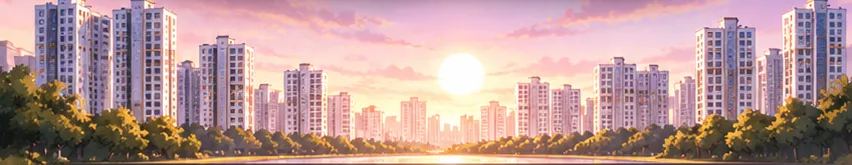

<!DOCTYPE html>
<html lang="ko"><head><meta charset="UTF-8">
<meta name="viewport" content="width=device-width, initial-scale=1, maximum-scale=1, user-scalable=no">
<link rel="manifest" href="manifest.webmanifest">
<meta name="theme-color" content="#281814">
<link rel="apple-touch-icon" href="img/icon-192.png">
<title>조합장 키우기 — 재건축은 처음이라</title><style>
:root{--bg:#efe9df;--card:#fffdf9;--ink:#26221d;--sub:#776c60;--line:#e2d9cb;--red:#c4472f;--green:#2f8a55;--gold:#d39b1f;--blue:#35659c;--chat:#dfe8f1}
*{box-sizing:border-box;-webkit-tap-highlight-color:transparent}
body{margin:0;background:var(--bg);color:var(--ink);font-family:-apple-system,"Apple SD Gothic Neo","Pretendard","Noto Sans KR",sans-serif;font-size:15px}
#app{max-width:480px;margin:0 auto;padding:10px 12px 40px;min-height:100vh}
button{font-family:inherit}
.btn{display:block;width:100%;border:none;border-radius:12px;padding:13px 14px;font-size:15px;font-weight:700;background:var(--ink);color:#fff;cursor:pointer;text-align:left;margin-top:8px;line-height:1.35}
.btn:active{transform:scale(.98)}
.btn.center{text-align:center}
.btn.ghost{background:#e9e1d4;color:var(--ink)}
.btn.gold{background:var(--gold);color:#352500}
.btn.red{background:var(--red)}
.btn:disabled{opacity:.45}
.btn .k{display:inline-block;width:22px;height:22px;border-radius:6px;background:rgba(255,255,255,.18);text-align:center;line-height:22px;font-size:12px;margin-right:8px}
.card{background:var(--card);border:1px solid var(--line);border-radius:16px;padding:14px;margin-bottom:10px}
/* HUD */
.top{display:flex;justify-content:space-between;align-items:center;margin:2px 2px 8px}
.top .t1{font-size:12px;color:var(--sub)}
.top .t2{font-size:16px;font-weight:800;letter-spacing:-.4px}
.top .ch{font-size:11px;background:var(--ink);color:#fff;border-radius:999px;padding:4px 9px;white-space:nowrap}
.hud{display:grid;grid-template-columns:repeat(3,1fr);gap:6px 10px;padding:12px}
.m .lb{font-size:11px;color:var(--sub);display:flex;justify-content:space-between}
.m .lb b{color:var(--ink);font-size:12px}
.bar{height:6px;background:#ebe3d6;border-radius:99px;overflow:hidden;margin-top:3px}
.bar i{display:block;height:100%;border-radius:99px;transition:width .4s}
.econ{display:flex;justify-content:space-between;align-items:center;padding:10px 14px;cursor:pointer}
.econ .v{font-size:18px;font-weight:800}
.econ .s{font-size:11px;color:var(--sub)}
.up{color:var(--red)} .dn{color:var(--green)}
/* event */
.who{display:flex;align-items:center;gap:10px;margin-bottom:10px}
.av{width:42px;height:42px;border-radius:12px;background:#f1e9dc;display:flex;align-items:center;justify-content:center;font-size:24px}
.who .n{font-weight:800;font-size:14px}
.who .r{font-size:12px;color:var(--sub)}
.cat{margin-left:auto;font-size:11px;padding:3px 8px;border-radius:99px;background:#f3ece0;color:var(--sub)}
.ev h2{font-size:19px;line-height:1.35;margin:0 0 8px;letter-spacing:-.4px}
.ev p{color:#4a433b;line-height:1.6;margin:0 0 6px;font-size:14.5px}
.odds{font-size:13px;background:#fff4dc;border:1px solid #f0dca8;border-radius:10px;padding:8px 10px;margin:8px 0}
.chips{display:flex;flex-wrap:wrap;gap:6px;margin:10px 0}
.chip{font-size:12px;font-weight:700;padding:4px 8px;border-radius:8px;background:#eee}
.chip.g{background:#e1f2e7;color:var(--green)} .chip.b{background:#fae3dd;color:var(--red)}
.res p{font-size:15px}
/* chat */
.chat{background:var(--chat);border-radius:16px;padding:12px;margin-bottom:10px}
.chat .hd{font-size:13px;font-weight:800;margin-bottom:8px;display:flex;justify-content:space-between}
.chat .hd span{font-weight:400;color:var(--sub)}
.msg{margin:8px 0}
.msg .nm{font-size:11px;color:var(--sub);margin:0 0 2px 4px}
.msg .bb{display:inline-block;background:#fff;border-radius:4px 14px 14px 14px;padding:8px 11px;font-size:14px;max-width:88%;line-height:1.45}
/* misc */
.title{text-align:center;padding:40px 10px 10px}
.title .logo{font-size:56px}
.title h1{font-size:30px;margin:8px 0 2px;letter-spacing:-1px}
.title .subt{color:var(--sub);font-size:14px}
.title blockquote{margin:24px 8px;font-size:15px;line-height:1.6;color:#4a433b}
.chapter{text-align:center;padding:50px 10px}
.chapter .no{font-size:13px;color:var(--sub);letter-spacing:2px}
.chapter h1{font-size:28px;margin:6px 0 10px}
.chapter .stars{color:var(--gold);font-size:18px}
.chapter p{color:#4a433b;line-height:1.6}
.adrow{display:flex;gap:6px}
.adrow .btn{font-size:13px;padding:10px;text-align:center}
.log{font-size:12px;color:var(--sub);max-height:150px;overflow:auto}
.log div{padding:4px 0;border-bottom:1px dashed var(--line)}
.grade{font-size:84px;font-weight:900;text-align:center;line-height:1;margin:10px 0}
.rep{display:grid;grid-template-columns:1fr 1fr;gap:8px}
.rep div{background:#f5efe5;border-radius:10px;padding:9px}
.rep .a{font-size:11px;color:var(--sub)} .rep .b{font-size:16px;font-weight:800}
.modal{position:fixed;inset:0;background:rgba(25,20,15,.6);display:flex;align-items:center;justify-content:center;padding:18px;z-index:9}
.modal .box{background:var(--card);border-radius:16px;padding:16px;width:100%;max-width:420px;max-height:90vh;overflow:auto}
.fake{background:#1d1d1d;color:#aaa;border-radius:12px;height:190px;display:flex;flex-direction:column;align-items:center;justify-content:center;font-size:13px;text-align:center}
.fake b{font-size:38px;color:#fff;margin-top:8px}
table.fin{width:100%;font-size:13px;border-collapse:collapse}
table.fin td{padding:6px 2px;border-bottom:1px solid var(--line)}
table.fin td:last-child{text-align:right;font-weight:700}
input[type=range]{width:100%}
.small{font-size:11px;color:var(--sub);line-height:1.5}
.fade{animation:fd .25s ease-out}
@keyframes fd{from{opacity:0;transform:translateY(6px)}to{opacity:1;transform:none}}
/* ---- v0.3 장면 연출 ---- */
.top{gap:8px}
.mini-me{width:40px;height:40px;border-radius:12px;background:#fff;overflow:hidden;flex:none;border:1px solid var(--line)}
.scene{position:relative;height:178px;border-radius:16px;overflow:hidden;margin-bottom:10px;border:1px solid var(--line)}
.scene .por svg{display:block;width:100%;height:100%}
.scene .big{position:absolute;left:6px;bottom:0;width:150px;height:150px}
.scene .me{position:absolute;right:4px;bottom:0;width:108px;height:108px;transform:scaleX(-1)}
.scene .group{position:absolute;left:0;bottom:0;width:200px;height:150px}
.scene .group .mini{position:absolute;bottom:0;width:96px;height:96px}
.scene .group .g0{left:0}.scene .group .g1{left:58px;bottom:18px;width:104px;height:104px}.scene .group .g2{left:122px}
.scene .plate{position:absolute;left:10px;top:10px;background:rgba(255,253,249,.92);border-radius:10px;padding:5px 9px;font-size:12px;color:var(--sub);max-width:62%}
.scene .plate b{color:var(--ink)}
.scene .meplate{position:absolute;right:10px;top:10px;background:rgba(38,34,29,.82);color:#fff;border-radius:10px;padding:5px 9px;font-size:11px}
.scene.fail{background:linear-gradient(180deg,#3b2f2f 0%,#3b2f2f 62%,#2a2222 62%)}
.scene.end{background:linear-gradient(180deg,#f7e6c4 0%,#f7e6c4 62%,#efc983 62%)}
.ev .cat{display:inline-block;margin:0 0 8px;font-size:11px;padding:3px 8px;border-radius:99px;background:#f3ece0;color:var(--sub)}
.pick{display:grid;grid-template-columns:1fr 1fr;gap:8px;margin:12px 0}
.pk{border:2px solid var(--line);background:#fff;border-radius:14px;padding:6px;cursor:pointer;font-family:inherit}
.pk svg{width:100%;height:auto;display:block}
.pk span{display:block;font-size:12px;color:var(--sub);margin-top:2px}
.pk.on{border-color:var(--ink);background:#fbf4e8}
input#pname{width:100%;font-size:16px;padding:11px;border-radius:10px;border:1px solid var(--line);margin-top:4px;font-family:inherit}
.castrow{display:flex;justify-content:center;flex-wrap:wrap;gap:6px;margin:6px 0 14px}
.castrow div{width:62px;font-size:11px;color:var(--sub)}
.castrow .mini{width:58px;height:58px;background:#fff;border-radius:12px;overflow:hidden;margin:0 auto 2px}
.castrow .mini svg{width:100%;height:100%}
.titlecast{position:relative;height:150px;margin:0 auto 6px;max-width:330px}
.titlecast .por{position:absolute;bottom:0;width:120px;height:120px}
.titlecast .por svg{width:100%;height:100%}
.titlecast .t1{left:0}.titlecast .t2{left:95px;width:140px;height:140px;z-index:2}.titlecast .t3{right:0}
.msg{display:flex;gap:8px;align-items:flex-start}
.msg .mav{width:36px;height:36px;border-radius:12px;background:#fff;overflow:hidden;flex:none}
.msg .mav svg{width:100%;height:100%}

/* ---- v0.4 미연시 연출 ---- */
.scene{position:relative;height:300px;border-radius:16px 16px 0 0;overflow:hidden;margin-bottom:0;border:none;background:#ddd}
.scene .bg,.titlecast .bg{position:absolute;inset:0}.scene .bg svg,.titlecast .bg svg{width:100%;height:100%;display:block}
.scene .bg:after{content:"";position:absolute;inset:0;background:linear-gradient(180deg,rgba(255,255,255,0) 55%,rgba(255,255,255,.35))}
.scene .por svg{display:block;width:100%;height:100%}
.scene .main{position:absolute;left:50%;bottom:-34px;width:250px;height:300px;transform:translateX(-64%);filter:drop-shadow(0 4px 10px rgba(0,0,0,.18));animation:enter .35s ease-out}
.scene .me{position:absolute;right:-22px;bottom:-36px;width:168px;height:202px;transform:scaleX(-1);filter:drop-shadow(0 3px 8px rgba(0,0,0,.2))}
.scene .group{position:absolute;left:0;bottom:-30px;width:250px;height:260px}
.scene .group .t{position:absolute;bottom:0;width:150px;height:180px}
.scene .group .g0{left:-10px}.scene .group .g1{left:62px;bottom:20px;width:160px;height:192px}.scene .group .g2{left:128px}
@keyframes enter{from{opacity:0;transform:translateX(-58%)}to{opacity:1;transform:translateX(-64%)}}
.scene .plate{position:absolute;left:10px;bottom:0;top:auto;background:#2b2f4a;color:#fff;border-radius:12px 12px 0 0;padding:7px 14px 6px;font-size:15px;font-weight:800;max-width:70%;z-index:3}
.scene .plate span{display:block;font-size:11px;font-weight:400;opacity:.75}
.scene .meplate{position:absolute;right:8px;top:8px;background:rgba(43,47,74,.85);color:#fff;border-radius:10px;padding:5px 9px;font-size:11px;z-index:3}
.scene + .card{border-radius:0 0 16px 16px;border:none;border-top:4px solid #2b2f4a;box-shadow:0 6px 16px rgba(43,47,74,.12)}
.scene + .card .btn:not(.gold):not(.ghost){background:#fff;color:#2b2f4a;border:2px solid #2b2f4a;box-shadow:0 3px 0 #2b2f4a}
.scene + .card .btn.red{background:#fff;color:#a8322a;border-color:#a8322a;box-shadow:0 3px 0 #a8322a}
.scene + .card .btn .k{background:#2b2f4a;color:#fff}
.scene + .card .btn.red .k{background:#a8322a}
.scene + .card #next{background:#2b2f4a;color:#fff}
.scene.fail .bg{filter:grayscale(.8) brightness(.6)}
.titlecast{position:relative;height:250px;margin:0 -12px 10px;overflow:hidden;border-radius:0 0 20px 20px}
.titlecast .por{position:absolute;bottom:-30px;width:170px;height:204px}
.titlecast .t1{left:-6px}.titlecast .t3{right:-6px}.titlecast .t2{left:50%;transform:translateX(-50%);width:210px;height:252px;bottom:-40px}
.title{padding-top:0}
.pk svg{background:linear-gradient(#f4ecdf,#fff)}
.castrow .mini{width:58px;height:58px}

/* ---- v0.5 이미지 입간판 · 말풍선 · 실시간 ---- */
.por.img{overflow:visible}
.por.img img{display:block;width:100%;height:100%;object-fit:contain;object-position:50% 100%}
.scene .por.img.main{bottom:-6px;width:270px;height:300px;transform:translateX(-66%)}
@keyframes enter{from{opacity:0;transform:translateX(-58%)}to{opacity:1;transform:translateX(-66%)}}
.scene .por.img.me{right:-26px;bottom:-4px;width:175px;height:195px}
.scene .group .por.img{width:150px;height:170px}
.por .fx{position:absolute;top:6%;right:16%;font-style:normal;font-size:30px;filter:drop-shadow(0 2px 2px rgba(0,0,0,.25))}
.scene .me .fx{transform:scaleX(-1);right:30%;font-size:24px}
.m-angry .fx{animation:fxpulse .6s ease-in-out infinite alternate}
.m-angry.main img{animation:shake .45s ease-in-out 2}
.m-shock img{animation:jump .35s ease-out 1}
.m-smile .fx{animation:twinkle 1.2s ease-in-out infinite}
.m-worried .fx{animation:drip 1.4s ease-in infinite}
.m-tired img{filter:saturate(.7) brightness(.95)}
@keyframes shake{0%,100%{transform:translateX(0)}25%{transform:translateX(-5px)}75%{transform:translateX(5px)}}
@keyframes jump{0%{transform:translateY(0)}40%{transform:translateY(-14px)}100%{transform:translateY(0)}}
@keyframes fxpulse{from{transform:scale(1)}to{transform:scale(1.25)}}
@keyframes twinkle{0%,100%{opacity:1;transform:scale(1)}50%{opacity:.5;transform:scale(.8)}}
@keyframes drip{0%{transform:translateY(-4px);opacity:0}30%{opacity:1}100%{transform:translateY(10px);opacity:0}}
img.fc{width:100%;height:100%;object-fit:cover;object-position:50% 18%;display:block}
.castrow .mini{background:#fff}
.pk img{width:100%;height:auto;display:block;background:linear-gradient(#e9f2f8,#fff);border-radius:10px}
.titlecast .por.img{bottom:-8px}
/* 말풍선 */
.bubble{position:absolute;top:12px;right:12px;max-width:56%;background:#fff;border:2.5px solid #2b2f4a;border-radius:18px;padding:9px 12px;font-size:14.5px;font-weight:800;line-height:1.4;color:#2b2f4a;z-index:4;box-shadow:0 3px 0 rgba(43,47,74,.25)}
.bubble:after{content:"";position:absolute;left:14px;bottom:-13px;border:7px solid transparent;border-top:12px solid #2b2f4a;border-right-width:2px}
.bubble:before{content:"";position:absolute;left:16px;bottom:-8px;border:5px solid transparent;border-top:9px solid #fff;border-right-width:1px;z-index:1}
.mebubble{position:absolute;right:118px;bottom:150px;max-width:46%;background:#2b2f4a;color:#fff;border-radius:16px;padding:8px 12px;font-size:14px;font-weight:800;z-index:4}
.mebubble:after{content:"";position:absolute;right:-10px;bottom:10px;border:6px solid transparent;border-left:12px solid #2b2f4a}
.pop{animation:pop .3s cubic-bezier(.2,1.6,.4,1)}
@keyframes pop{from{transform:scale(.6);opacity:0}to{transform:scale(1);opacity:1}}
.scene .meplate{top:auto;bottom:8px;right:8px}
.narr{font-size:14.5px;line-height:1.65;color:#4a433b;background:#f7f2ea;border-radius:10px;padding:10px 12px}
.replies-h{margin:12px 2px 0;text-align:right}
.scene + .card .btn.reply{border-radius:18px 18px 4px 18px;margin-left:12%;width:88%}
/* 실시간 */
.mbar{height:4px;background:#e6ddcf;border-radius:9px;overflow:hidden;margin-top:3px}
.mbar i{display:block;height:100%;background:linear-gradient(90deg,#d39b1f,#c4472f);transition:width .2s linear}
.econ{display:block}
.erow{display:flex;justify-content:space-between;align-items:center}
.fin-tick{font-size:12px;margin-top:8px;padding-top:8px;border-top:1px dashed var(--line);color:var(--sub)}
.fin-tick b{color:var(--ink);font-variant-numeric:tabular-nums}
.toast{position:fixed;left:50%;top:14px;transform:translateX(-50%);background:#2b2f4a;color:#fff;padding:10px 14px;border-radius:12px;font-size:13px;z-index:20;max-width:90%;animation:pop .3s}
/* ---- 단지 선택 ---- */
.cxcard{display:block;width:100%;text-align:left;background:var(--card);border:2px solid var(--line);border-radius:16px;padding:12px;margin-bottom:10px;font-family:inherit;cursor:pointer}
.cxcard:active{border-color:#2b2f4a;transform:scale(.99)}
.cxtop{display:flex;justify-content:space-between;gap:8px}
.cxn{font-size:17px;font-weight:900;color:var(--ink)}
.cxs{color:#c4472f;font-size:13px;white-space:nowrap}.cxs span{color:#ddd}
.cxnums{display:grid;grid-template-columns:repeat(3,1fr);gap:6px;margin:10px 0 8px}
.cxnums div{background:#f6f0e6;border-radius:10px;padding:7px 8px}
.cxnums span{display:block;font-size:11px;color:var(--sub)}
.cxnums b{font-size:17px;color:var(--ink)}.cxnums b.up{color:var(--red)}
.cxnums i{display:block;font-size:10px;font-style:normal;color:var(--sub)}
.cxtags{display:flex;flex-wrap:wrap;gap:4px}
.cxtags span{font-size:11px;background:#2b2f4a;color:#fff;border-radius:99px;padding:3px 8px}
.cxnote{margin-top:6px}

body:has(.tposter){background:radial-gradient(120% 70% at 50% 30%,#5a4660,#241b28)}
.tposter{margin:-10px -12px -40px;background:#2c2230;overflow:hidden;min-height:100vh;display:flex;flex-direction:column}
.tposter .sr{position:absolute;width:1px;height:1px;overflow:hidden;clip:rect(0 0 0 0)}
.tposter img{display:block;width:100%;height:auto}
.tp-mid{background:linear-gradient(180deg,#634a57 0%,#8a6a83 50%,#c698af 100%);padding:14px 0 18px;display:flex;flex-direction:column;align-items:center;gap:10px;margin-top:-1px}
.tp-btn{width:66%;max-width:330px;padding:14px 0;border:0;border-radius:40px;font-size:26px;font-weight:900;letter-spacing:-.5px;color:#3a2410;cursor:pointer;
 background:linear-gradient(180deg,#fff3c4 0%,#ffd76a 40%,#f6b73c 100%);box-shadow:0 0 0 3px #f8e3a6 inset,0 0 0 2px #b9812a,0 6px 0 #a86b1d,0 10px 22px rgba(0,0,0,.35),0 0 26px rgba(255,214,110,.55);font-family:inherit}
.tp-btn:active{transform:translateY(3px);box-shadow:0 0 0 3px #f8e3a6 inset,0 0 0 2px #b9812a,0 3px 0 #a86b1d,0 6px 14px rgba(0,0,0,.35)}
.tp-btn.ghost{font-size:17px;padding:9px 0;width:46%;background:rgba(255,255,255,.18);color:#fff;box-shadow:0 0 0 1.5px rgba(255,255,255,.6) inset}
.tp-bot{position:relative;margin-top:-1px;flex:1;background:linear-gradient(180deg,#5f4440,#3a2c3c 120px)}
.tp-bot p{margin:0;padding:12px 0 24px;text-align:center;color:#f3e6ef;font-size:13px;text-shadow:0 1px 3px rgba(0,0,0,.6)}

body:has(.cxpage){background:linear-gradient(180deg,#dfe2f3 0,#efe6ee 300px,#f3ebe8 100%)}
.cxpage{margin:-10px -12px 0;padding:0 10px 10px}
.cxhead{position:relative;margin:0 -10px -30px;aspect-ratio:851/246;min-height:215px;background:url(img/cx_head.webp) 70% bottom/cover;padding:22px 14px 0}
.cxhead h2{margin:0;font-size:25px;line-height:1.25;font-weight:900;letter-spacing:-1px;color:#1f2034;text-shadow:0 1px 0 rgba(255,255,255,.7)}
.cxhead p{margin:8px 0 0;font-size:12px;line-height:1.5;color:#3d3b4a;max-width:58%;text-shadow:0 1px 0 rgba(255,255,255,.7)}
.cxpage .cxcard{position:relative;background:#fff;border:0;border-radius:22px;padding:16px 14px 14px;margin-bottom:14px;box-shadow:0 4px 18px rgba(80,60,90,.12)}
.cxpage .cxcard:active{transform:scale(.985);box-shadow:0 0 0 2px #2b3566,0 4px 18px rgba(80,60,90,.12)}
.cxpage .cxtop{align-items:center}
.cxpage .cxn{font-size:22px;letter-spacing:-.6px}
.cxpage .cxs{font-size:17px;color:#e2412c}.cxpage .cxs span{color:#d9d6d6}
.cxmeta{font-size:12px;color:#5a5560;margin-top:4px}
.cxpage .cxnums{gap:8px;margin:12px 0 10px}
.cxpage .cxnums div{background:linear-gradient(180deg,#fcf3e8,#f8ece0);border-radius:14px;padding:10px 10px}
.cxpage .cxnums span{font-size:11.5px;color:#5c5245}
.cxpage .cxnums b{display:block;font-size:22px;margin:2px 0;letter-spacing:-.5px}
.cxpage .cxnums i{font-size:11px}
.cxpage .cxtags{gap:6px}
.cxpage .cxtags span{font-size:12px;font-weight:700;background:#323c6b;padding:6px 12px;border-radius:99px;box-shadow:0 1px 3px rgba(0,0,0,.15)}
.cxnote{font-size:12px;color:#3d3b4a;margin-top:10px;line-height:1.5}

.edex summary{cursor:pointer;font-weight:900;font-size:15px;list-style:none}.edex summary b{color:var(--red)}
.edgrid{display:grid;grid-template-columns:repeat(2,1fr);gap:6px;margin-top:10px}
.ed{display:flex;align-items:center;gap:6px;background:#f2ede6;border-radius:10px;padding:7px 8px;font-size:12px;color:#a59c90;font-weight:700}
.ed span{font-size:18px}.ed.on{background:#fff7e6;color:#3a2e1e;box-shadow:0 0 0 1px #f0d9a8 inset}.ed.now{box-shadow:0 0 0 2px #e2a72c inset}

/* ---- 2.0 육성 ---- */
.plan h2{font-size:20px}.acts{display:grid;grid-template-columns:1fr 1fr;gap:8px;margin:10px 0}
.act{text-align:left;border:2px solid #e4dccd;background:#fffdf8;border-radius:12px;padding:9px;font:inherit;cursor:pointer;display:flex;flex-direction:column;gap:2px}
.act b{font-size:14px}.act span{font-size:11px;line-height:1.35}.act .g{color:#2f7d4f}.act .b{color:#b4483c}
.act.on{border-color:var(--gold);background:#fff4d6;box-shadow:0 0 0 2px #f2c94c55}
.adtools{display:grid;gap:6px;margin-top:8px}.adtools .btn{margin:0;font-size:13px}.adtools .btn span{font-weight:400;font-size:11px}
.abrow{display:flex;flex-wrap:wrap;gap:4px;margin-top:4px;font-size:11px}.abrow span{background:#00000010;border-radius:8px;padding:1px 6px}
.lockc{font-size:12px;color:#8a7f70;border:1px dashed #cfc5b4;border-radius:10px;padding:7px;margin-top:6px}
.btn.unl{background:linear-gradient(135deg,#6a4cc2,#3e7bd6);color:#fff;border:0}
.types{display:grid;grid-template-columns:1fr 1fr 1fr;gap:6px;margin:6px 0}.ty{border:2px solid #e4dccd;background:#fffdf8;border-radius:10px;padding:6px 4px;font:inherit;font-size:12px;cursor:pointer}
.ty.on{border-color:var(--gold);background:#fff4d6;font-weight:800}
.nsec{margin-top:10px}.nrow{display:flex;justify-content:space-between;align-items:center;gap:8px;padding:5px 0;border-bottom:1px solid #00000010;font-size:13px}
.nrow .bar{flex:1;height:7px;background:#00000012;border-radius:4px;overflow:hidden;max-width:120px}.nrow .bar i{display:block;height:100%;background:var(--gold)}
.aw{background:#fbf6ea;border-left:4px solid var(--gold);padding:10px 12px;border-radius:8px;line-height:1.6;font-size:14px}
.ed em{font-style:normal;font-size:10px;line-height:1.3;display:block;color:#5c5346}button.ed{font:inherit;cursor:pointer}.ed .hb{font-style:normal;font-size:10px;color:var(--gold);display:block}
/* ---- UI 2.1 ---- */
.top2{position:relative;display:flex;align-items:center;gap:10px;margin:-10px -12px 10px;padding:16px 12px 12px;min-height:84px;overflow:hidden;background:linear-gradient(180deg,#f6ebe2,#f1e7dc)}
.sky2{position:absolute;right:-10px;top:0;bottom:0;width:72%;background:url(img/ui/sky.webp) 40% 72%/cover;-webkit-mask:linear-gradient(90deg,transparent,#000 45%);mask:linear-gradient(90deg,transparent,#000 45%);opacity:.95}
.mini2{position:relative;width:58px;height:58px;border-radius:16px;overflow:hidden;flex:none;background:#fff;border:3px solid #f0c27a;box-shadow:0 3px 10px rgba(120,80,30,.25)}
.mini2 img,.mini2 svg{width:100%;height:100%;object-fit:cover}
.tx2{position:relative;flex:1;min-width:0}.tx2 .t1{font-size:11.5px;color:#4a4038;white-space:nowrap;overflow:hidden;text-overflow:ellipsis}.tx2 .t2{font-size:19px;font-weight:900;letter-spacing:-.6px;color:#2a211b;text-shadow:0 1px 0 #fff8}
.ch2{position:relative;align-self:flex-end;font-size:10.5px;max-width:42%;overflow:hidden;text-overflow:ellipsis;font-weight:700;color:#fbe9cf;background:linear-gradient(180deg,#5a3a24,#3b2414);border:1.5px solid #d6a861;border-radius:999px;padding:6px 10px;white-space:nowrap;box-shadow:0 3px 8px rgba(60,30,10,.3)}
.hud2{border-radius:20px;padding:12px 10px 10px;box-shadow:0 4px 14px rgba(110,80,50,.1);display:grid;grid-template-columns:repeat(3,1fr);gap:0}
.m2{padding:6px 8px 8px;border-right:1px solid #00000010;border-bottom:1px solid #00000010}.m2:nth-child(3n){border-right:0}.m2:nth-child(n+4){border-bottom:0}
.lb2{display:flex;align-items:center;gap:4px;font-size:12px;color:#4a4038}.lb2 img{width:20px;height:16px;object-fit:contain}.lb2 b{margin-left:auto;font-size:16px;color:#1f1a16}
.bar2{height:8px;background:#ece5dc;border-radius:6px;margin-top:6px;overflow:hidden}.bar2 i{display:block;height:100%;border-radius:6px;transition:width .6s cubic-bezier(.2,.9,.3,1.2)}
.abrow2{grid-column:1/-1;display:flex;flex-wrap:wrap;align-items:center;gap:5px;margin-top:10px}
.abrow2 span{background:linear-gradient(180deg,#fbf6ef,#f1e9de);border-radius:99px;padding:4px 9px;font-size:12px;box-shadow:inset 0 0 0 1px #0000000d}.abrow2 b{margin-left:2px;font-size:13px}
.abrow2 i{display:none}.abrow2 .opp{font-size:11.5px}
.econ2{border-radius:20px}.econ2 .v{font-size:28px}.econ2 .er2{text-align:right;border-left:1px solid #0000000f;padding-left:12px}.econ2 .er2 .v{font-size:22px}
.coin{display:inline-grid;place-items:center;width:17px;height:17px;border-radius:50%;background:radial-gradient(#f6d27a,#d29a2a);color:#6b4a10;font-size:10px;font-weight:900;font-style:normal}
.pill2{font-size:12px;font-weight:700;border-radius:99px;padding:2px 8px;vertical-align:middle;background:#eee;color:#555}.pill2.up{background:#fbe1dc;color:#c0392b}.pill2.dn{background:#dcf1e2;color:#2f7d4f}.pill2.g{background:#f3e6c9;color:#7a5a1e}
/* 일정 카드 */
.plan{position:relative;border-radius:22px;background:linear-gradient(180deg,#fffaf3,#fbf3e8);box-shadow:0 4px 14px rgba(110,80,50,.1);overflow:hidden}
.plan>*{position:relative}.plan .calimg{position:absolute;right:6px;top:0;width:84px;opacity:.95;pointer-events:none}
.plan h2{font-size:24px!important;letter-spacing:-.8px}
.acts{gap:10px}
.act{flex-direction:row!important;align-items:center;gap:9px!important;border:1.5px solid #ebdfcf!important;background:linear-gradient(180deg,#fffdf9,#fbf5ec)!important;border-radius:16px!important;padding:9px 8px!important;position:relative;box-shadow:0 2px 6px rgba(110,80,50,.06);animation:stg .35s both;animation-delay:var(--d,0ms);transition:transform .15s,box-shadow .2s,border-color .2s}
.act .aic{flex:none;width:46px;height:46px;display:grid;place-items:center;border-radius:13px;background:linear-gradient(180deg,#fbf3e7,#f2e6d4);box-shadow:inset 0 0 0 1px #00000008}.act .aic img{width:100%;height:100%;border-radius:13px}.act .aic span{font-size:24px}
.act .atx{display:flex;flex-direction:column;gap:1px;min-width:0}.act .atx b{font-size:15px;letter-spacing:-.4px}
.act .chk{position:absolute;right:7px;top:7px;width:20px;height:20px;border-radius:50%;background:#d9a43a;color:#fff;font-style:normal;font-size:12px;font-weight:900;display:grid;place-items:center;transform:scale(0);transition:transform .25s cubic-bezier(.3,1.6,.5,1)}
.act.on{border-color:#e2b04d!important;background:linear-gradient(180deg,#fff6df,#fdebc2)!important;box-shadow:0 0 0 2px #f2c94c66,0 4px 12px rgba(200,150,40,.25)!important}.act.on .chk{transform:scale(1)}
.act:active{transform:scale(.96)}
/* 단지 카드 */
.cxhead{aspect-ratio:auto!important;min-height:200px}.cxhead .laurel{position:absolute;left:4px;top:14px;width:72px;opacity:.95}.cxhead h2,.cxhead p{position:relative;margin-left:66px!important}.cxhead p{max-width:62%!important}
.cxtw{display:flex;align-items:center;gap:10px}.cxbld{width:78px;max-height:70px;object-fit:contain;flex:none;border-right:1px solid #0000001a;padding-right:8px}
.cxnw{flex:1;min-width:0}.cxnw .cxn{display:inline}.cxnw .cxs{float:right;margin-top:4px}.cxnw .cxmeta{clear:both;margin-top:2px}
.cxpage .cxnums div{text-align:center;box-shadow:0 2px 6px rgba(120,80,40,.08)}.cxpage .cxnums span{display:flex;align-items:center;justify-content:center;gap:3px}.cxpage .cxnums span img{width:22px;height:20px;object-fit:contain}
.cxpage .cxnums i{border-top:1px solid #0000000f;padding-top:4px;margin-top:2px}
.cxpage .cxtags span{display:inline-flex;align-items:center;gap:6px;background:linear-gradient(180deg,#3b4677,#2a335c)!important}.cxtags em{font-style:normal;font-size:13px}
.cxnote{display:flex;align-items:center;gap:8px;border-top:1px solid #0000000f;padding-top:9px}.cxnote img{width:20px}.cxnote i{width:1px;height:16px;background:#0000002a}
.cxpage .cxcard{animation:stg .45s both}.cxpage .cxcard:nth-of-type(2){animation-delay:.07s}.cxpage .cxcard:nth-of-type(3){animation-delay:.14s}.cxpage .cxcard:nth-of-type(4){animation-delay:.21s}
/* 효과 */
.rip{position:absolute;border-radius:50%;background:rgba(255,255,255,.55);transform:scale(0);animation:rip .6s ease-out forwards;pointer-events:none;mix-blend-mode:soft-light}
.btn.ghost .rip,.act .rip,.cxcard .rip{background:rgba(210,160,60,.35);mix-blend-mode:normal}
@keyframes rip{to{transform:scale(1);opacity:0}}
.btn{transition:transform .12s,filter .15s}.btn:active:not([disabled]){transform:scale(.96);filter:brightness(1.05)}
[data-c],[data-i]{animation:stg .35s both;animation-delay:var(--d,0ms)}
@keyframes stg{from{opacity:0;transform:translateY(10px)}to{opacity:1;transform:none}}
#app.pg-slide{animation:pgSlide .38s cubic-bezier(.2,.8,.2,1)}
#app.pg-flip{animation:pgFlip .5s cubic-bezier(.2,.8,.2,1);transform-origin:50% 0;perspective:900px}
#app.pg-up{animation:pgUp .4s cubic-bezier(.2,.8,.2,1)}
#app.pg-zoom{animation:pgZoom .55s cubic-bezier(.2,.8,.2,1)}
@keyframes pgSlide{from{opacity:0;transform:translateX(28px)}to{opacity:1;transform:none}}
@keyframes pgFlip{from{opacity:0;transform:rotateX(-9deg) translateY(16px)}to{opacity:1;transform:none}}
@keyframes pgUp{from{opacity:0;transform:translateY(22px) scale(.98)}to{opacity:1;transform:none}}
@keyframes pgZoom{from{opacity:0;transform:scale(.93);filter:blur(3px)}to{opacity:1;transform:none;filter:none}}
.wipe{position:fixed;inset:0;z-index:50;pointer-events:none;background:linear-gradient(100deg,transparent 30%,rgba(255,236,200,.55) 50%,transparent 70%);animation:wipe .6s ease-out forwards}
@keyframes wipe{from{transform:translateX(-100%)}to{transform:translateX(100%)}}
.modal .box{animation:pop .28s cubic-bezier(.3,1.4,.5,1)}
@media (prefers-reduced-motion:reduce){#app[class*=pg-],.act,[data-c],.cxcard,.wipe,.rip{animation:none!important}}
/* ---- 쉬움·보기쉽게 ---- */
.warn2{display:flex;align-items:center;gap:8px;flex-wrap:wrap;background:linear-gradient(90deg,#fde3dc,#fff1e6);border:1.5px solid #f0a28f;border-radius:14px;padding:8px 12px;margin:0 0 10px;font-size:13px;animation:warnp 1.6s ease-in-out infinite}
.warn2 b{color:#b23a26}.warn2 span{color:#5a4a40;font-size:12px}.warn2 em{margin-left:auto;font-style:normal;font-size:11px;background:#e0654f;color:#fff;border-radius:99px;padding:1px 7px}
@keyframes warnp{0%,100%{box-shadow:0 0 0 0 #e0654f00}50%{box-shadow:0 0 0 4px #e0654f22}}
.m2{cursor:pointer}.m2.dang{background:#fff1ec;border-radius:10px}.m2.dang .lb2 b{color:#c0392b}.m2.dang .bar2{box-shadow:0 0 0 1.5px #e0654f88}
.fxrow{display:flex;flex-wrap:wrap;gap:4px;margin-top:6px;width:100%}
.fxc{font-style:normal;font-size:11px;font-weight:700;border-radius:99px;padding:2px 7px;background:#eee;color:#555;margin-right:3px}
.fxc.gd{background:#dcf1e2;color:#22703e}.fxc.bd{background:#fbe1dc;color:#b23a26}
.btn.reply{flex-wrap:wrap}
.act .rec{position:absolute;left:6px;top:-8px;font-style:normal;font-size:10.5px;font-weight:800;background:linear-gradient(135deg,#2f8a4c,#4fb06a);color:#fff;border-radius:99px;padding:2px 7px;box-shadow:0 2px 5px rgba(40,120,60,.3)}
.tip2{background:#eef7e8;border-radius:12px;padding:8px 10px;font-size:13px;margin:8px 0 0}.tip2 span{color:#6a6a5a;font-size:12px}
.tut{display:flex;gap:10px;align-items:flex-start;margin:8px 0;line-height:1.5;font-size:14px}.tut>b{flex:none;width:24px;height:24px;border-radius:50%;background:var(--gold);color:#fff;display:grid;place-items:center;font-size:13px}
</style><script type="module">
// 원스토어 H5 Game SDK v1.1.0 (원스토어 앱/검증 도구 안에서만 동작, 일반 브라우저에서는 err 반환 후 무시)
try {
  const { createSDK } = await import('https://h5sdk.onestore.net/lib/v1.1.0/onestore-h5-sdk.min.js');
  const sdk = createSDK(); window.OS_SDK = sdk;
  sdk.on('exit', () => { try { if (window.S && typeof save === 'function') save(); } catch (e) {} });
  sdk.on('pause', () => {}); sdk.on('resume', () => {});
  const init = await sdk.initializeAsync();
  window.OS_IN = !!init && !init.err;
  if (window.OS_IN) { sdk.setLoadingProgress(100); try { await sdk.startGameAsync(); } catch (e) {} }
} catch (e) { window.OS_IN = false; }
</script>
</head>
<body><div id="app"></div><div id="modalRoot"></div>
<script type="application/json" id="events">[{"id": "CH01-E01", "chapter": 1, "title": "“우리 아파트는 왜 아직도 재건축을 안 해요?”", "category": "반상회", "who": "jirap", "description": "40년 된 은하아파트 반상회. 녹물, 주차 전쟁, 엘리베이터 고장 이야기 끝에 오지랖이 말합니다. 모두의 시선이 평소 말 잘하는 당신에게 꽂혔습니다.", "choices": [{"id": "A", "text": "“제가 한번 알아보겠습니다.” 손을 든다", "effects": {"support": 6, "stress": 4}, "result": "박수가 터졌습니다. 그날 밤부터 당신 휴대폰 알림이 멈추지 않습니다."}, {"id": "B", "text": "전문가 초청 설명회부터 열자고 제안한다", "effects": {"transparency": 6, "funds": -0.3, "support": 2}, "result": "재건축 절차를 처음 들은 주민들이 생각보다 길고 복잡하다는 걸 알게 됐습니다."}, {"id": "C", "text": "단톡방에서 의견부터 모아 보자고 한다", "effects": {"support": 3, "opposition": 2}, "result": "단톡방은 하루 만에 300명이 됐습니다. 그중 한 명이 박반대였습니다."}]}, {"id": "CH01-E02", "chapter": 1, "title": "“추가 분담금 낼 돈 없어요.”", "category": "주민", "who": "elder", "description": "40년을 이 아파트에서 산 한노인 어르신이 당신 손을 꼭 잡습니다. “재건축하면 나 같은 사람은 쫓겨나는 거 아니에요?”", "choices": [{"id": "A", "text": "분담금 걱정 세대를 위한 상담 창구를 약속한다", "effects": {"support": 4, "stress": 3}, "flag": "elderCare", "result": "어르신이 안심한 얼굴로 돌아가셨습니다. 경로당에 소문이 났습니다."}, {"id": "B", "text": "“재건축하면 다 부자 됩니다!”", "effects": {"support": 6, "legal_risk": 5}, "flag": "overpromise", "result": "어르신은 웃으셨지만, 이 말은 녹음돼 단톡방에 올라갔습니다."}, {"id": "C", "text": "예상 비용을 솔직하게 설명한다", "effects": {"support": -2, "transparency": 7}, "result": "어르신 표정이 어두워졌지만 “말은 정직하네”라고 하셨습니다."}]}, {"id": "CH01-E03", "chapter": 1, "title": "“일단 빨리 추진합시다. 속도가 돈입니다.”", "category": "주민", "who": "investor", "description": "3년 전 이 단지를 산 투자자 조합원 나빨리가 엑셀 파일을 내밉니다. 시세 차익 계산이 빽빽합니다.", "choices": [{"id": "A", "text": "속도전에 동의한다", "effects": {"support": 3, "legal_risk": 6}, "result": "투자자 그룹이 열렬히 지지합니다. 실거주 어르신들은 불안해합니다."}, {"id": "B", "text": "단계별 절차를 지키자고 설득한다", "effects": {"transparency": 4, "support": -1}, "result": "나빨리는 “답답하네요”라고 했지만 반대하지는 않았습니다."}, {"id": "C", "text": "투자자 그룹에 홍보팀을 맡긴다", "effects": {"support": 3, "funds": 1, "opposition": 3}, "result": "홍보물 퀄리티가 확 올라갔습니다. 실거주민들은 ‘외지인 재건축’이라며 수군댑니다."}]}, {"id": "CH01-E04", "chapter": 1, "title": "“우리 상가 권리는 누가 보장합니까?”", "category": "상가", "who": "sangga", "description": "단지 상가에서 30년째 세탁소를 하는 권상가가 앞치마 차림으로 찾아왔습니다.", "choices": [{"id": "A", "text": "상가 협의체를 만들겠다고 약속한다", "effects": {"support": 2, "legal_risk": -5}, "flag": "sanggaEarly", "result": "권상가가 처음으로 웃었습니다. 상가 쪽 동의서가 들어오기 시작합니다."}, {"id": "B", "text": "“상가 문제는 나중에 봅시다.”", "effects": {"opposition": 5, "legal_risk": 8}, "result": "상가 조합원 40명이 등을 돌렸습니다."}, {"id": "C", "text": "상가 전문 컨설턴트를 붙인다", "effects": {"funds": -1, "legal_risk": -6}, "result": "비용은 들었지만 상가 권리 문제의 쟁점이 정리됐습니다."}]}, {"id": "CH01-E05", "chapter": 1, "title": "안전진단 비용을 모아야 합니다", "category": "재무", "who": "clerk", "description": "재건축의 첫 관문은 안전진단입니다. 자원봉사로 합류한 서기록이 말합니다. “용역비가 꽤 듭니다. 어떻게 마련하죠?”", "choices": [{"id": "A", "text": "세대별 자율 모금을 한다", "effects": {"funds": 2, "support": -2, "transparency": 3}, "result": "모금 현황판을 엘리베이터에 붙였습니다. 내는 사람도, 안 내는 사람도 서로를 봅니다."}, {"id": "B", "text": "외부 대여금을 받는다", "effects": {"funds": 3, "finance": 20, "legal_risk": 2}, "result": "돈은 빨리 마련됐지만 이자 조건이 붙었습니다."}, {"id": "C", "text": "내 돈으로 먼저 낸다", "effects": {"funds": 2, "stress": 8, "support": 5}, "result": "“저 사람 진심이네.” 지지율이 올랐고 배우자의 표정은 굳었습니다."}]}, {"id": "CH01-E06", "chapter": 1, "title": "“제가 추진위원장 하겠습니다.”", "category": "정치", "who": "bandae", "mood": "normal", "description": "같은 동에 사는 박반대가 손을 들었습니다. 전직 건설회사 부장 출신이라며 경력을 강조합니다.", "choices": [{"id": "A", "text": "공개 경선을 제안한다", "effects": {"stress": 5, "transparency": 5, "support": 2, "opposition": 3}, "result": "경선 날짜가 잡혔습니다. 박반대는 “좋습니다, 정정당당하게”라고 했습니다."}, {"id": "B", "text": "공동위원장을 제안한다", "effects": {"opposition": -5, "stress": 6}, "flag": "coChair", "result": "어색한 동거가 시작됐습니다. 회의마다 의견이 두 개씩 나옵니다."}, {"id": "C", "text": "주민 추천서를 모아 밀어붙인다", "effects": {"support": 4, "opposition": 9}, "result": "당신이 추진위원장 후보로 확정됐습니다. 박반대의 눈빛이 달라졌습니다."}]}, {"id": "CH01-E07", "chapter": 1, "title": "안전진단 결과 발표", "category": "절차", "who": "official", "description": "보완해 주무관이 결과 공문을 건넵니다. 판정은 ‘조건부 재건축’. 한숨과 환호가 동시에 터집니다.", "choices": [{"id": "A", "text": "“통과다!” 축하 현수막을 건다", "effects": {"support": 6, "funds": -0.3}, "result": "‘경축 안전진단 통과’ 현수막 앞에서 다들 사진을 찍었습니다."}, {"id": "B", "text": "다음 절차와 남은 리스크를 차분히 공지한다", "effects": {"transparency": 6, "support": 2}, "result": "“이제 시작이구나.” 분위기가 진지해졌습니다."}, {"id": "C", "text": "정밀 검토 요청에 대비해 자료를 보강한다", "effects": {"funds": -0.5, "legal_risk": -4}, "result": "서류철이 두꺼워졌습니다. 서기록이 처음으로 한숨을 쉬었습니다."}]}, {"id": "CH01-E08", "chapter": 1, "title": "추진위원회 승인 신청 · 동의서 과반 확보전", "category": "보스전", "who": "jirap", "special": "vote", "diff": 0.15, "description": "추진위원회 승인을 받으려면 토지등소유자 과반수의 동의서가 필요합니다. 마감까지 일주일, 동의서 함이 아직 반쯤 비어 있습니다.", "vote_text": "마지막 일주일, 총력전에 들어간다", "win": "동의서 과반 확보! 구청이 추진위원회 구성을 승인했습니다. 당신은 이제 ‘추진위원장’입니다.", "win_fx": {"support": 4, "stress": -4}, "fail": "nopromo"}, {"id": "CH02-E01", "chapter": 2, "title": "“저는 분담금 0원으로 재건축하겠습니다!”", "category": "선거", "who": "bandae", "mood": "smile", "description": "조합장 선거가 시작됐습니다. 상대 후보 박반대의 첫 공약이 단지 곳곳에 붙었습니다. 사람들이 당신에게 묻습니다. “그쪽 공약은 뭐예요?”", "choices": [{"id": "A", "text": "현실적인 사업성을 숫자로 공개한다", "effects": {"support": -5, "transparency": 10}, "flag": "honest", "result": "“재미는 없는데 믿음은 간다.” 지지층은 작지만 단단합니다."}, {"id": "B", "text": "최고급 브랜드 유치를 약속한다", "effects": {"support": 8}, "flag": "brandPromise", "result": "지지율이 뛰었습니다. 이 약속은 시공사 선정 때 다시 돌아옵니다."}, {"id": "C", "text": "모든 조합원에게 큰 평형을 약속한다", "effects": {"support": 12, "legal_risk": 8}, "flag": "bigPromise", "result": "선거 사무실에 사람이 몰렸습니다. 평형 배정 날이 벌써 걱정됩니다."}]}, {"id": "CH02-E02", "chapter": 2, "title": "선거 캠프를 꾸려야 합니다", "category": "선거", "who": "kim", "description": "정비업체 대표 김계약이 명함을 내밉니다. “선거 홍보물, 저희가 싸게 해 드릴 수 있습니다. 나중에 잘 봐주시면 되고요.”", "choices": [{"id": "A", "text": "거절하고 자원봉사자로 캠프를 꾸린다", "effects": {"transparency": 4, "stress": 5}, "result": "홍보물은 투박하지만 떳떳합니다."}, {"id": "B", "text": "오지랖에게 홍보를 맡긴다", "effects": {"support": 5, "legal_risk": 3}, "result": "단톡방 홍보력은 최강입니다. 가끔 사실과 다른 말이 섞입니다."}, {"id": "C", "text": "김계약의 제안을 받는다", "effects": {"support": 6, "legal_risk": 12, "funds": 0.5}, "flag": "kimHelp", "result": "홍보물이 화려해졌습니다. 김계약의 ‘나중에’가 마음에 걸립니다."}]}, {"id": "CH02-E03", "chapter": 2, "title": "“그 후보, 업체 돈 받았다더라.”", "category": "선거", "who": "jirap", "mood": "worried", "description": "출처 불명의 소문이 당신을 겨냥합니다. 캡처본이 이미 세 개 단톡방에 돌았습니다.", "choices": [{"id": "A", "text": "해명 영상과 함께 통장 내역을 공개한다", "effects": {"transparency": 8, "stress": 6, "support": 3}, "alt": [{"flag": "kimHelp", "effects": {"transparency": 4, "stress": 8, "support": -6, "legal_risk": 6}, "result": "통장은 깨끗했지만 김계약 업체가 만든 홍보물 견적서가 뒤늦게 공개됐습니다."}], "result": "소문은 하루 만에 힘을 잃었습니다."}, {"id": "B", "text": "무대응한다", "effects": {"support": -6}, "result": "침묵은 인정으로 받아들여졌습니다."}, {"id": "C", "text": "상대 후보 의혹으로 맞불을 놓는다", "effects": {"support": 2, "opposition": 10, "legal_risk": 5}, "result": "선거가 진흙탕이 됐습니다. 누가 이기든 상처가 남습니다."}]}, {"id": "CH02-E04", "chapter": 2, "title": "상대 캠프가 참치캔 세트를 돌립니다", "category": "선거", "who": "elder", "mood": "smile", "description": "한노인 어르신이 선물 세트를 들고 웃습니다. “저쪽에서 주던데? 그쪽은 뭐 없어요?”", "choices": [{"id": "A", "text": "선거관리위원회에 공식 문제 제기한다", "effects": {"legal_risk": -5, "opposition": 5, "support": -1}, "result": "선관위가 경고 공문을 보냈습니다. 상대 캠프는 ‘고자질’이라며 반발합니다."}, {"id": "B", "text": "우리도 선물을 돌린다", "effects": {"support": 5, "legal_risk": 15, "funds": -0.5}, "result": "선물 경쟁이 시작됐습니다. 이건 나중에 반드시 문제가 됩니다."}, {"id": "C", "text": "정책 비교표로 대응한다", "effects": {"transparency": 5, "support": 2}, "result": "“선물보다 이게 낫네.” 젊은 조합원들이 반응합니다."}]}, {"id": "CH02-E05", "chapter": 2, "title": "후보 토론회", "category": "선거", "who": "bandae", "description": "경로당 2층 토론회장. 박반대가 마이크를 잡고 “분담금 0원”을 외칩니다. 당신 차례입니다.", "choices": [{"id": "A", "text": "숫자와 근거로 승부한다", "effects": {"support": 2, "transparency": 4}, "alt": [{"flag": "honest", "effects": {"support": 8, "transparency": 5}, "result": "처음부터 숫자를 공개해 온 덕분에 설명에 힘이 실렸습니다. 박반대가 말을 더듬었습니다."}], "result": "정확했지만 조금 어려웠습니다."}, {"id": "B", "text": "40년 이웃의 정에 호소한다", "effects": {"support": 5}, "result": "어르신들이 고개를 끄덕였습니다."}, {"id": "C", "text": "“분담금 0원이 가능하다면 계산서를 보여주세요.”", "effects": {"support": 4, "opposition": 8}, "result": "박반대가 대답을 못 했습니다. 대신 앙금이 깊어졌습니다."}]}, {"id": "CH02-E06", "chapter": 2, "title": "“투표장까지 가기가 힘들어서….”", "category": "선거", "who": "elder", "description": "고령 조합원 상당수가 거동이 불편합니다. 이 표가 승부를 가를 수 있습니다.", "choices": [{"id": "A", "text": "서면결의서 절차를 집집마다 안내한다", "effects": {"stress": 6, "support": 4, "transparency": 2}, "result": "규정에 맞는 절차를 하나하나 설명했습니다. 손이 많이 갔지만 깔끔합니다."}, {"id": "B", "text": "투표일 셔틀을 운영한다", "effects": {"funds": -0.5, "support": 3}, "result": "어르신들이 소풍 가듯 투표장에 오셨습니다."}, {"id": "C", "text": "신경 쓰지 않는다", "effects": {"support": -3}, "result": "경로당 표심이 상대 쪽으로 기울었습니다."}]}, {"id": "CH02-E07", "chapter": 2, "title": "선거관리를 누가 맡을까", "category": "선거", "who": "wonchik", "description": "최원칙이 공개 질의서를 보냈습니다. “선거관리위원회를 추진위 사람들로만 꾸리면 공정하다고 할 수 있습니까?”", "choices": [{"id": "A", "text": "외부 기관에 선거관리를 맡긴다", "effects": {"funds": -1, "transparency": 8, "legal_risk": -6}, "result": "최원칙이 “이번 건은 인정합니다”라고 답했습니다."}, {"id": "B", "text": "추진위 내부에서 관리한다", "effects": {"legal_risk": 6, "opposition": 6}, "result": "결과가 어떻든 뒷말이 나올 구조가 됐습니다."}]}, {"id": "CH02-E08", "chapter": 2, "title": "조합장 선거 개표", "category": "보스전", "who": "bandae", "special": "vote", "diff": 0.06, "description": "창립총회장. 투표함이 열립니다. 박반대가 팔짱을 끼고 앞줄에 앉아 있습니다.", "vote_text": "개표를 지켜본다", "win": "당선! 당신이 은하아파트 재건축조합 초대 조합장입니다. 박반대는 말없이 자리를 떴습니다.", "win_fx": {"support": 5, "opposition": 5, "stress": -5}, "fail": "lost"}, {"id": "CH02-E09", "chapter": 2, "title": "낙선한 박반대를 어떻게 할까", "category": "정치", "who": "bandae", "mood": "angry", "description": "선거는 끝났지만 박반대를 지지한 조합원이 40%입니다. 그는 “지켜보겠다”는 말만 남겼습니다.", "choices": [{"id": "A", "text": "집행부 이사로 영입을 제안한다", "effects": {"opposition": -8, "stress": 6}, "result": "박반대는 거절했지만 제안 사실이 알려져 분위기가 누그러졌습니다."}, {"id": "B", "text": "거리를 둔다", "effects": {"opposition": 6}, "result": "박반대 쪽 사람들이 따로 모이기 시작했습니다."}, {"id": "C", "text": "감사 추천권을 넘긴다", "effects": {"opposition": -5, "legal_risk": -3, "transparency": 4}, "result": "견제 장치가 생겼습니다. 감사로 조목조가 추천됐습니다."}]}, {"id": "CH03-E01", "chapter": 3, "title": "정비업체 견적서를 받았습니다", "category": "계약", "who": "kim", "mood": "smile", "description": "김계약이 견적서를 펼칩니다. 홍보요원 운영비, 동의서 징구 용역비, 총회 대행비, 각종 자문료…. 이해 안 되는 항목이 가득합니다.", "choices": [{"id": "A", "text": "가장 싼 업체로 간다", "effects": {"funds": 1.5, "legal_risk": 9}, "flag": "cheapPM", "result": "계약금은 쌌습니다. 계약서 맨 뒤의 ‘추가 업무는 별도 협의’ 조항은 아무도 읽지 않았습니다."}, {"id": "B", "text": "업무 범위를 꼼꼼히 따져 중간 가격에 계약한다", "effects": {"funds": -1, "legal_risk": -6, "stress": 5}, "result": "김계약이 “깐깐하시네요”라며 웃었습니다. 추가비용 조건이 계약서에 명확히 들어갔습니다."}, {"id": "C", "text": "공개 비교입찰을 한다", "effects": {"funds": -0.5, "months": 1, "transparency": 8}, "result": "세 업체가 경쟁했습니다. 결국 김계약 업체가 조건을 낮춰 다시 들어왔습니다."}]}, {"id": "CH03-E02", "chapter": 3, "title": "“동의서가 3장 부족합니다.”", "category": "동의서", "who": "clerk", "mood": "worried", "description": "조합 설립에는 토지등소유자 4분의 3 이상의 동의가 필요합니다. 서기록이 엑셀을 보며 말합니다. “딱 세 장이 모자라요.”", "choices": [{"id": "A", "text": "미동의 세대를 직접 찾아간다", "effects": {"stress": 8, "support": 4}, "result": "현관 앞에서 세 시간을 기다린 끝에 두 장을 받았습니다."}, {"id": "B", "text": "홍보요원(OS)을 투입한다", "effects": {"funds": -2, "legal_risk": 7, "support": 2}, "result": "빠르긴 했지만 ‘밤늦게 찾아왔다’는 민원이 들어왔습니다."}, {"id": "C", "text": "마감을 연장하고 설명회를 한 번 더 연다", "effects": {"months": 2, "support": 3, "transparency": 3}, "result": "늦어졌지만 마음을 바꾼 사람들이 스스로 동의서를 냈습니다."}]}, {"id": "CH03-E03", "chapter": 3, "title": "“제가 동의서를 낸 적이 없는데요?”", "category": "법률", "who": "wonchik", "mood": "angry", "description": "최원칙이 동의서 사본을 들고 왔습니다. 필체가 본인 것이 아니라고 합니다. 걷은 사람은 홍보요원이었습니다.", "choices": [{"id": "A", "text": "동의서 전수 재확인에 들어간다", "effects": {"stress": 8, "months": 1, "legal_risk": -10, "transparency": 6}, "result": "문제 있는 동의서 5장을 찾아 스스로 제외했습니다. 최원칙이 고개를 끄덕였습니다."}, {"id": "B", "text": "“착오일 겁니다.” 그대로 진행한다", "effects": {"legal_risk": 16, "opposition": 6}, "result": "최원칙은 이 사본을 파일에 넣어 보관했습니다."}, {"id": "C", "text": "해당 동의서만 빼고 넘어간다", "effects": {"legal_risk": -4, "support": -2}, "result": "급한 불은 껐지만 다른 동의서도 의심받기 시작했습니다."}]}, {"id": "CH03-E04", "chapter": 3, "title": "“밤 10시에 홍보요원이 찾아와요.”", "category": "민원", "who": "elder", "mood": "worried", "description": "한노인 어르신이 경비실에 하소연했습니다. 늦은 밤 초인종이 계속 울려 무섭다고 합니다.", "choices": [{"id": "A", "text": "홍보요원 활동 수칙을 만들고 직접 사과한다", "effects": {"legal_risk": -6, "transparency": 3, "support": 3}, "result": "방문 시간과 방법을 정했습니다. 어르신이 “조합장이 직접 와 줘서 고맙다”고 하셨습니다."}, {"id": "B", "text": "“실적이 중요하니 조금만 참아 주세요.”", "effects": {"legal_risk": 8, "support": -4}, "alt": [{"flag": "elderCare", "effects": {"legal_risk": 8, "support": -8, "opposition": 5}, "result": "상담 창구를 약속했던 사람이 이런 말을 하다니. 경로당 분위기가 싸늘해졌습니다."}], "result": "민원은 구청으로 넘어갔습니다."}]}, {"id": "CH03-E05", "chapter": 3, "title": "정관에 임원 보수를 어떻게 넣을까", "category": "총회", "who": "audit", "description": "감사 조목조가 정관 초안 12조를 짚습니다. “조합장 성과급 조항이 왜 이렇게 모호합니까?”", "choices": [{"id": "A", "text": "보수를 최소화하고 기준을 공개한다", "effects": {"transparency": 6, "support": 4, "stress": 3}, "result": "조목조가 처음으로 서류에 ‘이상 없음’ 도장을 찍었습니다."}, {"id": "B", "text": "넉넉하게 넣는다. 일이 많으니까", "effects": {"support": -5, "opposition": 6}, "result": "‘조합장 연봉’이라는 제목의 글이 단톡방에 돌았습니다."}, {"id": "C", "text": "총회에서 따로 정하자고 미룬다", "effects": {"months": 1, "transparency": 2}, "result": "결정은 미뤄졌고 논쟁도 미뤄졌습니다."}]}, {"id": "CH03-E06", "chapter": 3, "title": "설계사무소를 고르자", "category": "계약", "who": "exec", "description": "정이사가 후보 목록을 가져왔습니다. “정비업체가 추천한 곳이 있긴 한데요….”", "choices": [{"id": "A", "text": "현상설계 공모를 한다", "effects": {"funds": -1, "revenue": 200, "months": 1, "transparency": 4}, "result": "공모전 당선작은 일반분양에서도 경쟁력이 있을 만큼 좋았습니다."}, {"id": "B", "text": "정비업체 추천 업체로 빠르게 간다", "effects": {"legal_risk": 6, "funds": 0.5}, "alt": [{"flag": "cheapPM", "effects": {"legal_risk": 10, "other": 60}, "result": "추천 업체 계약서에 정비업체 몫 수수료가 숨어 있었습니다."}], "result": "빠르고 편했습니다. 뭔가 너무 편했습니다."}]}, {"id": "CH03-E07", "chapter": 3, "title": "창립총회를 어떻게 치를까", "category": "총회", "who": "clerk", "description": "조합 창립총회에는 조합원이 직접 출석해야 하는 비율 요건도 있습니다. 서기록이 체육관 대관 견적을 내밉니다.", "choices": [{"id": "A", "text": "직접 참석을 독려하는 행사로 연다", "effects": {"funds": -1, "support": 4, "transparency": 3}, "result": "떡과 커피를 준비했습니다. 체육관이 꽉 찼습니다."}, {"id": "B", "text": "서면결의서 위주로 최소 인원만 모은다", "effects": {"legal_risk": 9}, "result": "직접 출석 요건을 겨우 맞췄습니다. 겨우."}]}, {"id": "CH03-E08", "chapter": 3, "title": "조합설립인가 신청 · 동의율 75%", "category": "보스전", "who": "official", "special": "vote", "diff": 0.0, "description": "서류를 접수하는 날입니다. 보완해 주무관이 동의서 묶음을 한 장씩 넘깁니다. 무효 처리가 몇 장만 나와도 끝입니다.", "vote_text": "서류를 제출하고 심사를 기다린다", "win": "조합설립인가! 은하아파트 재건축조합이 법인으로 태어났습니다.", "win_fx": {"support": 5, "stress": -6}, "fail": "noconsent"}, {"id": "CH03-E09", "chapter": 3, "title": "조합설립인가 고시", "category": "축하", "who": "jirap", "mood": "smile", "description": "구청 게시판에 인가 고시가 붙었습니다. 오지랖이 단톡방에 폭죽 이모티콘을 50개 보냈습니다.", "choices": [{"id": "A", "text": "단지 잔치를 연다", "effects": {"funds": -0.5, "support": 5}, "result": "그날만큼은 비대위 사람들도 잔치국수를 먹고 갔습니다."}, {"id": "B", "text": "축하는 짧게, 바로 다음 업무로", "effects": {"transparency": 2, "stress": 3}, "result": "사무실 불은 그날도 밤 11시까지 켜져 있었습니다."}]}, {"id": "CH04-E01", "chapter": 4, "title": "“현 집행부로는 안 됩니다.” 비대위 공식 출범", "category": "정치", "who": "bandae", "description": "조합 설립 인가 석 달 만에 ‘재건축 정상화 비상대책위원회’가 출범했습니다. 위원장은 선거에서 당신에게 졌던 박반대입니다. 빨간 조끼를 입은 사람들이 단지 정문에 섰습니다.", "choices": [{"id": "A", "text": "박반대에게 공개 면담을 제안한다", "effects": {"stress": 5, "opposition": -5, "support": 2}, "result": "박반대는 \"공개라면 좋습니다\"라며 면담에 응했습니다. 분위기는 냉랭했지만 대화 창구는 생겼습니다."}, {"id": "B", "text": "무시하고 사업 일정대로 간다", "effects": {"opposition": 8}, "result": "비대위는 '조합장이 소통을 거부한다'는 첫 번째 공격 소재를 얻었습니다."}, {"id": "C", "text": "비대위 주장을 반박하는 성명을 낸다", "effects": {"support": 3, "opposition": 5, "stress": 3}, "result": "지지층은 결집했지만, 단지 안 분위기가 두 편으로 갈렸습니다."}]}, {"id": "CH04-E02", "chapter": 4, "title": "“조합장이 업체와 유착했다는 제보가 있습니다.”", "category": "정치", "who": "chat", "description": "아침 7시, 조합원 단톡방에 글이 올라왔습니다. 아직 사실관계는 확인되지 않았는데 캡처본이 다른 단톡방으로 퍼지고 있습니다.", "choices": [{"id": "A", "text": "회계자료와 계약 내역을 검증받아 공개한다", "effects": {"transparency": 12, "funds": -0.5, "support": 5, "opposition": -5, "stress": 5}, "flag": "disclosed", "result": "외부 회계 검증 결과를 첨부해 공지했습니다. 의혹의 파급력이 눈에 띄게 줄었습니다."}, {"id": "B", "text": "법률 검토 후 허위사실에 대응한다", "effects": {"legal_risk": -3, "funds": -1, "opposition": 6, "stress": 6}, "result": "내용증명이 발송됐습니다. 비대위는 '조합장이 조합원을 고소하려 한다'고 반격합니다."}, {"id": "C", "text": "주민설명회를 열고 직접 설득한다", "effects": {"support": 6, "months": 1, "stress": 5}, "result": "설명회장은 고성으로 시작했지만 끝까지 질문에 답하자 박수도 나왔습니다. 일정은 한 달 밀렸습니다."}]}, {"id": "CH04-E03", "chapter": 4, "title": "정보공개 청구가 하루 40건씩 들어옵니다", "category": "투명성", "who": "wonchik", "description": "원칙파 조합원 최원칙이 말합니다. \"조합은 자료를 공개할 의무가 있습니다. 숨길 게 없다면 공개하세요.\" 사무장은 이미 야근 중입니다.", "choices": [{"id": "A", "text": "주요 자료를 홈페이지에 전부 상시 공개한다", "effects": {"transparency": 15, "funds": -0.3, "stress": 4}, "flag": "openbook", "result": "최원칙이 단톡방에 \"이번 건은 조합이 잘했다\"고 썼습니다. 원칙파가 중립으로 돌아섰습니다."}, {"id": "B", "text": "요청 건만 기한 안에 처리한다", "effects": {"transparency": 5, "stress": 3}, "result": "법정 기한은 지켰지만 같은 자료 요청이 계속 반복됩니다."}, {"id": "C", "text": "바쁘니 일단 미룬다", "effects": {"transparency": -10, "legal_risk": 12, "opposition": 8}, "result": "최원칙이 공개 지연을 문제 삼아 구청에 민원을 넣었습니다."}]}, {"id": "CH04-E04", "chapter": 4, "title": "단톡방이 세 개로 쪼개졌습니다", "category": "여론", "who": "jirap", "description": "'재건축 공식방', '진짜 조합원방', '비대위 소식방'. 단톡방장 오지랖이 세 방을 오가며 말을 옮기고 있습니다.", "choices": [{"id": "A", "text": "조합 공식 공지 채널을 따로 만든다", "effects": {"funds": -0.2, "transparency": 5, "support": 3}, "result": "공지는 공식 채널로만 나간다는 원칙이 생겼습니다. 지라시 출처가 분명해지기 시작합니다."}, {"id": "B", "text": "모든 방에 직접 들어가 해명한다", "effects": {"stress": 8, "support": 4}, "alt": [{"noflag": "disclosed", "effects": {"stress": 10, "support": -3, "opposition": 4}, "result": "근거 자료 없이 해명하자 \"그럼 자료를 보여주세요\"라는 답만 돌아왔습니다."}], "result": "공개해 둔 회계자료 링크를 붙이자 말이 줄었습니다."}, {"id": "C", "text": "단톡방에는 관여하지 않는다", "effects": {"opposition": 6}, "result": "빈자리를 비대위의 말이 채웠습니다."}]}, {"id": "CH04-E05", "chapter": 4, "title": "“조합원 10분의 1 이상이 서명했습니다.” 해임총회 소집 요구", "category": "정치", "who": "bandae", "description": "박반대가 서명부를 들고 조합 사무실에 왔습니다. 조합장 해임 안건을 다룰 총회를 열라는 요구입니다.", "choices": [{"id": "A", "text": "계약과 회계자료를 검증해 공개한다", "effects": {"support": 8, "funds": -0.3, "transparency": 12, "opposition": -5}, "result": "\"무엇을 근거로 해임하자는 것인지\" 묻는 조합원이 늘었습니다."}, {"id": "B", "text": "법적 요건과 절차를 검토한다", "effects": {"legal_risk": -8, "funds": -0.5, "stress": 8}, "result": "변호사가 소집 절차, 의결 정족수, 서면결의서 요건을 정리해 왔습니다. 총회는 피할 수 없지만 준비는 됐습니다."}, {"id": "C", "text": "서명부의 진위 확인을 요청한다", "effects": {"opposition": 5, "legal_risk": -3, "support": -2}, "result": "일부 서명이 중복으로 확인됐지만, \"조합장이 조합원을 의심한다\"는 말이 돌았습니다."}]}, {"id": "CH04-E06", "chapter": 4, "title": "직무집행정지 가처분 신청", "category": "소송", "who": "lawyer", "description": "비대위가 법원에 조합장 직무집행정지 가처분을 신청했습니다. 결정은 몇 달 뒤에 나옵니다.", "choices": [{"id": "A", "text": "정비사업 전문 변호사를 선임해 정면 대응", "effects": {"funds": -2, "stress": 5}, "flag": "inj_lawyer", "result": "답변서와 증거 목록이 법원에 제출됐습니다."}, {"id": "B", "text": "소명자료를 성실히 모아 직접 제출", "effects": {"transparency": 6, "stress": 8, "funds": -0.5}, "flag": "inj_proof", "result": "회의록, 계약서, 총회 의사록을 정리해 제출했습니다. 시간은 오래 걸렸지만 자료는 탄탄합니다."}, {"id": "C", "text": "근거 없는 소송이니 무대응", "effects": {"opposition": 4}, "flag": "inj_none", "result": "법원에는 비대위 측 주장만 쌓이고 있습니다."}]}, {"id": "CH04-E07", "chapter": 4, "title": "감사 조목조의 특별조사", "category": "투명성", "who": "audit", "description": "조합 감사 조목조가 \"최근 2년치 용역계약 전부\"를 요구합니다. 사무장은 창고에서 박스를 꺼내고 있습니다.", "choices": [{"id": "A", "text": "전면 협조한다", "effects": {"transparency": 10, "stress": 6}, "alt": [{"flag": "disclosed", "effects": {"transparency": 10, "stress": 4, "legal_risk": -8, "opposition": -4}, "result": "이미 검증받은 자료라 조사는 빨리 끝났습니다. 감사 보고서에 '특이사항 없음'이 찍혔습니다."}], "result": "정산이 덜 된 용역비 두 건이 지적됐지만 고의성은 없다는 결론이 났습니다."}, {"id": "B", "text": "요청 자료 일부만 제출한다", "effects": {"legal_risk": 8, "opposition": 4}, "result": "감사 보고서에 '자료 제출 비협조'라는 문구가 들어갔습니다."}, {"id": "C", "text": "감사 교체를 추진한다", "effects": {"opposition": 15, "legal_risk": 10, "support": -6}, "result": "\"감사를 쫓아내려 한다\"는 소식이 단지 전체에 퍼졌습니다."}]}, {"id": "CH04-E08", "chapter": 4, "title": "“더는 못 하겠습니다.” 임원 내부 이탈", "category": "조직", "who": "exec", "description": "이사 두 명이 동시에 사퇴서를 냈습니다. 한 명은 가족의 반대, 한 명은 비대위의 압박 때문이라고 합니다.", "choices": [{"id": "A", "text": "직접 찾아가 붙잡고 업무를 나눈다", "effects": {"stress": 8, "support": 2}, "result": "한 명은 남았습니다. 대신 당신의 결재 서류가 두 배로 늘었습니다."}, {"id": "B", "text": "총회를 열어 보궐 임원을 선임한다", "effects": {"funds": -0.5, "months": 1, "transparency": 3}, "result": "절차대로 새 임원이 선출됐습니다."}, {"id": "C", "text": "사무장에게 업무를 몰아준다", "effects": {"stress": -3, "legal_risk": 6}, "result": "사무장 서기록 없이는 아무 일도 돌아가지 않는 조직이 됐습니다."}]}, {"id": "CH04-E09", "chapter": 4, "title": "조합 사무실 앞 대치", "category": "정치", "who": "bandae", "description": "비대위원 스무 명이 \"장부를 직접 보겠다\"며 사무실 앞에 모였습니다. 직원들은 문 안쪽에서 당신 전화만 기다립니다.", "choices": [{"id": "A", "text": "열람실을 마련해 정식 절차로 열람시킨다", "effects": {"transparency": 8, "opposition": -6, "stress": 4}, "result": "비대위원들은 세 시간 동안 장부를 넘기다 돌아갔습니다. 대치는 조용히 끝났습니다."}, {"id": "B", "text": "문을 잠그고 오늘은 돌려보낸다", "effects": {"opposition": 12, "legal_risk": 8}, "result": "잠긴 문 사진이 '조합장이 숨기는 것'이라는 제목으로 돌았습니다."}, {"id": "C", "text": "다음 주로 열람 일정을 잡는다", "effects": {"opposition": 4, "support": -2}, "result": "일단 해산했지만 \"시간 끌기\"라는 말이 남았습니다."}]}, {"id": "CH04-E10", "chapter": 4, "title": "“기자입니다. 해임총회 관련해서요.”", "category": "언론", "who": "press", "description": "부동산 전문지 기자가 전화를 했습니다. 비대위 측 인터뷰는 이미 받았다고 합니다.", "choices": [{"id": "A", "text": "인터뷰에 응해 자료를 제시한다", "effects": {"support": -4, "stress": 5}, "alt": [{"flag": "openbook", "effects": {"support": 8, "opposition": -6, "stress": 4}, "result": "공개 자료를 근거로 차분히 설명했습니다. 기사 제목이 '갈등 속 투명 경영'으로 나왔습니다."}], "result": "공개된 자료가 부족해서 말 바꾸기처럼 보이는 부분이 기사에 실렸습니다."}, {"id": "B", "text": "\"노코멘트\"", "effects": {"support": -4, "opposition": 4}, "result": "기사에 '조합 측은 답변을 거부했다'는 한 줄이 들어갔습니다."}, {"id": "C", "text": "보도자료를 먼저 배포한다", "effects": {"funds": -0.3, "support": 3, "stress": 4}, "result": "조합 입장이 기사 첫 문단에 함께 실렸습니다."}]}, {"id": "CH04-E11", "chapter": 4, "title": "해임총회 표 대결", "category": "보스전", "who": "bandae", "special": "dismiss_vote", "description": "오늘 오후 2시, 체육관에서 해임총회가 열립니다. 박반대가 단상 앞줄에 앉아 있습니다.", "choices": []}, {"id": "CH04-E12", "chapter": 4, "title": "가처분 결정문이 도착했습니다", "category": "소송", "who": "lawyer", "special": "injunction_result", "description": "몇 달을 끈 직무집행정지 가처분 사건의 결정문이 등기로 도착했습니다.", "choices": []}, {"id": "CH05-E01", "chapter": 5, "title": "입찰 공고 조건을 정해야 합니다", "category": "계약", "who": "kim", "description": "정비업체 대표 김계약이 입찰 공고 초안을 들고 왔습니다. \"조건을 빡빡하게 걸면 대형사가 안 들어옵니다.\"", "choices": [{"id": "A", "text": "공사비 상한을 엄격하게 건다", "effects": {"construction": -300, "months": 1, "support": -2}, "result": "응찰한 회사가 줄어 재공고까지 한 달이 걸렸지만 공사비 기준선은 낮아졌습니다."}, {"id": "B", "text": "조건을 느슨하게 해 대형사를 부른다", "effects": {"construction": 400, "support": 3}, "result": "대형 건설사 세 곳이 관심을 보였습니다. 대신 기준 공사비가 올랐습니다."}, {"id": "C", "text": "공사비 검증 조항을 넣는다", "effects": {"transparency": 6, "legal_risk": -4, "funds": -0.5}, "result": "나중에 공사비가 오르면 외부 검증을 받는다는 조항이 들어갔습니다."}]}, {"id": "CH05-E02", "chapter": 5, "title": "세 회사의 제안서가 도착했습니다", "category": "계약", "who": "kim", "description": "튼튼건설은 낮은 공사비, 로얄캐슬건설은 고급 커뮤니티, 번개건설은 짧은 공사기간을 내세웁니다. 조합원들은 비교표를 기다리고 있습니다.", "choices": [{"id": "A", "text": "항목별 객관 비교표를 만들어 공개한다", "effects": {"transparency": 10, "funds": -0.3, "opposition": -3}, "result": "공사비, 금융조건, 특화설계, 계약 리스크를 한 장에 정리했습니다."}, {"id": "B", "text": "비교표에 '조합장 추천'을 표시한다", "effects": {"support": 2, "opposition": 8}, "result": "비대위가 \"특정 시공사 밀어주기\"라는 공격 소재를 얻었습니다."}, {"id": "C", "text": "정비업체에 맡긴다", "effects": {"funds": -1, "legal_risk": 5, "stress": -3}, "result": "김계약이 만든 비교표에는 왜인지 한 회사 칸만 굵은 글씨입니다."}]}, {"id": "CH05-E03", "chapter": 5, "title": "홍보요원이 조합원 집 문을 두드립니다", "category": "법률", "who": "chat", "description": "\"OO건설 홍보요원이 선물을 들고 집에 찾아왔어요.\" 시공사 선정 과정에서 건설사가 조합원을 개별적으로 찾아가 홍보하는 것은 금지돼 있습니다.", "choices": [{"id": "A", "text": "전 회사에 경고 공문을 보낸다", "effects": {"legal_risk": -6, "support": -1}, "result": "\"한 번 더 적발되면 입찰 자격을 문제 삼겠다\"는 공문이 나갔습니다."}, {"id": "B", "text": "모른 척한다", "effects": {"legal_risk": 12, "support": 2}, "result": "선물 받은 조합원들은 즐거워했지만 증거 사진이 비대위로 넘어갔습니다."}, {"id": "C", "text": "적발된 회사의 입찰 자격 문제를 공식 제기한다", "effects": {"legal_risk": -8, "construction": 150, "support": -3}, "result": "경쟁사가 한 곳 줄었습니다. 남은 회사들이 은근히 가격을 올립니다."}]}, {"id": "CH05-E04", "chapter": 5, "title": "“식사 한번 하시죠, 조합장님.”", "category": "유혹", "who": "min", "description": "로얄캐슬건설 본부장 민미소가 한정식집을 예약했다며 연락했습니다. \"부담 갖지 마세요, 그냥 인사입니다.\"", "choices": [{"id": "A", "text": "정중히 거절한다", "effects": {"transparency": 3}, "result": "민미소는 \"역시 원칙적이시네요\"라며 웃었습니다. 진짜 웃음인지는 모르겠습니다."}, {"id": "B", "text": "임원 전원과 동석하고 기록을 남긴다", "effects": {"transparency": 5, "stress": 2}, "result": "식사 자리는 사실상 공개 질의응답이 됐습니다."}, {"id": "C", "text": "혼자 나간다", "effects": {"legal_risk": 15, "opposition": 6, "stress": -3}, "flag": "dinner", "result": "맛있었습니다. 그런데 식당 앞에서 찍힌 사진이 있다는 소문이 돕니다."}]}, {"id": "CH05-E05", "chapter": 5, "title": "“브랜드 없으면 집값 안 올라요!”", "category": "여론", "who": "jirap", "description": "단톡방 여론이 고급 브랜드 쪽으로 기울고 있습니다. 공사비보다 아파트 이름이 더 중요하다는 목소리가 큽니다.", "choices": [{"id": "A", "text": "브랜드 가치를 평가 항목에 반영한다", "effects": {"revenue": 300, "construction": 300, "support": 4}, "result": "일반분양 기대 수입은 오르지만 공사비도 함께 오릅니다."}, {"id": "B", "text": "공사비 우선 원칙을 지킨다", "effects": {"support": -4, "construction": -200}, "result": "\"조합장이 싸구려 아파트를 짓는다\"는 말을 들었습니다."}, {"id": "C", "text": "조합원 설문을 한다", "effects": {"funds": -0.3, "months": 1, "transparency": 5, "support": 2}, "result": "결과는 브랜드 52%, 공사비 48%. 단지가 정확히 반으로 갈렸습니다."}]}, {"id": "CH05-E06", "chapter": 5, "title": "홍보물과 계약서가 다릅니다", "category": "계약", "who": "kim", "description": "홍보물에는 '공사비 확정'이라고 쓰여 있었는데, 계약서 초안 17조에는 '물가 변동 시 협의'라는 문구가 있습니다.", "choices": [{"id": "A", "text": "독소조항 수정을 요구한다", "effects": {"months": 1, "legal_risk": -10, "stress": 5}, "result": "한 달간 줄다리기 끝에 문구가 바뀌었습니다."}, {"id": "B", "text": "큰 문제는 아니니 그대로 간다", "effects": {"legal_risk": 10}, "result": "17조는 조용히 남았습니다."}, {"id": "C", "text": "외부 변호사 검토를 받는다", "effects": {"funds": -1, "legal_risk": -8}, "result": "검토 의견서에 위험 조항 세 개가 표시돼 돌아왔습니다."}]}, {"id": "CH05-E07", "chapter": 5, "title": "합동설명회를 어떻게 열까요", "category": "총회", "who": "exec", "description": "시공사 선정 총회 전, 조합원들에게 세 회사의 제안을 설명할 자리가 필요합니다.", "choices": [{"id": "A", "text": "3사 공개 토론회로 연다", "effects": {"transparency": 6, "support": 4, "stress": 4}, "result": "질문이 쏟아졌고 세 회사의 약점도 드러났습니다. 조합원들의 만족도가 높았습니다."}, {"id": "B", "text": "회사별로 따로 설명회를 연다", "effects": {"opposition": 5}, "result": "설명회마다 다른 이야기가 나와 혼란만 커졌습니다."}, {"id": "C", "text": "자료집만 배포하고 생략한다", "effects": {"support": -3, "funds": 0.2}, "result": "자료집은 대부분 분리수거함으로 갔습니다."}]}, {"id": "CH05-E08", "chapter": 5, "title": "“커뮤니티 수영장을 무상으로 드리겠습니다!”", "category": "계약", "who": "min", "description": "로얄캐슬건설이 막판에 무상 특화설계를 약속했습니다. 단톡방은 축제 분위기입니다.", "choices": [{"id": "A", "text": "계약서에 명시해 달라고 요구한다", "effects": {"legal_risk": -6, "stress": 3}, "flag": "freebie_written", "result": "\"물론이죠\"라는 답과 함께 별첨 문서가 추가됐습니다."}, {"id": "B", "text": "구두 약속을 믿는다", "effects": {"support": 5, "legal_risk": 8}, "flag": "freebie", "result": "조합원들은 이미 수영장 사진을 공유하고 있습니다."}, {"id": "C", "text": "공짜는 없다며 거절한다", "effects": {"support": -3}, "result": "\"조합장이 수영장을 걷어찼다\"는 말이 돌았습니다."}]}, {"id": "CH05-E09", "chapter": 5, "title": "“특정 시공사 밀어주기 아닙니까!”", "category": "정치", "who": "bandae", "description": "박반대가 단톡방에 장문의 글을 올렸습니다. 근거는 약하지만 조회수는 높습니다.", "choices": [{"id": "A", "text": "평가 과정을 전면 공개한다", "effects": {"transparency": 8, "opposition": -8, "funds": -0.3}, "result": "평가 점수표와 회의록이 공개되자 글의 힘이 빠졌습니다."}, {"id": "B", "text": "무시한다", "effects": {"opposition": 8}, "alt": [{"flag": "dinner", "effects": {"opposition": 15, "legal_risk": 8, "support": -6}, "result": "박반대가 식당 앞 사진을 공개했습니다. 해명할수록 더 꼬입니다."}], "result": "글은 사흘 동안 단톡방 상단에 고정돼 있었습니다."}, {"id": "C", "text": "박반대를 평가위원으로 위촉한다", "effects": {"opposition": -12, "stress": 6, "months": 1}, "result": "박반대는 놀랐지만 수락했습니다. 회의는 길어졌지만 공격은 줄었습니다."}]}, {"id": "CH05-E10", "chapter": 5, "title": "시공사 선정 총회", "category": "총회", "who": "exec", "description": "마지막 투표입니다. 어느 회사와 함께 갈지 조합원들이 정합니다. 집행부 추천안을 상정해야 합니다.", "choices": [{"id": "A", "text": "튼튼건설 · 낮은 공사비", "effects": {"construction": -500, "revenue": -400, "support": -2}, "flag": "b_tuntun", "result": "튼튼건설이 선정됐습니다. \"아파트 이름이 좀…\"이라는 말이 들립니다.", "alt": [{"flag": "brandPromise", "effects": {"construction": -500, "revenue": -400, "support": -12, "opposition": 8}, "flag2": "", "result": "“선거 때 최고급 브랜드 약속했잖아요!” 튼튼건설 선정 소식에 단톡방이 뒤집혔습니다."}]}, {"id": "B", "text": "로얄캐슬건설 · 고급 브랜드", "effects": {"construction": 700, "revenue": 900, "support": 8}, "flag": "b_royal", "result": "로얄캐슬건설이 선정됐습니다. 단지에 축하 현수막이 걸렸습니다.", "alt": [{"flag": "brandPromise", "effects": {"construction": 700, "revenue": 900, "support": 12}, "result": "선거 공약을 지켰습니다. 단지에 ‘약속을 지킨 조합장’ 현수막이 걸렸습니다."}]}, {"id": "C", "text": "번개건설 · 짧은 공기", "effects": {"construction": 200, "finance": -150}, "flag": "b_bungae", "result": "번개건설이 선정됐습니다. 금융비용을 줄일 수 있다는 계산입니다."}]}, {"id": "CH05-E11", "chapter": 5, "title": "물가연동 조항 협상", "category": "계약", "who": "min", "description": "본계약 협상 테이블입니다. 시공사는 자재비가 오르면 공사비도 올릴 수 있게 해 달라고 합니다.", "choices": [{"id": "A", "text": "물가연동에 상한선을 둔다", "effects": {"legal_risk": -5, "construction": 100}, "flag": "cap", "result": "증액 상한이 계약서에 박혔습니다. 대신 시작 공사비가 조금 올랐습니다."}, {"id": "B", "text": "시공사 안을 그대로 받는다", "effects": {"support": 1}, "flag": "nocap", "result": "협상은 빨리 끝났습니다. 이 결정의 대가는 나중에 돌아옵니다."}, {"id": "C", "text": "협상을 길게 끌고 간다", "effects": {"months": 2, "construction": -100, "stress": 6}, "flag": "cap", "result": "두 달의 줄다리기 끝에 상한 조항을 얻어냈습니다."}]}, {"id": "CH06-E01", "chapter": 6, "title": "“왜 우리 집만 동향입니까?”", "category": "설계", "who": "wonchik", "mood": "angry", "description": "배치계획 초안이 공개되자 108동 조합원들의 항의가 쏟아집니다. 남향은 한정돼 있고 모두가 남향을 원합니다.", "choices": [{"id": "A", "text": "배치를 다시 짠다", "effects": {"construction": 100, "months": 2, "support": 5}, "result": "동 배치를 틀어 남향 세대를 늘렸습니다. 대신 설계비와 일정이 늘었습니다."}, {"id": "B", "text": "추첨 원칙을 고수한다", "effects": {"support": -5, "legal_risk": -5, "transparency": 4}, "result": "“공정하긴 한데 억울하다.” 불만은 남았지만 법적으로는 깔끔합니다."}, {"id": "C", "text": "선호 동은 웃돈을 내는 옵션제로 한다", "effects": {"revenue": 150, "support": -2, "opposition": 5}, "result": "‘돈 있는 사람이 남향 가져간다’는 말이 돌았습니다."}]}, {"id": "CH06-E02", "chapter": 6, "title": "“34평 받을 줄 알았는데 왜 25평이에요?”", "category": "설계", "who": "elder", "mood": "shock", "description": "평형 배정 시뮬레이션 결과가 나왔습니다. 종전 자산이 작은 세대는 작은 평형이 배정될 가능성이 높습니다.", "choices": [{"id": "A", "text": "평형 수요조사를 다시 한다", "effects": {"months": 2, "support": 5, "construction": 150}, "result": "중대형 비율을 조정했습니다. 공사비가 늘었습니다."}, {"id": "B", "text": "원안대로 간다", "effects": {"support": -6, "opposition": 6}, "alt": [{"flag": "bigPromise", "effects": {"support": -14, "opposition": 14, "legal_risk": 5}, "result": "“선거 때 모두에게 큰 평형 준다면서요!” 녹취 파일이 다시 돌았습니다."}], "result": "작은 평형 배정 세대들이 비대위로 넘어갔습니다."}, {"id": "C", "text": "1+1 분양(큰 평형 대신 작은 집 두 채) 선택지를 만든다", "effects": {"support": 4, "legal_risk": 4}, "result": "선택지가 늘자 숨통이 트였습니다. 세금 문제를 묻는 전화가 늘었습니다."}]}, {"id": "CH06-E03", "chapter": 6, "title": "상가 협상 테이블", "category": "상가", "who": "sangga", "description": "권상가가 상가 조합원 40명의 위임장을 들고 왔습니다. “새 상가 위치와 면적, 오늘 정합시다.”", "choices": [{"id": "A", "text": "상가 별동을 단지 정문 쪽에 짓는다", "effects": {"construction": 120, "support": 3, "opposition": -4}, "alt": [{"flag": "sanggaEarly", "effects": {"construction": 80, "support": 4, "opposition": -6}, "result": "추진 초기부터 협의체를 운영한 덕분에 합의가 빨랐습니다."}], "result": "권상가가 악수를 청했습니다."}, {"id": "B", "text": "현금청산을 권한다", "effects": {"opposition": 6, "legal_risk": 6, "other": 80}, "result": "상가 조합원 상당수가 소송을 검토하기 시작했습니다."}, {"id": "C", "text": "권상가를 이사회 위원으로 모신다", "effects": {"opposition": -3, "stress": 4}, "result": "회의는 길어졌지만 상가 쪽 반발은 줄었습니다."}]}, {"id": "CH06-E04", "chapter": 6, "title": "교통영향평가 보완 요구", "category": "인허가", "who": "official", "description": "보완해 주무관이 말합니다. “세대수가 늘어나니 진입로가 부족합니다. 교통 대책을 보완해 오세요.”", "choices": [{"id": "A", "text": "진입로를 넓히고 도로를 기부채납한다", "effects": {"revenue": -200, "months": 1, "legal_risk": -3}, "result": "땅 일부를 내놓고 통과했습니다."}, {"id": "B", "text": "반박 의견서를 낸다", "effects": {"months": 3, "stress": 5}, "result": "석 달 동안 서류가 오갔고 결국 비슷한 조건으로 정리됐습니다."}]}, {"id": "CH06-E05", "chapter": 6, "title": "공공기여 협상", "category": "인허가", "who": "official", "description": "용적률을 올리려면 임대주택이나 공공시설을 일부 내놓아야 합니다. 조합원들은 ‘우리 땅에 왜?’라며 반발합니다.", "choices": [{"id": "A", "text": "공공기여 조건을 수용한다", "effects": {"revenue": -150, "support": -3, "legal_risk": -3}, "result": "인허가 속도가 붙었습니다."}, {"id": "B", "text": "용적률 인센티브를 더 받아내도록 협상한다", "effects": {"months": 2, "revenue": 400, "stress": 6}, "result": "두 달 협상 끝에 일반분양 물량을 늘렸습니다."}, {"id": "C", "text": "조합원에게 득실을 설명하고 총회로 결정한다", "effects": {"months": 1, "transparency": 6, "revenue": 100}, "result": "표결로 결정하니 불만이 남아도 수긍했습니다."}]}, {"id": "CH06-E06", "chapter": 6, "title": "“보완 요구사항 15건입니다.”", "category": "인허가", "who": "official", "mood": "normal", "description": "사업시행계획 서류가 반려됐습니다. 보완해 주무관의 메모가 포스트잇 15장입니다.", "choices": [{"id": "A", "text": "서기록과 밤새 직접 보완한다", "effects": {"stress": 10, "funds": 0.3}, "result": "새벽 4시, 마지막 포스트잇을 떼어냈습니다."}, {"id": "B", "text": "전문 용역사에 맡긴다", "effects": {"funds": -1.5}, "result": "깔끔하게 처리됐습니다. 청구서도 깔끔했습니다."}, {"id": "C", "text": "요구가 과하다며 반박한다", "effects": {"months": 3, "opposition": 3}, "result": "석 달이 흘렀습니다."}]}, {"id": "CH06-E07", "chapter": 6, "title": "옆 단지의 일조권 민원", "category": "민원", "who": "press", "description": "새 아파트가 높아지면 옆 단지에 그늘이 생깁니다. 이특종 기자가 옆 단지 주민 인터뷰를 따 왔습니다.", "choices": [{"id": "A", "text": "동 높이를 조정한다", "effects": {"revenue": -150}, "result": "민원은 잦아들었습니다."}, {"id": "B", "text": "보상 협의를 한다", "effects": {"other": 80, "support": -1}, "result": "합의서에 서명을 받았습니다."}, {"id": "C", "text": "법적으로 문제없다며 무시한다", "effects": {"legal_risk": 8, "months": 2}, "result": "옆 단지가 행정심판을 청구했습니다."}]}, {"id": "CH06-E08", "chapter": 6, "title": "사업시행계획 총회", "category": "보스전", "who": "exec", "special": "vote", "diff": 0.12, "description": "설계, 평형, 상가, 공공기여까지 모든 것이 담긴 사업시행계획안입니다. 오늘 통과하면 인가 신청입니다.", "vote_text": "표결에 들어간다", "win": "가결! 몇 달 뒤 사업시행인가 고시가 났습니다.", "win_fx": {"support": 4, "stress": -5}, "fail": "plan6"}, {"id": "CH07-E01", "chapter": 7, "title": "“왜 우리 동만 감정평가가 낮아요?”", "category": "분담금", "who": "chat", "description": "종전자산 감정평가 결과가 통지됐습니다. 한강이 보이는 101동과 안 보이는 108동의 차이에 108동 주민들이 분노하고 있습니다.", "choices": [{"id": "A", "text": "평가기관에 재검토를 요청한다", "effects": {"funds": -1, "months": 1, "support": 3}, "result": "일부 세대가 소폭 조정됐습니다. 완전히 만족한 사람은 없습니다."}, {"id": "B", "text": "평가 기준 설명회를 연다", "effects": {"transparency": 5, "stress": 4, "support": 1}, "result": "기준을 알게 된 조합원들의 분노가 조금 가라앉았습니다."}, {"id": "C", "text": "평가는 평가일 뿐, 넘어간다", "effects": {"opposition": 10}, "result": "108동 주민 상당수가 비대위 단톡방에 들어갔습니다."}]}, {"id": "CH07-E02", "chapter": 7, "title": "“처음엔 5천만 원이면 된다고 했잖아요!”", "category": "분담금", "who": "jirap", "special": "dues_shock", "description": "관리처분계획 수립을 앞두고 추정 분담금이 {dues}으로 계산됐습니다. 사업 초기에 돌던 '5천만 원' 이야기와 너무 다릅니다.", "choices": [{"id": "A", "text": "일반분양가 상향을 검토한다", "effects": {"revenue": 800, "legal_risk": 4}, "flag": "highprice", "result": "계산상 분담금은 줄었습니다. 다만 미분양 위험이 생겼습니다."}, {"id": "B", "text": "설계를 조정해 사업비를 줄인다", "effects": {"construction": -400, "support": -4, "months": 1}, "result": "마감재 등급이 한 단계 내려갔습니다. \"로비가 왜 이렇게 작아요?\""}, {"id": "C", "text": "금융조달 구조를 재검토한다", "effects": {"finance": -150, "stress": 5, "funds": -0.5}, "result": "대출 구조를 바꿔 이자 부담을 줄였습니다."}, {"id": "D", "text": "산출 근거와 변동 시나리오를 공개한다", "effects": {"transparency": 12, "support": 4, "opposition": -6}, "result": "\"왜 올랐는지는 알겠다\"는 반응이 나왔습니다. 화는 나도 납득은 합니다."}]}, {"id": "CH07-E03", "chapter": 7, "title": "“착공 전에 물가 상승분 800억 원을 반영해 주십시오.”", "category": "공사비", "who": "min", "trigger": {"flag": "nocap"}, "description": "관리처분을 앞두고 시공사가 착공 전 물가 상승분 반영을 공식 요청했습니다. 계약서에는 상한 조항이 없습니다.", "choices": [{"id": "A", "text": "공사비 검증기관에 의뢰한다", "effects": {"funds": -1, "months": 1, "construction": 500, "transparency": 5}, "result": "검증 결과 500억 원으로 깎였습니다."}, {"id": "B", "text": "전액 수용한다", "effects": {"construction": 800, "support": -6}, "result": "공사는 순조롭게 갑니다. 분담금이 크게 올랐습니다."}, {"id": "C", "text": "분쟁 절차로 간다", "effects": {"months": 4, "finance": 200, "legal_risk": -3, "opposition": 5, "construction": 400}, "result": "넉 달 만에 400억 원으로 조정됐지만 그동안 이자가 쌓였습니다."}]}, {"id": "CH07-E03B", "chapter": 7, "title": "“착공 전 물가 반영, 상한선까지만 요청드립니다.”", "category": "공사비", "who": "min", "trigger": {"flag": "cap"}, "description": "시공사가 물가 반영을 요청했지만 계약서의 상한 조항 때문에 400억 원이 최대입니다. 민미소 본부장의 표정이 어둡습니다.", "choices": [{"id": "A", "text": "검증기관에 의뢰한다", "effects": {"funds": -1, "construction": 250, "transparency": 5}, "result": "검증 결과 250억 원으로 정리됐습니다."}, {"id": "B", "text": "상한액대로 수용한다", "effects": {"construction": 400}, "result": "계약서대로 깔끔하게 정리됐습니다."}, {"id": "C", "text": "한 푼도 못 올려준다", "effects": {"months": 2, "construction": 200, "stress": 6}, "result": "두 달간 공정이 늦어진 끝에 200억 원으로 합의했습니다."}]}, {"id": "CH07-E04", "chapter": 7, "title": "“무상 수영장은 계약서에 없습니다.”", "category": "계약", "who": "min", "trigger": {"flag": "freebie"}, "description": "착공 준비 회의에서 시공사가 말합니다. \"그 수영장은 구두로 검토하겠다고 한 거지 확정이 아니었습니다.\"", "choices": [{"id": "A", "text": "유상으로라도 짓는다", "effects": {"construction": 300, "support": -2}, "result": "수영장은 생기지만 '무상'은 아니게 됐습니다."}, {"id": "B", "text": "수영장을 포기한다", "effects": {"support": -8, "opposition": 6}, "result": "\"조합장이 속았다\"는 말이 퍼졌습니다."}, {"id": "C", "text": "홍보 자료를 근거로 법적 다툼", "effects": {"months": 2, "funds": -1.5, "legal_risk": -2}, "result": "분쟁은 길어졌고 결국 절반 비용을 시공사가 부담하기로 했습니다.", "alt": []}]}, {"id": "CH07-E04B", "chapter": 7, "title": "고급 마감재로 바꿔 주세요", "category": "설계", "who": "chat", "trigger": {"noflag": "freebie"}, "description": "조합원 300명이 연명으로 주방 상판과 바닥재 업그레이드를 요구했습니다.", "choices": [{"id": "A", "text": "수용한다", "effects": {"construction": 250, "support": 5}, "result": "모델하우스 사진이 단톡방에서 화제가 됐습니다."}, {"id": "B", "text": "선택형 옵션으로 돌린다", "effects": {"support": 2, "transparency": 3}, "result": "원하는 사람만 비용을 내고 업그레이드하기로 했습니다."}, {"id": "C", "text": "거절한다", "effects": {"support": -3}, "result": "\"다른 단지는 다 해준다던데\"라는 말이 돌았습니다."}]}, {"id": "CH07-E05", "chapter": 7, "title": "현금청산을 원하는 조합원들", "category": "분담금", "who": "exec", "description": "분담금 부담 때문에 분양신청을 하지 않은 조합원이 80명입니다. 이들의 몫은 돈으로 정산해야 합니다.", "choices": [{"id": "A", "text": "충분히 협의해 보상한다", "effects": {"other": 300, "support": 2}, "result": "합의가 대부분 끝났습니다. 사업비는 늘었습니다."}, {"id": "B", "text": "법정 절차대로 진행한다", "effects": {"other": 200, "months": 3, "legal_risk": -2}, "result": "절차는 깔끔하지만 석 달이 걸렸습니다."}, {"id": "C", "text": "분양신청 기회를 한 번 더 준다", "effects": {"months": 1, "support": 3, "other": 100}, "result": "30명이 마음을 바꿨습니다."}]}, {"id": "CH07-E06", "chapter": 7, "title": "상가 대표 권상가의 요구", "category": "협상", "who": "sangga", "description": "\"상가는 상가대로 따로 정산해 주세요. 아니면 관리처분 총회에서 반대표를 던지겠습니다.\"", "choices": [{"id": "A", "text": "상가 독립정산을 수용한다", "effects": {"revenue": -200, "support": 3, "opposition": -4}, "result": "상가 조합원들이 집행부 편으로 돌아섰습니다."}, {"id": "B", "text": "거부한다", "effects": {"opposition": 8, "legal_risk": 6}, "result": "상가 조합원들이 비대위와 손을 잡았습니다."}, {"id": "C", "text": "상가 협의체를 만든다", "effects": {"months": 1, "transparency": 4}, "result": "결론은 미뤄졌지만 싸움은 멈췄습니다."}]}, {"id": "CH07-E07", "chapter": 7, "title": "일반분양가 심사", "category": "분담금", "who": "official", "description": "관할 기관의 분양가 심사에서 신청한 분양가가 높다는 의견이 나왔습니다. 보완해 주무관이 서류를 돌려보냈습니다.", "choices": [{"id": "A", "text": "기준에 맞춰 분양가를 낮춘다", "effects": {"revenue": -500, "legal_risk": -5}, "result": "심사는 통과했고 분담금은 올라갔습니다."}, {"id": "B", "text": "후분양을 검토한다", "effects": {"finance": 300, "revenue": 600, "months": 6}, "result": "분양 시점을 늦추기로 했습니다. 그동안 이자가 쌓입니다."}, {"id": "C", "text": "근거를 보완해 재심사를 받는다", "effects": {"months": 2, "revenue": -200, "stress": 5}, "result": "일부만 인정받았습니다."}]}, {"id": "CH07-E08", "chapter": 7, "title": "기준금리 인상", "category": "재무", "who": "bank", "description": "금리가 올랐습니다. 사업비 대출 이자가 매달 늘어납니다.", "choices": [{"id": "A", "text": "금융사를 바꿔 대출을 갈아탄다", "effects": {"finance": -100, "funds": -1, "stress": 4}, "result": "중도상환 수수료를 냈지만 장기적으로는 이득입니다."}, {"id": "B", "text": "그대로 버틴다", "effects": {"finance": 300}, "result": "금리가 다시 내리기만 기도합니다."}]}, {"id": "CH07-E09", "chapter": 7, "title": "관리처분 총회 D-30, 서면결의서 확보전", "category": "총회", "who": "exec", "description": "총회 의결을 위해 서면결의서를 모아야 합니다. 비대위는 '반대표 모으기'에 들어갔습니다.", "choices": [{"id": "A", "text": "직접 세대를 방문한다", "effects": {"stress": 10, "support": 4}, "result": "한 달 동안 1,500세대 중 600세대를 직접 돌았습니다."}, {"id": "B", "text": "홍보요원(OS)을 대거 투입한다", "effects": {"funds": -2, "legal_risk": 8, "support": 2}, "result": "결의서는 빨리 모였지만 \"강요당했다\"는 민원이 들어왔습니다."}, {"id": "C", "text": "전자투표를 함께 도입한다", "effects": {"funds": -1, "transparency": 6, "support": 2}, "result": "해외에 사는 조합원들까지 투표할 수 있게 됐습니다."}]}, {"id": "CH07-E10", "chapter": 7, "title": "관리처분계획 총회", "category": "보스전", "who": "exec", "special": "vote", "description": "모든 것이 이 표결에 달려 있습니다. 통과하면 인가 신청, 부결되면 처음부터 다시입니다.", "choices": [], "diff": 0.05, "vote_text": "표결에 들어간다", "win": "관리처분계획안 가결! 인가 신청서가 구청으로 넘어갔습니다.", "win_fx": {"support": 5, "stress": -5}, "fail": "stuck"}, {"id": "CH07-E11", "chapter": 7, "title": "관리처분 총회 결의 무효 소송", "category": "소송", "who": "bandae", "description": "비대위가 관리처분 총회 결의의 효력을 다투는 소송을 제기했습니다. 소장에는 서면결의서 수집 과정과 분담금 산정 근거가 문제로 적혀 있습니다.", "choices": [{"id": "A", "text": "전문 변호사단을 꾸린다", "effects": {"funds": -3, "stress": 5}, "flag": "suit_lawyer", "result": "법무법인과 계약했습니다."}, {"id": "B", "text": "절차상 흠이 있다면 총회를 다시 열어 보완한다", "effects": {"funds": -2, "months": 2, "legal_risk": -12, "support": -2}, "flag": "suit_fix", "result": "재결의로 절차상 흠을 메웠습니다."}, {"id": "C", "text": "원고 측과 합의를 시도한다", "effects": {"other": 150, "opposition": -10, "stress": 4}, "flag": "suit_settle", "result": "일부 요구를 받아들이는 조건으로 합의 협상이 시작됐습니다."}]}, {"id": "CH07-E12", "chapter": 7, "title": "관리처분인가 고시, 그리고 판결", "category": "엔딩", "who": "official", "special": "suit_result", "description": "구청 게시판에 관리처분계획 인가 고시가 붙었습니다. 같은 날 소송 결과도 나왔습니다.", "choices": []}, {"id": "CH08-E01", "chapter": 8, "title": "이주비 대출 조건 협상", "category": "재무", "who": "bank", "description": "대주단 대출만 팀장이 조건표를 내밉니다. 1,500세대가 한꺼번에 이사하려면 이주비 대출이 필수입니다.", "choices": [{"id": "A", "text": "여러 금융사를 경쟁시켜 금리를 낮춘다", "effects": {"stress": 6, "finance": -80, "months": 1}, "result": "한 달을 더 썼지만 금리를 깎았습니다."}, {"id": "B", "text": "시공사 보증으로 빠르게 받는다", "effects": {"finance": 40, "legal_risk": 3}, "result": "빨랐습니다. 시공사의 입김이 조금 더 세졌습니다."}]}, {"id": "CH08-E02", "chapter": 8, "title": "“보증금 돌려받기 전엔 못 나갑니다.”", "category": "이주", "who": "tenant", "description": "세입자 대표 송세입이 찾아왔습니다. 집주인들이 보증금을 늦게 돌려주는 바람에 이사 갈 곳을 못 구했다고 합니다.", "choices": [{"id": "A", "text": "세입자 이주 지원금을 마련한다", "effects": {"other": 60, "support": 2, "opposition": -2}, "result": "세입자들이 하나둘 이사를 시작했습니다."}, {"id": "B", "text": "집주인과 세입자 사이 문제라며 선을 긋는다", "effects": {"opposition": 4, "months": 1}, "result": "이주가 한 달 늦어졌습니다."}, {"id": "C", "text": "집주인 조합원들의 이주비 대출 집행을 서두른다", "effects": {"finance": 30, "support": 1}, "result": "보증금 반환이 빨라졌습니다."}]}, {"id": "CH08-E03", "chapter": 8, "title": "한노인 어르신의 이사", "category": "이주", "who": "elder", "mood": "worried", "description": "“40년 산 집인데… 어디로 가야 할지 모르겠어요.” 어르신이 짐을 하나도 싸지 못했습니다.", "choices": [{"id": "A", "text": "이사할 집과 이삿짐센터를 함께 알아봐 드린다", "effects": {"stress": 5, "support": 4}, "alt": [{"flag": "elderCare", "effects": {"stress": 4, "support": 8}, "result": "처음에 약속한 상담 창구가 이때 빛을 봤습니다. 어르신이 “약속 지켰네”라며 우셨습니다."}], "result": "어르신이 새 동네 경로당에 등록하셨습니다."}, {"id": "B", "text": "일정대로 이주 안내문만 보낸다", "effects": {"support": -4, "opposition": 3}, "result": "어르신 자녀가 단톡방에 장문의 글을 올렸습니다."}]}, {"id": "CH08-E04", "chapter": 8, "title": "“저는 절대 못 나갑니다.”", "category": "이주", "who": "bandae", "mood": "angry", "description": "이주율 96%. 남은 세대 중 한 곳이 박반대의 집입니다. 이주가 늦어질수록 이자는 매달 쌓입니다.", "choices": [{"id": "A", "text": "한 집 한 집 면담하며 협의한다", "effects": {"stress": 8, "months": 1, "opposition": -3}, "result": "두 세대를 빼고 모두 합의했습니다."}, {"id": "B", "text": "법에 정해진 명도소송 절차를 밟는다", "effects": {"funds": -1, "months": 3, "legal_risk": -3}, "result": "석 달이 걸렸지만 절차대로 마무리됐습니다."}, {"id": "C", "text": "단전·단수로 압박한다", "effects": {"legal_risk": 35, "support": -10, "opposition": 12}, "result": "명백한 불법입니다. 뉴스에 나왔고 수사기관이 조합에 연락했습니다."}]}, {"id": "CH08-E05", "chapter": 8, "title": "빈 단지의 밤", "category": "관리", "who": "clerk", "mood": "worried", "description": "이주가 끝난 동에 쓰레기 무단투기와 무단출입이 늘었습니다. 인근 주민들의 민원이 들어옵니다.", "choices": [{"id": "A", "text": "경비와 조명을 보강한다", "effects": {"funds": -1, "support": 2}, "result": "밤에도 불이 켜진 빈 단지가 됐습니다."}, {"id": "B", "text": "철거 전까지만 버틴다", "effects": {"legal_risk": 5, "support": -3}, "result": "화재 신고가 한 번 들어왔습니다. 다행히 작은 불이었습니다."}]}, {"id": "CH08-E06", "chapter": 8, "title": "이주비 대출 금리가 올랐습니다", "category": "재무", "who": "bank", "description": "대출만 팀장의 전화입니다. “변동금리라서요, 다음 달부터 이자가 오릅니다.”", "choices": [{"id": "A", "text": "고정금리로 갈아탄다", "effects": {"finance": -60, "funds": -1, "stress": 4}, "result": "수수료를 냈지만 마음이 편해졌습니다."}, {"id": "B", "text": "버틴다", "effects": {"finance": 220}, "result": "이자 고지서를 볼 때마다 위가 쓰립니다."}]}, {"id": "CH08-E07", "chapter": 8, "title": "이주 완료 선언", "category": "보스전", "who": "site", "special": "vote", "diff": 0.1, "description": "마지막 세대가 이사를 마쳐야 철거를 시작할 수 있습니다. 현장소장 강철근이 펜스를 세울 준비를 마쳤습니다.", "vote_text": "이주 완료를 선언한다", "win": "이주율 100%! 펜스가 세워지고 철거 준비가 시작됐습니다.", "win_fx": {"support": 4, "stress": -6}, "fail": "migration"}, {"id": "CH09-E01", "chapter": 9, "title": "석면 조사 결과", "category": "안전", "who": "site", "description": "강철근 소장이 보고합니다. “오래된 건물이라 석면 자재가 나왔습니다. 정식 처리하면 시간과 돈이 듭니다.”", "choices": [{"id": "A", "text": "규정대로 안전하게 처리한다", "effects": {"funds": -1, "construction": 80, "months": 1, "legal_risk": -4}, "result": "방진막이 단지를 덮었습니다. 한 달 늦어졌지만 안전합니다."}, {"id": "B", "text": "일부 절차를 생략해 비용을 아낀다", "effects": {"construction": -50, "legal_risk": 30}, "flag": "unsafe", "result": "돈은 아꼈습니다. 이 결정은 기록에 남습니다."}]}, {"id": "CH09-E02", "chapter": 9, "title": "땅속에서 예상 못 한 매설물이 나왔습니다", "category": "공사", "who": "site", "mood": "shock", "description": "굴착기가 멈췄습니다. 도면에 없는 오래된 배관과 정화조가 발견됐습니다.", "choices": [{"id": "A", "text": "공사를 멈추고 관계기관·전문가와 처리 방안을 정한다", "effects": {"months": 2, "construction": 100, "legal_risk": -3}, "result": "두 달이 걸렸지만 안전하게 처리했습니다."}, {"id": "B", "text": "확인 없이 철거를 계속한다", "effects": {"legal_risk": 20, "construction": -20}, "flag": "unsafe", "result": "현장 작업자들이 불안한 눈빛으로 서로를 봅니다."}]}, {"id": "CH09-E03", "chapter": 9, "title": "땅을 파다 옛 기와가 나왔습니다", "category": "공사", "who": "press", "mood": "shock", "description": "이특종 기자가 먼저 냄새를 맡았습니다. “유물 아닙니까? 신고하셨어요?”", "choices": [{"id": "A", "text": "즉시 신고하고 조사에 협조한다", "effects": {"months": 3, "transparency": 5, "legal_risk": -5, "finance": 40}, "result": "조사 결과 문화재 가치는 낮은 것으로 판명됐습니다. 석 달이 지났습니다."}, {"id": "B", "text": "조용히 덮는다", "effects": {"legal_risk": 25}, "result": "이특종의 카메라에는 이미 사진이 찍혀 있었습니다."}]}, {"id": "CH09-E04", "chapter": 9, "title": "“먼지 때문에 창문을 못 열어요.”", "category": "민원", "who": "official", "description": "옆 단지에서 소음·분진 민원이 하루 50건씩 들어옵니다. 보완해 주무관이 현장을 찾았습니다.", "choices": [{"id": "A", "text": "방음벽을 높이고 살수차를 늘린다", "effects": {"construction": 40, "support": 2, "legal_risk": -3}, "result": "민원이 절반으로 줄었습니다."}, {"id": "B", "text": "옆 단지에 보상한다", "effects": {"other": 50}, "result": "합의는 됐지만 다른 단지도 보상을 요구하기 시작했습니다."}, {"id": "C", "text": "기준 이내라며 버틴다", "effects": {"legal_risk": 8, "months": 1}, "result": "구청이 공사 중지 명령을 사흘 내렸습니다."}]}, {"id": "CH09-E05", "chapter": 9, "title": "현장에서 사고가 났습니다", "category": "안전", "who": "site", "mood": "shock", "trigger": {"flag": "unsafe"}, "description": "오전 10시, 철거 중이던 구조물 일부가 무너졌습니다. 다행히 사망자는 없지만 작업자 두 명이 다쳤습니다. 생략했던 절차가 원인으로 지목됩니다.", "choices": [{"id": "A", "text": "즉시 공사를 멈추고 조사에 전면 협조한다", "effects": {"months": 3, "legal_risk": -8, "support": -6, "stress": 12}, "result": "현장이 석 달 멈췄습니다. 당신은 그날 밤 한숨도 자지 못했습니다."}, {"id": "B", "text": "사고 규모를 축소해 알린다", "effects": {"legal_risk": 40, "support": -4}, "result": "축소 사실은 일주일 만에 드러났습니다."}]}, {"id": "CH09-E06", "chapter": 9, "title": "레미콘 공급이 끊겼습니다", "category": "공사", "who": "site", "mood": "worried", "description": "건설 경기 탓에 레미콘 수급이 막혔습니다. 강철근 소장이 두 가지 길을 제시합니다.", "choices": [{"id": "A", "text": "단가 인상을 받아들이고 물량을 확보한다", "effects": {"construction": 80}, "result": "공정은 지켰습니다."}, {"id": "B", "text": "공기를 연장하고 기다린다", "effects": {"months": 2, "finance": 60}, "result": "두 달 동안 크레인이 멈춰 있었습니다."}]}, {"id": "CH09-E07", "chapter": 9, "title": "착공식", "category": "축하", "who": "min", "mood": "smile", "description": "민미소 본부장이 금색 삽을 준비해 왔습니다. 조합원들이 하나둘 모입니다.", "choices": [{"id": "A", "text": "성대하게 연다", "effects": {"funds": -1, "support": 6}, "result": "풍선과 떡, 그리고 드론 촬영. 단톡방 프로필 사진이 다 착공식 사진으로 바뀌었습니다."}, {"id": "B", "text": "조합원 현장 견학회로 대신한다", "effects": {"transparency": 5, "support": 3}, "result": "안전모를 쓴 어르신들이 터파기 현장을 신기하게 내려다봤습니다."}]}, {"id": "CH10-E01", "chapter": 10, "title": "“공사비 1,500억 원 증액을 요청합니다.”", "category": "공사비", "who": "min", "mood": "normal", "trigger": {"flag": "nocap"}, "description": "골조가 절반쯤 올라간 날, 민미소 본부장이 공문을 내밉니다. 자재비·인건비 상승과 설계변경을 이유로 들었습니다. 계약서에는 상한 조항이 없습니다.", "choices": [{"id": "A", "text": "공사비 검증기관에 맡긴다", "effects": {"funds": -1, "months": 1, "construction": 950, "transparency": 5}, "result": "검증 결과 950억 원이 적정하다고 나왔습니다."}, {"id": "B", "text": "전액 수용한다", "effects": {"construction": 1500, "support": -8}, "result": "공사는 이어집니다. 분담금 고지서를 받을 조합원들의 얼굴이 떠오릅니다."}, {"id": "C", "text": "계약 근거부터 따지며 버틴다", "effects": {"months": 2, "construction": 700, "opposition": 4, "stress": 8}, "result": "치열한 협상 끝에 700억 원으로 줄였지만 공사가 두 달 늦어졌습니다."}]}, {"id": "CH10-E01B", "chapter": 10, "title": "“공사비 700억 원 증액을 요청합니다.”", "category": "공사비", "who": "min", "mood": "worried", "trigger": {"flag": "cap"}, "description": "민미소 본부장이 공문을 내밀다 말고 한숨을 쉽니다. “상한 조항 때문에 이게 최대입니다. 저희도 손해예요.”", "choices": [{"id": "A", "text": "검증기관에 맡긴다", "effects": {"funds": -1, "construction": 450, "transparency": 5}, "result": "450억 원으로 정리됐습니다."}, {"id": "B", "text": "계약서대로 수용한다", "effects": {"construction": 700}, "result": "깔끔하게 끝났습니다. 그날 계약서에 상한을 넣은 자신을 칭찬했습니다."}, {"id": "C", "text": "한 푼도 못 올려준다", "effects": {"months": 2, "construction": 350, "stress": 7}, "result": "두 달 실랑이 끝에 350억 원으로 합의했습니다."}]}, {"id": "CH10-E02", "chapter": 10, "title": "“발코니 확장, 무상으로 해 주세요!”", "category": "설계", "who": "jirap", "description": "조합원 500명이 연명으로 요구합니다. 다른 단지는 다 무상이라는 이야기가 돌고 있습니다.", "choices": [{"id": "A", "text": "유상 옵션으로 선택하게 한다", "effects": {"support": 2, "transparency": 3}, "result": "원하는 사람만 비용을 냈습니다."}, {"id": "B", "text": "무상으로 해 준다", "effects": {"construction": 200, "support": 6}, "result": "모두 기뻐했고, 그 돈은 결국 분담금에 들어갔습니다."}, {"id": "C", "text": "거절한다", "effects": {"support": -4}, "result": "“다른 단지는 다 해 준다던데.”"}]}, {"id": "CH10-E03", "chapter": 10, "title": "분담금 성토 총회", "category": "총회", "who": "bandae", "mood": "angry", "description": "박반대가 연단에 섭니다. “처음 약속과 지금 분담금을 비교해 보십시오!” 화면에는 그래프가 띄워져 있습니다.", "choices": [{"id": "A", "text": "사업비 절감 TF를 만든다", "effects": {"construction": -150, "stress": 6, "opposition": -3}, "result": "조경과 커뮤니티 설계를 손봐 150억 원을 줄였습니다."}, {"id": "B", "text": "일반분양가를 올려 메운다", "effects": {"revenue": 400, "legal_risk": 4}, "result": "계산상으로는 메워졌습니다. 미분양만 안 나면요."}, {"id": "C", "text": "증액 내역을 항목별로 공개한다", "effects": {"transparency": 10, "support": 3, "opposition": -5}, "result": "박반대도 할 말이 줄었습니다. 화는 났지만 근거는 이해했습니다."}]}, {"id": "CH10-E04", "chapter": 10, "title": "PF 대출 만기가 다가옵니다", "category": "재무", "who": "bank", "description": "대출만 팀장이 말합니다. “연장은 가능한데 조건이 바뀝니다. 금리가 오릅니다.”", "choices": [{"id": "A", "text": "리파이낸싱으로 대주단을 바꾼다", "effects": {"finance": -150, "funds": -1, "stress": 6}, "result": "새 대주단과 계약했습니다. 이자가 줄었습니다."}, {"id": "B", "text": "조건대로 연장한다", "effects": {"finance": 200}, "result": "연장했습니다. 비싸게."}]}, {"id": "CH10-E05", "chapter": 10, "title": "시공사가 공사를 멈췄습니다", "category": "보스전", "who": "min", "mood": "normal", "special": "vote", "diff": 0.05, "diff_if": {"cap": 0.15, "nocap": -0.1, "unsafe": -0.05}, "description": "공사비 정산 갈등 끝에 시공사가 현장 문을 닫았습니다. “협의가 안 되면 공정에 차질이 생길 수밖에 없습니다.” 크레인이 멈췄고 이자는 매일 쌓입니다.", "vote_text": "계약서와 증빙을 들고 협상 테이블에 앉는다", "win": "합의 타결! 크레인이 다시 돌기 시작했습니다.", "win_fx": {"months": 2, "finance": 80, "stress": -4}, "fail": "stalled"}, {"id": "CH10-E06", "chapter": 10, "title": "공사 재개, 그 뒤처리", "category": "계약", "who": "lawyer", "description": "한변호 변호사가 묻습니다. “공사가 멈춘 기간에 대해 지체상금을 청구할 수 있습니다. 하시겠습니까?”", "choices": [{"id": "A", "text": "계약대로 지체상금을 청구한다", "effects": {"construction": -100, "legal_risk": -2, "opposition": -3}, "result": "시공사는 불쾌해했지만 계약서에 있는 내용이라 받아들였습니다."}, {"id": "B", "text": "관계 회복을 위해 넘어간다", "effects": {"support": -3}, "result": "민미소 본부장이 “감사합니다”라고 했습니다. 조합원들은 그 말을 못 들었습니다."}]}, {"id": "CH11-E01", "chapter": 11, "title": "아파트 이름을 정해야 합니다", "category": "총회", "who": "jirap", "mood": "smile", "description": "오지랖이 후보를 올렸습니다. ‘은하 로얄 리버파크 캐슬 더 퍼스트’, ‘은하마을’, 시공사 기본 브랜드명. 단톡방이 불타고 있습니다.", "choices": [{"id": "A", "text": "조합원 투표로 정한다", "effects": {"transparency": 5, "months": 1, "support": 3}, "result": "투표 결과 무려 15글자짜리 이름이 1등을 했습니다."}, {"id": "B", "text": "길고 고급스러운 이름으로 간다", "effects": {"support": 4, "revenue": 100}, "result": "택배 기사님들이 주소를 쓰다 한숨을 쉽니다."}, {"id": "C", "text": "시공사 기본 브랜드명을 쓴다", "effects": {"support": -3}, "result": "“조합장님, 그런데 우리 아파트 이름은 왜 이거예요?”"}]}, {"id": "CH11-E02", "chapter": 11, "title": "“입주까지 30일인데 하자가 3,000건입니다.”", "category": "하자", "who": "buyer", "mood": "angry", "description": "입주예정자 협의회장 하자왕이 사전점검 결과를 쏟아냅니다. 들뜬 벽지, 기울어진 문, 물이 새는 베란다. “조합은 지금까지 뭘 했습니까?”", "choices": [{"id": "A", "text": "시공사에 하자 전담팀 상주를 요구한다", "effects": {"stress": 5, "support": 3}, "result": "강철근 소장이 하자 보수 인력을 두 배로 늘렸습니다."}, {"id": "B", "text": "입주예정자들과 공동 점검단을 만든다", "effects": {"transparency": 6, "months": 1, "support": 6}, "result": "하자왕이 처음으로 “같이 하니까 낫네요”라고 했습니다."}, {"id": "C", "text": "“하자는 시공사 책임입니다.”", "effects": {"support": -6, "opposition": 5}, "result": "틀린 말은 아니었지만 듣고 싶은 말도 아니었습니다."}]}, {"id": "CH11-E03", "chapter": 11, "title": "사용승인이 늦어집니다", "category": "인허가", "who": "official", "description": "보완해 주무관이 마지막 현장 점검을 왔습니다. “조경과 소방시설 일부가 미비합니다.”", "choices": [{"id": "A", "text": "급히 보완 공사를 한다", "effects": {"construction": 50, "stress": 5}, "result": "일주일 밤샘 공사 끝에 통과했습니다."}, {"id": "B", "text": "일단 임시사용승인을 신청한다", "effects": {"legal_risk": 5, "support": 3}, "result": "입주는 시작했지만 남은 숙제가 생겼습니다."}]}, {"id": "CH11-E04", "chapter": 11, "title": "“조합장님, 이제 책임지셔야죠.”", "category": "정치", "who": "exec", "mood": "worried", "description": "처음부터 당신을 지지했던 정이사가 굳은 얼굴로 말합니다. 분담금 고지서를 받은 지지자들이 등을 돌리고 있다고 합니다.", "choices": [{"id": "A", "text": "사과하고 분할납부 같은 부담 완화안을 낸다", "effects": {"support": 5, "finance": 40, "stress": 4}, "result": "“사과는 받겠습니다.” 완전히 돌아오진 않았지만 떠나지도 않았습니다."}, {"id": "B", "text": "그동안의 성과를 강조한다", "effects": {"support": -4}, "result": "“그래서 분담금이 얼마라고요?”"}]}, {"id": "CH11-E05", "chapter": 11, "title": "이사 날짜 전쟁", "category": "입주", "who": "buyer", "description": "2,200세대가 두 달 안에 들어와야 합니다. 주말 이사 날짜를 두고 단톡방이 다시 불탑니다.", "choices": [{"id": "A", "text": "공개 추첨으로 배정한다", "effects": {"transparency": 4, "support": 2}, "result": "추첨 생중계에 접속자가 1,000명을 넘었습니다."}, {"id": "B", "text": "선착순으로 받는다", "effects": {"support": -4, "opposition": 3}, "result": "새벽 5시에 신청 사이트가 다운됐습니다."}]}, {"id": "CH11-E06", "chapter": 11, "title": "입주 첫날", "category": "입주", "who": "elder", "mood": "smile", "description": "한노인 어르신이 새 집 현관에서 눈시울을 붉히십니다. “살아서 새 집에 들어올 줄 몰랐네.” 단지 입구에 이삿짐 차가 줄을 섰습니다.", "choices": [{"id": "A", "text": "입주 환영 행사를 연다", "effects": {"funds": -0.5, "support": 6, "stress": -5}, "result": "그날 밤 단지 광장에서 박수 소리가 들렸습니다."}, {"id": "B", "text": "조용히 하자 접수 창구부터 연다", "effects": {"transparency": 3, "support": 2}, "result": "첫날에만 하자 접수가 300건 들어왔습니다."}]}, {"id": "CH12-E01", "chapter": 12, "title": "이전고시와 등기", "category": "절차", "who": "lawyer", "description": "한변호 변호사가 말합니다. “이전고시가 나야 조합원 소유권 등기가 정리됩니다. 서류가 2,200세대 분량입니다.”", "choices": [{"id": "A", "text": "법무사 인력을 추가로 투입한다", "effects": {"funds": -1, "support": 3}, "result": "등기가 예정보다 빨리 끝났습니다."}, {"id": "B", "text": "순서대로 처리한다", "effects": {"months": 2, "support": -3}, "result": "“등기는 언제 나와요?” 전화가 하루 100통씩 옵니다."}]}, {"id": "CH12-E02", "chapter": 12, "title": "“미지급 용역비가 남아 있습니다.”", "category": "청산", "who": "kim", "mood": "smile", "description": "김계약이 오랜만에 찾아왔습니다. 손에는 ‘추가 업무 정산서’가 들려 있습니다.", "choices": [{"id": "A", "text": "계약서와 지급 의무를 검토한 뒤 처리한다", "effects": {"legal_risk": -6, "funds": -1}, "alt": [{"flag": "cheapPM", "effects": {"legal_risk": -2, "funds": -3, "other": 120}, "result": "‘추가 업무는 별도 협의’ 조항 때문에 청구액 상당 부분을 줘야 했습니다."}], "result": "정당한 부분만 지급했습니다."}, {"id": "B", "text": "그냥 다 준다", "effects": {"funds": -3, "legal_risk": 6}, "result": "김계약이 활짝 웃었습니다. 감사 조목조는 웃지 않았습니다."}, {"id": "C", "text": "지급을 거부한다", "effects": {"legal_risk": 9}, "result": "소장이 날아왔습니다."}]}, {"id": "CH12-E03", "chapter": 12, "title": "마지막 감사", "category": "투명성", "who": "audit", "description": "조목조 감사가 마지막 감사를 시작합니다. 계약서, 총회 의사록, 사업비, 소송비용, 조합원 정산내역이 모두 대상입니다.", "choices": [{"id": "A", "text": "모든 자료를 제출한다", "effects": {"stress": 5}, "special_effect": "audit", "result": ""}, {"id": "B", "text": "꼭 필요한 자료만 낸다", "effects": {"legal_risk": 10, "opposition": 5}, "result": "조목조가 보고서에 ‘자료 제출 미흡’이라고 적었습니다."}]}, {"id": "CH12-E04", "chapter": 12, "title": "남은 돈을 어떻게 할까", "category": "청산", "who": "wonchik", "description": "결산 결과 약간의 잉여금이 남았습니다. 최원칙이 묻습니다. “조합원에게 돌려줍니까, 남은 소송에 대비합니까?”", "choices": [{"id": "A", "text": "조합원에게 환급한다", "effects": {"support": 8, "legal_risk": 4}, "result": "작은 금액이지만 환급 소식에 단톡방이 훈훈해졌습니다."}, {"id": "B", "text": "남은 소송·채무에 대비해 적립한다", "effects": {"support": -2, "legal_risk": -8, "transparency": 4}, "result": "“신중하네.” 최원칙이 고개를 끄덕였습니다."}]}, {"id": "CH12-E05", "chapter": 12, "title": "박반대와의 마지막 대화", "category": "정치", "who": "bandae", "mood": "normal", "description": "해산 총회 전날, 단지 산책로에서 박반대와 마주쳤습니다. 그가 먼저 말을 꺼냅니다. “솔직히… 고생 많았습니다.”", "choices": [{"id": "A", "text": "악수를 청한다", "effects": {"opposition": -15, "support": 3, "stress": -5}, "result": "박반대가 손을 잡았습니다. “다음 재건축 때는 내가 조합장 합니다.” 둘 다 웃었습니다."}, {"id": "B", "text": "목례만 하고 지나간다", "effects": {"opposition": -3}, "result": "그는 고개를 끄덕였습니다. 그걸로 충분했습니다."}]}, {"id": "CH12-E06", "chapter": 12, "title": "마지막 총회 · 조합 해산", "category": "최종 보스", "who": "exec", "special": "final", "description": "체육관에 조합원들이 다시 모였습니다. 결산 보고, 청산인 선임, 그리고 조합 해산 안건. 재건축은 끝났지만 조합장 인생은 아직 끝나지 않았습니다.", "choices": []}]</script>
<script type="application/json" id="random">[{"id": "R-FAMILY", "title": "“당신 요즘 집에 언제 와?”", "category": "개인생활", "who": "family", "trigger": {"stress_min": 40}, "description": "배우자가 식탁에 앉아 기다리고 있었습니다. 아이 학교 행사에 또 못 갔습니다.", "choices": [{"id": "A", "text": "이번 주말은 휴대폰을 끈다", "effects": {"stress": -15, "support": -2}, "result": "단톡방에 '조합장 잠수'라는 말이 올라왔지만 가족과 밥을 먹었습니다."}, {"id": "B", "text": "\"이번 총회만 끝나면…\"", "effects": {"stress": 8}, "result": "그 말을 한 게 벌써 네 번째입니다."}]}, {"id": "R-CLERK", "title": "사무장 서기록의 사직서", "category": "조직", "who": "clerk", "description": "\"조합장님, 저도 이제 지쳤습니다.\" 모든 서류를 아는 사람이 떠나려고 합니다.", "choices": [{"id": "A", "text": "처우를 개선해 붙잡는다", "effects": {"funds": -1, "stress": -3}, "result": "서기록이 사직서를 서랍에 넣었습니다."}, {"id": "B", "text": "보내준다", "effects": {"stress": 12, "legal_risk": 6, "months": 1}, "result": "인수인계 문서가 세 장뿐입니다."}]}, {"id": "R-MARKET", "title": "부동산 경기 급변", "category": "히든", "who": "press", "special": "market", "description": "부동산 시장이 크게 출렁였습니다.", "choices": []}, {"id": "R-WHISTLE", "title": "내부 제보자 등장", "category": "히든", "who": "chat", "trigger": {"legal_min": 45}, "description": "조합 내부 사람이 비대위에 자료를 넘겼다는 소문이 돕니다. 실제로 문제가 될 만한 계약이 있습니다.", "choices": [{"id": "A", "text": "먼저 문제를 공개하고 바로잡는다", "effects": {"legal_risk": -10, "support": -5, "transparency": 10}, "result": "아픈 공개였지만 비대위의 폭로전은 힘이 빠졌습니다."}, {"id": "B", "text": "제보자를 찾아낸다", "effects": {"legal_risk": 12, "opposition": 12, "stress": 8}, "result": "색출 시도 자체가 다음 날 폭로 기사가 됐습니다."}]}, {"id": "R-HEALTH", "title": "조합장 건강 악화", "category": "히든", "who": "family", "trigger": {"stress_min": 75}, "description": "아침에 일어나는데 가슴이 답답합니다. 건강검진 결과지에 빨간 글씨가 많습니다.", "choices": [{"id": "A", "text": "한 달 쉬면서 치료받는다", "effects": {"stress": -30, "months": 1, "support": -3}, "result": "부조합장이 한 달간 대행했습니다. 몸이 조금 나아졌습니다."}, {"id": "B", "text": "버틴다", "effects": {"stress": 10}, "result": "약봉지가 늘었습니다."}]}, {"id": "R-AUDITALL", "title": "조합장 과거 계약 전수조사", "category": "히든", "who": "official", "trigger": {"legal_min": 55, "chapter_min": 4}, "description": "행정기관이 조합 계약 전반에 대한 점검에 나섰습니다. 그동안의 결정이 모두 서류로 다시 펼쳐집니다.", "choices": [{"id": "A", "text": "모든 자료를 제출하고 협조한다", "effects": {"stress": 8}, "special_effect": "audit", "result": ""}]}, {"id": "R-COMPLAINT", "title": "구청에 집단 민원 폭주", "category": "민원", "who": "official", "trigger": {"opposition_min": 45}, "description": "하루 사이 구청에 민원이 200건 넘게 들어갔습니다. 보완해 주무관이 전화를 했습니다.", "choices": [{"id": "A", "text": "민원별로 답변서를 낸다", "effects": {"stress": 8, "transparency": 4, "opposition": -4}, "result": "주무관이 \"이렇게 정리해 주시니 편하네요\"라고 했습니다."}, {"id": "B", "text": "\"비대위가 넣은 것\"이라고 해명한다", "effects": {"months": 1, "opposition": 4}, "result": "인허가 서류 검토가 한 달 보류됐습니다."}]}, {"id": "R-YOUTUBE", "title": "부동산 유튜버가 우리 단지를 다뤘습니다", "category": "여론", "who": "press", "description": "구독자 80만 유튜버가 '저평가 재건축 단지'로 우리 단지를 소개했습니다.", "choices": [{"id": "A", "text": "조합 공식 입장 댓글을 단다", "effects": {"support": 4, "revenue": 100}, "result": "기대감에 분위기가 좋아졌습니다."}, {"id": "B", "text": "반응하지 않는다", "effects": {"support": 2}, "result": "조합원들끼리 영상을 돌려 봤습니다."}]}]</script>
<script type="application/json" id="quiz">[{"n": 1, "lv": 1, "q": "재건축사업의 주요 목적은?", "o": ["기존 건축물의 유지보수만 실시", "노후·불량 건축물을 철거하고 새로운 건축물을 건설", "아파트 관리비 인하", "기존 아파트의 외벽 도색"], "a": 1}, {"n": 2, "lv": 1, "q": "재건축과 재개발의 대표적인 차이는?", "o": ["재건축은 주로 노후 공동주택을 대상으로 한다", "재개발은 아파트만 대상으로 한다", "재건축은 조합을 설립할 수 없다", "재개발은 정비계획이 필요 없다"], "a": 0}, {"n": 3, "lv": 1, "q": "재건축사업의 주요 근거 법률은?", "o": ["건축물관리법", "도시 및 주거환경정비법", "상법", "주택임대차보호법"], "a": 1}, {"n": 4, "lv": 1, "q": "정비구역을 지정하는 주된 목적은?", "o": ["건축물의 매매를 전면 금지하기 위해", "정비사업을 계획적으로 시행하기 위해", "모든 주민을 강제로 이주시켜야 하기 때문에", "조합장의 임기를 결정하기 위해"], "a": 1}, {"n": 5, "lv": 1, "q": "재건축 추진 과정에서 주민 동의가 중요한 이유는?", "o": ["사업의 법정 동의요건을 충족하기 위해", "건설사의 광고비를 확보하기 위해", "아파트 이름을 결정하기 위해", "조합장의 급여를 결정하기 위해"], "a": 0}, {"n": 6, "lv": 1, "q": "재건축사업에서 용적률이란?", "o": ["대지면적에 대한 건축물 연면적의 비율", "아파트의 최고 높이", "주차장 면적의 비율", "조합원 지분의 비율"], "a": 0}, {"n": 7, "lv": 1, "q": "건폐율이란?", "o": ["대지면적에 대한 건축면적의 비율", "총공사비 대비 금융비용", "일반분양 비율", "조합원 동의율"], "a": 0}, {"n": 8, "lv": 1, "q": "재건축사업의 사업성을 판단할 때 중요한 요소는?", "o": ["조합장의 나이", "일반분양 수입과 총사업비", "조합 사무실 크기", "단지 내 현수막 수"], "a": 1}, {"n": 9, "lv": 1, "q": "재건축사업에서 일반분양 수입이 증가하고 다른 조건이 동일하다면?", "o": ["사업성이 개선될 수 있다", "공사비가 반드시 증가한다", "조합이 자동 해산된다", "조합원 수가 감소한다"], "a": 0}, {"n": 10, "lv": 1, "q": "재건축사업 초기 사업성 분석에서 가장 경계해야 할 것은?", "o": ["예상 사업비 검토", "예상 분양수입 검토", "근거 없는 분담금 제로 약속", "정비계획 검토"], "a": 2}, {"n": 11, "lv": 2, "q": "재건축조합의 최고 의사결정기구는?", "o": ["조합장 개인", "총회", "시공사", "정비업체"], "a": 1}, {"n": 12, "lv": 2, "q": "조합의 정관이란?", "o": ["조합의 조직과 운영에 관한 기본 규범", "시공사의 광고계약서", "조합장의 개인 근로계약서", "조합원 명부"], "a": 0}, {"n": 13, "lv": 2, "q": "조합 총회에서 중요한 안건을 의결할 때 우선 확인해야 할 것은?", "o": ["참석자의 평균 나이", "법령과 정관의 의결요건", "시공사의 의견", "조합장의 개인적 선호"], "a": 1}, {"n": 14, "lv": 2, "q": "조합 총회 의사록을 작성하는 주된 이유는?", "o": ["회의 내용을 기록하고 의결사항을 증명하기 위해", "조합장 홍보자료로 사용하기 위해", "조합원 수를 늘리기 위해", "공사비를 절감하기 위해"], "a": 0}, {"n": 15, "lv": 2, "q": "조합장 선거에서 가장 중요한 원칙은?", "o": ["공정한 절차와 선거규정 준수", "가장 많은 선물을 제공하는 것", "시공사가 후보자를 결정하는 것", "조합장이 투표 결과를 변경하는 것"], "a": 0}, {"n": 16, "lv": 2, "q": "총회 의결에 중대한 절차상 하자가 발생하면?", "o": ["아무런 영향이 없다", "결의 효력이 법적 다툼의 대상이 될 수 있다", "시공사가 자동으로 교체된다", "조합원 자격이 모두 소멸한다"], "a": 1}, {"n": 17, "lv": 2, "q": "조합원이 조합 운영자료의 공개를 요구할 때 적절한 대응은?", "o": ["모든 자료를 무조건 거부한다", "법령에 따른 공개 대상과 절차를 확인한다", "조합장의 개인 판단으로만 결정한다", "해당 조합원을 제명한다"], "a": 1}, {"n": 18, "lv": 2, "q": "조합 임원의 권한을 확인할 때 우선 검토할 자료는?", "o": ["조합 정관과 관계 법령", "시공사 홍보물", "부동산 광고", "조합원 단체 채팅방"], "a": 0}, {"n": 19, "lv": 2, "q": "총회 안건을 조합원에게 사전에 안내하는 주된 목적은?", "o": ["충분한 검토와 의사결정 기회를 제공하기 위해", "조합원의 참석을 방해하기 위해", "조합장 선거를 자동 연기하기 위해", "공사비를 자동 인하하기 위해"], "a": 0}, {"n": 20, "lv": 2, "q": "조합 운영의 투명성을 높이는 방법으로 가장 적절한 것은?", "o": ["계약자료와 의결사항을 법령에 따라 공개한다", "모든 결정을 구두로만 진행한다", "회계자료를 폐기한다", "총회 없이 중요 계약을 처리한다"], "a": 0}, {"n": 21, "lv": 3, "q": "조합장이 중요한 계약을 체결하기 전 확인해야 할 것은?", "o": ["자신의 개인적 이익", "법령·정관상 의결 및 승인 요건", "시공사 직원의 나이", "계약서 표지 색상"], "a": 1}, {"n": 22, "lv": 3, "q": "조합장이 조합 자금을 개인 용도로 사용하면?", "o": ["문제가 없다", "형사·민사상 책임이 발생할 수 있다", "조합원 지지율만 떨어진다", "조합이 자동 해산된다"], "a": 1}, {"n": 23, "lv": 3, "q": "조합장이 특정 업체와 이해충돌 관계에 있을 때 적절한 조치는?", "o": ["이해관계를 숨긴다", "관련 사실을 공개하고 적법한 절차에 따라 처리한다", "업체에 모든 결정을 위임한다", "계약서를 작성하지 않는다"], "a": 1}, {"n": 24, "lv": 3, "q": "조합장이 사업을 신속하게 진행하면서도 반드시 지켜야 할 것은?", "o": ["법령과 정관에 따른 절차", "개인적인 친분", "조합원의 모든 요구", "시공사의 모든 요구"], "a": 0}, {"n": 25, "lv": 3, "q": "조합장에게 가장 중요한 회계관리 원칙은?", "o": ["지출의 적정성과 증빙 확보", "현금 사용을 최대화", "계약서를 작성하지 않기", "회계자료 비공개"], "a": 0}, {"n": 26, "lv": 3, "q": "조합장이 법률 자문을 받는 주된 목적은?", "o": ["모든 소송에서 반드시 승소하기 위해", "법적 위험과 절차상 문제를 검토하기 위해", "조합원 투표를 생략하기 위해", "조합장의 책임을 모두 면제받기 위해"], "a": 1}, {"n": 27, "lv": 3, "q": "조합장의 잘못된 사업비 예측으로 발생할 수 있는 문제는?", "o": ["분담금 증가와 조합원 갈등", "용적률 자동 상승", "일반분양가 자동 인상", "조합원 수 자동 증가"], "a": 0}, {"n": 28, "lv": 3, "q": "조합 내부에서 계약 관련 비위 의혹이 제기되면 가장 먼저 해야 할 일은?", "o": ["증거를 삭제한다", "사실관계와 계약자료를 확인한다", "제보자를 즉시 제명한다", "모든 계약을 즉시 파기한다"], "a": 1}, {"n": 29, "lv": 3, "q": "조합장이 총회에서 부결된 안건을 처리하려 할 때 적절한 행동은?", "o": ["결의 없이 강행한다", "부결 사유를 분석하고 필요한 절차를 다시 진행한다", "투표 결과를 수정한다", "시공사에 결정을 맡긴다"], "a": 1}, {"n": 30, "lv": 3, "q": "조합장의 성과를 평가하는 기준으로 가장 적절한 것은?", "o": ["조합장의 홍보 횟수", "사업기간·사업비·법적 절차 준수·조합원 권익", "조합장 사무실의 크기", "시공사와의 친분"], "a": 1}, {"n": 31, "lv": 4, "q": "비대위가 조합 운영에 대한 의혹을 제기했을 때 가장 적절한 대응은?", "o": ["무조건 무시한다", "객관적 자료로 사실관계를 확인한다", "조합원 전체를 고소한다", "사업을 즉시 중단한다"], "a": 1}, {"n": 32, "lv": 4, "q": "조합장 해임을 추진할 때 확인해야 할 것은?", "o": ["법령과 정관상 해임 절차", "비대위원장의 개인적 의사", "시공사의 허락", "부동산 중개업소의 동의"], "a": 0}, {"n": 33, "lv": 4, "q": "법원의 가처분 결정이란?", "o": ["분쟁 중 권리관계 등에 관해 잠정적인 법적 조치를 정하는 결정", "모든 민사소송의 최종 판결", "조합의 자동 해산 명령", "시공사 선정 결과의 확정"], "a": 0}, {"n": 34, "lv": 4, "q": "조합장 직무집행정지 가처분이 인용되면?", "o": ["결정에서 정한 범위에서 직무집행이 제한될 수 있다", "조합이 반드시 해산된다", "재건축이 영구 중단된다", "조합원 자격이 소멸한다"], "a": 0}, {"n": 35, "lv": 4, "q": "비대위가 제기한 의혹이 사실로 확인된 경우 적절한 대응은?", "o": ["문제를 은폐한다", "시정조치와 책임 검토를 진행한다", "제보자를 무조건 고소한다", "회계자료를 삭제한다"], "a": 1}, {"n": 36, "lv": 4, "q": "총회결의 무효확인 소송의 주된 쟁점은?", "o": ["총회결의의 법적 효력", "조합장의 개인 재산", "시공사의 주가", "조합원 평균 연령"], "a": 0}, {"n": 37, "lv": 4, "q": "조합이 소송을 진행할 때 가장 중요한 자료는?", "o": ["계약서·의사록·공문 등 객관적 증거", "단체 채팅방의 감정적인 표현", "익명의 소문", "조합장의 개인적인 추측"], "a": 0}, {"n": 38, "lv": 4, "q": "조합원이 정당하게 요구하는 정보공개를 부당하게 거부하면?", "o": ["법적 분쟁과 책임이 발생할 수 있다", "조합장 임기가 자동 연장된다", "공사비가 줄어든다", "조합원이 자동 탈퇴된다"], "a": 0}, {"n": 39, "lv": 4, "q": "비대위와 조합 집행부 사이의 갈등을 줄이는 방법으로 적절한 것은?", "o": ["사실관계와 쟁점을 공개적으로 검증한다", "모든 반대 의견을 금지한다", "허위자료를 배포한다", "회의를 영구 중단한다"], "a": 0}, {"n": 40, "lv": 4, "q": "조합장 해임총회에서 절차상 하자가 발생하면?", "o": ["해임결의의 효력이 다투어질 수 있다", "무조건 유효하다", "시공사가 조합장을 임명한다", "조합원 분담금이 면제된다"], "a": 0}, {"n": 41, "lv": 5, "q": "시공사 선정 시 가장 중요한 평가 요소는?", "o": ["공사비·시공능력·계약조건", "건설사 로고 색상", "홍보물의 두께", "담당 직원의 친절도만"], "a": 0}, {"n": 42, "lv": 5, "q": "시공사가 제시한 공사비를 검토할 때 중요한 것은?", "o": ["공사 범위와 포함·제외 항목", "회사의 광고모델", "홍보관 크기", "회사 창립기념일"], "a": 0}, {"n": 43, "lv": 5, "q": "공사도급계약서에서 공사기간을 명확히 정하는 이유는?", "o": ["공정관리와 지연 책임을 판단하기 위해", "조합장 임기를 늘리기 위해", "일반분양가를 자동 결정하기 위해", "조합원 수를 정하기 위해"], "a": 0}, {"n": 44, "lv": 5, "q": "시공사가 공사비 증액을 요구하면 가장 먼저 확인해야 할 것은?", "o": ["계약상 증액 근거와 산출내역", "시공사 대표의 개인 의견", "홍보물 디자인", "조합장 선거 결과"], "a": 0}, {"n": 45, "lv": 5, "q": "정비사업전문관리업자의 주요 업무는?", "o": ["정비사업 관련 행정·관리업무 지원", "모든 건설공사의 직접 시공", "법원의 판결 선고", "조합원 개인 대출 승인"], "a": 0}, {"n": 46, "lv": 5, "q": "용역업체 계약에서 추가비용 분쟁을 예방하는 방법은?", "o": ["업무 범위와 추가비용 조건을 명확히 한다", "구두 약속만 한다", "계약기간을 적지 않는다", "계약금액을 비워둔다"], "a": 0}, {"n": 47, "lv": 5, "q": "시공사 선정 과정에서 공정성을 확보하는 방법은?", "o": ["법령상 선정 절차와 입찰기준을 준수한다", "특정 업체에 내부자료를 부당하게 제공한다", "입찰조건을 비공개로 변경한다", "평가자료를 폐기한다"], "a": 0}, {"n": 48, "lv": 5, "q": "설계변경으로 공사비가 증가할 때 확인해야 할 것은?", "o": ["변경 필요성·비용·일정 영향", "조합장의 개인 취향만", "조합 사무실 위치", "홍보 현수막 수량"], "a": 0}, {"n": 49, "lv": 5, "q": "공사계약에서 지체상금 조항의 주요 목적은?", "o": ["계약상 지연에 따른 손해배상 기준을 정하기 위해", "조합원 분담금을 면제하기 위해", "조합장의 보수를 정하기 위해", "아파트 브랜드를 정하기 위해"], "a": 0}, {"n": 50, "lv": 5, "q": "시공사와 조합 사이에 공사비 분쟁이 발생하면 적절한 대응은?", "o": ["계약과 증빙을 검토하고 협상·분쟁해결 절차를 활용한다", "모든 자료를 폐기한다", "시공사 요구를 무조건 수용한다", "조합원에게 알리지 않고 임의로 지급한다"], "a": 0}, {"n": 51, "lv": 6, "q": "사업시행계획인가의 주요 의미는?", "o": ["정비사업 시행계획에 대한 행정청의 인가", "조합의 자동 해산", "모든 소유권이전등기의 완료", "건축물 사용승인"], "a": 0}, {"n": 52, "lv": 6, "q": "재건축 설계에서 일조권 검토가 중요한 이유는?", "o": ["건축 관련 규제와 주거환경에 영향을 주기 때문에", "조합장 선거에만 영향을 주기 때문에", "시공사 이름을 정하기 때문에", "관리비를 자동 결정하기 때문에"], "a": 0}, {"n": 53, "lv": 6, "q": "재건축에서 평형 구성을 결정할 때 고려할 사항은?", "o": ["조합원 수요·사업성·관련 규정", "조합장 개인의 평형 선호만", "시공사의 광고계획만", "주변 상가의 간판 색상"], "a": 0}, {"n": 54, "lv": 6, "q": "사업시행계획 변경이 필요한 경우 가장 적절한 조치는?", "o": ["변경 내용에 필요한 법적 절차를 확인한다", "모든 변경을 구두로 처리한다", "총회 의결요건을 무시한다", "조합원에게 영구히 비공개한다"], "a": 0}, {"n": 55, "lv": 6, "q": "재건축사업에서 교통영향 검토가 중요한 이유는?", "o": ["교통량 증가와 교통체계 영향을 평가하기 위해", "조합장 차량을 선정하기 위해", "시공사 직원 수를 결정하기 위해", "아파트 이름을 정하기 위해"], "a": 0}, {"n": 56, "lv": 6, "q": "공공기여와 관련된 사업비를 검토할 때 적절한 것은?", "o": ["인허가 조건과 관련 비용을 사업계획에 반영한다", "공공기여 비용을 항상 0원으로 계산한다", "조합장 개인에게 부담시킨다", "시공사 광고비로만 처리한다"], "a": 0}, {"n": 57, "lv": 6, "q": "설계도면과 공사계약 내용이 불일치하면?", "o": ["계약 범위와 설계내용을 확인해 정리해야 한다", "무조건 설계도면을 폐기한다", "조합원 수를 줄인다", "공사기간이 자동 단축된다"], "a": 0}, {"n": 58, "lv": 6, "q": "사업시행인가가 지연될 경우 발생할 수 있는 문제는?", "o": ["사업기간과 금융비용 증가", "분담금 자동 면제", "조합장 임기 자동 종료", "공사비 자동 감소"], "a": 0}, {"n": 59, "lv": 6, "q": "설계변경에 따른 조합원 갈등을 줄이는 방법은?", "o": ["변경 사유와 영향을 충분히 설명한다", "변경 내용을 숨긴다", "일부 조합원에게만 허위자료를 제공한다", "관련 회의를 모두 생략한다"], "a": 0}, {"n": 60, "lv": 6, "q": "인허가 과정에서 행정청이 보완을 요구하면?", "o": ["요구사항을 검토하고 필요한 자료를 보완한다", "보완요구를 무조건 무시한다", "조합을 즉시 해산한다", "시공사를 자동 교체한다"], "a": 0}, {"n": 61, "lv": 7, "q": "재건축사업에서 종전자산평가의 주요 목적은?", "o": ["기존 자산의 가치를 평가하기 위해", "신축 아파트의 브랜드를 정하기 위해", "조합장 급여를 결정하기 위해", "건설사의 주가를 평가하기 위해"], "a": 0}, {"n": 62, "lv": 7, "q": "비례율 산정에 직접적으로 영향을 미치는 요소는?", "o": ["총사업수입·총사업비·종전자산평가총액", "조합장 나이", "단지 내 차량 수", "조합 사무실 면적"], "a": 0}, {"n": 63, "lv": 7, "q": "비례율이 100%이고 종전자산평가액이 5억 원이라면 권리가액은?", "o": ["3억 원", "4억 원", "5억 원", "6억 원"], "a": 2}, {"n": 64, "lv": 7, "q": "종전자산평가액이 4억 원이고 비례율이 110%라면 권리가액은?", "o": ["4억 원", "4억 4천만 원", "4억 8천만 원", "5억 원"], "a": 1}, {"n": 65, "lv": 7, "q": "권리가액 5억 원, 조합원분양가 8억 원인 경우 단순 계산한 분담금은?", "o": ["1억 원", "2억 원", "3억 원", "4억 원"], "a": 2}, {"n": 66, "lv": 7, "q": "다른 조건이 동일할 때 총사업비가 증가하면 비례율은 일반적으로?", "o": ["상승한다", "하락한다", "변하지 않는다", "항상 100%가 된다"], "a": 1}, {"n": 67, "lv": 7, "q": "총사업수입 1조 5천억 원, 총사업비 1조 1천억 원, 종전자산평가총액 5천억 원일 때 비례율은?", "o": ["60%", "70%", "80%", "90%"], "a": 2}, {"n": 68, "lv": 7, "q": "조합원분양가가 9억 원이고 권리가액이 6억 5천만 원이면 단순 계산한 분담금은?", "o": ["1억 5천만 원", "2억 원", "2억 5천만 원", "3억 원"], "a": 2}, {"n": 69, "lv": 7, "q": "일반분양 수입이 증가하고 다른 조건이 동일하면 비례율은?", "o": ["상승한다", "하락한다", "항상 100%가 된다", "계산할 수 없게 된다"], "a": 0}, {"n": 70, "lv": 7, "q": "추정 분담금을 조합원에게 설명할 때 가장 중요한 것은?", "o": ["산출 근거와 변동 가능성을 안내한다", "반드시 확정금액이라고 안내한다", "사업비를 제외하고 계산한다", "금융비용을 숨긴다"], "a": 0}, {"n": 71, "lv": 8, "q": "관리처분계획의 주요 내용은?", "o": ["조합원 권리배분과 분양·청산 관련 사항", "조합장 개인 재산관리", "건설사 직원 인사평가", "아파트 관리비 고지"], "a": 0}, {"n": 72, "lv": 8, "q": "관리처분계획 수립 과정에서 중요한 것은?", "o": ["권리관계와 분담금 산정의 적정성", "조합장의 개인 취향", "시공사 홍보모델", "단지 내 행사 횟수"], "a": 0}, {"n": 73, "lv": 8, "q": "이주비 대출금리가 상승하면 발생할 수 있는 문제는?", "o": ["금융비용 증가", "공사비 자동 감소", "조합원 수 증가", "용적률 상승"], "a": 0}, {"n": 74, "lv": 8, "q": "이주기간이 장기화되면 일반적으로 발생할 수 있는 부담은?", "o": ["금융비용과 사업기간 증가", "일반분양 수입 자동 증가", "조합장 임기 자동 단축", "조합원 분담금 자동 면제"], "a": 0}, {"n": 75, "lv": 8, "q": "이주를 거부하는 소유자나 점유자가 있을 때 적절한 대응은?", "o": ["법적 권리관계를 확인하고 적법한 협의·소송 절차를 진행한다", "사전 절차 없이 강제로 퇴거시킨다", "임의로 출입문을 철거한다", "전기와 수도를 임의로 차단한다"], "a": 0}, {"n": 76, "lv": 8, "q": "철거공사 전에 중요한 안전관리 사항은?", "o": ["석면 등 유해물질 조사와 안전계획 수립", "조합장 선거운동", "아파트 브랜드 변경", "일반분양 홍보"], "a": 0}, {"n": 77, "lv": 8, "q": "철거공사 중 인근 주민의 소음·분진 민원이 발생하면?", "o": ["관련 기준을 준수하고 저감조치를 검토한다", "민원을 무조건 무시한다", "안전시설을 철거한다", "공사기록을 폐기한다"], "a": 0}, {"n": 78, "lv": 8, "q": "철거 과정에서 예상하지 못한 지하 매설물이 발견되면?", "o": ["안전을 확보하고 관계기관·전문가와 처리방안을 검토한다", "확인 없이 철거를 계속한다", "모든 공사비를 조합장 개인에게 청구한다", "조합원 총회를 영구 중단한다"], "a": 0}, {"n": 79, "lv": 8, "q": "관리처분계획에 중대한 법적 문제가 발생하면?", "o": ["인가나 관련 처분이 법적 다툼의 대상이 될 수 있다", "사업비가 자동으로 감소한다", "시공사가 조합을 인수한다", "조합원 자격이 모두 소멸한다"], "a": 0}, {"n": 80, "lv": 8, "q": "이주계획을 수립할 때 중요한 요소는?", "o": ["이주기간·금융지원·권리관계·일정관리", "조합장 개인 일정만", "시공사 광고계획만", "아파트 조경 색상"], "a": 0}, {"n": 81, "lv": 9, "q": "공사비가 증가하는 주요 원인으로 적절한 것은?", "o": ["자재비·노무비 상승과 설계변경", "조합장 명함 변경", "조합원 평균 연령 감소", "단지 명칭 변경만"], "a": 0}, {"n": 82, "lv": 9, "q": "공사비 1조 원이 10% 증가하면 증가액은?", "o": ["100억 원", "500억 원", "1,000억 원", "2,000억 원"], "a": 2}, {"n": 83, "lv": 9, "q": "공사비 1,500억 원을 조합원 1,500명에게 단순 균등 배분하면 1인당 얼마인가?", "o": ["5천만 원", "1억 원", "1억 5천만 원", "2억 원"], "a": 1}, {"n": 84, "lv": 9, "q": "연이율 5%로 1,000억 원을 차입하고 원금이 1년간 유지된다면 단리 기준 1년 이자는?", "o": ["30억 원", "40억 원", "50억 원", "60억 원"], "a": 2}, {"n": 85, "lv": 9, "q": "공사가 지연되면 사업비가 증가할 수 있는 이유는?", "o": ["금융비용과 현장 유지비용이 늘어날 수 있기 때문", "조합원 수가 반드시 증가하기 때문", "건폐율이 자동 상승하기 때문", "분양계약이 자동 취소되기 때문"], "a": 0}, {"n": 86, "lv": 9, "q": "PF 금융의 의미로 가장 적절한 것은?", "o": ["사업의 현금흐름과 사업성을 바탕으로 자금을 조달하는 금융 방식", "조합장의 개인 신용카드", "아파트 관리비 자동이체", "조합원 회비 징수 방식"], "a": 0}, {"n": 87, "lv": 9, "q": "공사비 검증을 실시하는 주된 목적은?", "o": ["공사비 산정의 적정성을 검토하기 위해", "시공사 광고를 제작하기 위해", "조합장 선거를 진행하기 위해", "조합원 수를 결정하기 위해"], "a": 0}, {"n": 88, "lv": 9, "q": "총사업비가 1조 원이고 금융비용이 1,000억 원이면 금융비용 비중은?", "o": ["5%", "10%", "15%", "20%"], "a": 1}, {"n": 89, "lv": 9, "q": "시공사와 공사비 증액 협상이 결렬되면 가장 적절한 대응은?", "o": ["계약상 분쟁해결 절차와 협상 방안을 검토한다", "조합 자금을 무단 인출한다", "관련 계약서를 폐기한다", "조합원에게 허위 정보를 제공한다"], "a": 0}, {"n": 90, "lv": 9, "q": "사업비 절감 방안을 검토할 때 가장 중요한 원칙은?", "o": ["안전과 품질, 계약조건을 함께 검토한다", "안전기준을 생략한다", "필수 공정을 임의로 제외한다", "품질검사를 전면 중단한다"], "a": 0}, {"n": 91, "lv": 10, "q": "건축물 사용승인의 주요 의미는?", "o": ["관련 법령상 사용승인 요건 충족 여부를 확인하는 행정절차", "조합원 분담금 자동 면제", "조합의 자동 해산", "시공사 선정 절차"], "a": 0}, {"n": 92, "lv": 10, "q": "입주 전 사전점검의 주요 목적은?", "o": ["시공 상태와 하자 여부를 확인하기 위해", "조합장 선거를 진행하기 위해", "분담금을 자동 인상하기 위해", "조합 정관을 폐지하기 위해"], "a": 0}, {"n": 93, "lv": 10, "q": "입주 후 하자가 발견되면 가장 먼저 확인해야 할 것은?", "o": ["하자 내용과 관련 법령·계약상 보수 책임", "조합장 개인 취향", "시공사 광고모델", "아파트 명칭 변경 여부"], "a": 0}, {"n": 94, "lv": 10, "q": "소유권이전등기의 주요 목적은?", "o": ["부동산 소유권 변동을 등기부에 공시하기 위해", "조합장 임기를 연장하기 위해", "공사비를 자동 정산하기 위해", "아파트 관리비를 결정하기 위해"], "a": 0}, {"n": 95, "lv": 10, "q": "재건축사업의 이전고시와 관련된 설명으로 적절한 것은?", "o": ["정비사업 완료 후 권리 이전과 관련된 중요한 법적 절차이다", "조합장 선거 결과를 공고하는 절차이다", "시공사 입찰공고를 의미한다", "조합원 관리비를 확정하는 절차이다"], "a": 0}, {"n": 96, "lv": 10, "q": "조합 해산과 청산의 관계에 대한 설명으로 적절한 것은?", "o": ["해산 후에도 잔여 재산과 채무 등을 정리하는 청산 절차가 필요할 수 있다", "해산하면 모든 채무가 무조건 소멸한다", "해산하면 모든 소송이 자동 종료된다", "해산하면 회계자료를 즉시 폐기해야 한다"], "a": 0}, {"n": 97, "lv": 10, "q": "조합의 최종 결산에서 중요한 사항은?", "o": ["사업수입·사업비·채권·채무의 확인", "조합장 개인 여행경비", "시공사 광고비만", "조합원 평균 나이"], "a": 0}, {"n": 98, "lv": 10, "q": "청산 과정에서 미지급 용역비 청구가 발생하면?", "o": ["계약과 지급의무를 검토해 적법하게 처리한다", "청구서를 무조건 폐기한다", "조합원에게 알리지 않고 개인적으로 지급한다", "모든 회계자료를 삭제한다"], "a": 0}, {"n": 99, "lv": 10, "q": "재건축사업이 완료된 후에도 소송이 남아 있다면?", "o": ["남은 소송과 채무를 고려해 청산 절차를 진행해야 한다", "소송은 무조건 자동 종료된다", "조합원 자격이 모두 무효가 된다", "시공사가 자동으로 모든 책임을 진다"], "a": 0}, {"n": 100, "lv": 10, "q": "재건축 조합장으로서 가장 성공적인 결과는?", "o": ["조합장 개인의 이익을 최대화한다", "법적 절차를 준수하며 사업을 완료하고 조합원 권익을 보호한다", "반대 조합원을 모두 배제한다", "사업비를 공개하지 않고 준공한다"], "a": 1}]</script>
<script>// ===== 미연시 스타일 입간판 (SVG, 오리지널 캐릭터) =====
let __uid=0;
function shade(hex,f){const n=parseInt(hex.slice(1),16);let r=n>>16,g=(n>>8)&255,b=n&255;
  const t=f<0?0:255,p=Math.abs(f);r=Math.round((t-r)*p+r);g=Math.round((t-g)*p+g);b=Math.round((t-b)*p+b);
  return "#"+((1<<24)+(r<<16)+(g<<8)+b).toString(16).slice(1);}

// 머리 모양: back(얼굴 뒤), front(앞머리), side(옆머리, 얼굴 앞)
const HAIR={
 short:{back:"M58,104 C50,50 78,30 100,30 C124,30 152,48 142,106 L136,118 L64,118Z",
   front:"M57,104 C54,56 80,34 102,34 C128,34 148,56 143,104 L137,86 L131,102 L124,74 L113,94 L105,68 L94,92 L85,70 L77,96 L70,80 L63,102Z"},
 side:{back:"M58,104 C50,50 78,30 102,30 C126,30 152,48 142,106 L136,118 L64,118Z",
   front:"M57,106 C52,54 82,32 106,33 C132,34 150,56 143,104 L138,86 C134,74 124,66 112,66 C100,76 86,86 70,90 L79,78 C70,84 63,94 57,106Z"},
 crew:{back:"M62,96 C58,56 80,40 100,40 C120,40 142,56 138,96Z",
   front:"M61,94 C60,56 82,40 100,40 C118,40 140,56 139,94 L133,76 L125,84 L117,68 L107,78 L99,64 L90,78 L81,68 L74,84 L67,74Z"},
 slick:{back:"M58,100 C54,50 78,32 100,32 C122,32 146,50 142,100Z",
   front:"M58,96 C55,50 80,32 101,32 C124,32 145,50 142,96 C137,74 124,60 104,58 C90,58 72,66 58,96Z M100,58 C112,60 124,66 132,78 C120,70 110,66 100,66Z"},
 bob:{back:"M54,108 C48,46 78,28 100,28 C122,28 152,46 146,108 L150,156 C134,164 122,158 118,150 L82,150 C78,158 66,164 50,156Z",
   front:"M57,102 C54,52 80,34 100,34 C120,34 146,52 143,102 L137,90 L131,106 L123,86 L114,102 L106,84 L97,102 L88,85 L79,104 L71,90 L64,106Z",
   side:"M60,98 C56,120 54,140 52,156 L64,148 L68,112Z M140,98 C144,120 146,140 148,156 L136,148 L132,112Z"},
 long:{back:"M52,104 C46,44 78,26 100,26 C122,26 154,44 148,104 L164,238 L36,238Z",
   front:"M57,106 C52,52 80,32 104,32 C128,32 148,52 143,106 L137,92 L129,108 L120,80 C108,92 92,98 78,100 L85,88 C72,94 63,100 57,106Z",
   side:"M60,100 C54,142 56,184 48,222 L64,208 L70,112Z M140,100 C146,142 144,184 152,222 L136,208 L130,112Z"},
 bun:{back:"M58,104 C50,50 78,32 100,32 C122,32 150,50 142,104 L138,114 L62,114Z",
   front:"M58,100 C55,54 80,36 102,36 C126,36 146,54 142,100 L137,88 C130,72 116,64 102,66 C90,74 76,82 64,88 L70,80 C64,86 60,92 58,100Z",
   side:"M61,96 C58,112 58,124 60,134 L67,128 L68,104Z M139,96 C142,112 142,124 140,134 L133,128 L132,104Z",bun:1},
 perm:{curls:1}, bald:{bald:1},
};
const HAIRHL={short:1,side:1,crew:0,slick:1,bob:1,long:1,bun:1};

function avatarSVG(p,mood,crop){
  mood=mood||p.mood||"normal";
  const u="a"+(++__uid), sk=p.sk, hc=p.hc, oc=p.oc||"#777", acc=p.acc||[], age=p.age||0, fem=!!p.fem;
  const ec=p.ec||"#5a3a26", dark="#2b1d18", skD=shade(sk,-0.14), hcD=shade(hc,-0.35), hcL=shade(hc,0.28);
  const H=HAIR[p.hs]||HAIR.short, chin=p.fc==="long"?168:160;
  const face=`M62,96 C62,62 82,52 100,52 C118,52 138,62 138,96 C138,124 128,${chin-20} 115,${chin-8} C109,${chin-3} 104,${chin} 100,${chin} C96,${chin} 91,${chin-3} 85,${chin-8} C72,${chin-20} 62,124 62,96Z`;
  const vb=crop?"48 30 104 104":"0 0 200 240";
  let s=`<svg viewBox="${vb}" xmlns="http://www.w3.org/2000/svg"><defs>
   <linearGradient id="${u}h" x1="0" y1="0" x2="0" y2="1"><stop offset="0" stop-color="${hcL}"/><stop offset=".55" stop-color="${hc}"/><stop offset="1" stop-color="${hcD}"/></linearGradient>
   <linearGradient id="${u}e" x1="0" y1="0" x2="0" y2="1"><stop offset="0" stop-color="${shade(ec,-0.45)}"/><stop offset=".55" stop-color="${ec}"/><stop offset="1" stop-color="${shade(ec,0.45)}"/></linearGradient>
   <linearGradient id="${u}o" x1="0" y1="0" x2="0" y2="1"><stop offset="0" stop-color="${shade(oc,0.12)}"/><stop offset="1" stop-color="${shade(oc,-0.18)}"/></linearGradient>
   <clipPath id="${u}f"><path d="${face}"/></clipPath></defs>`;
  const HF=`url(#${u}h)`;
  // 뒷머리
  if(H.back) s+=`<path d="${H.back}" fill="${HF}"/>`;
  if(H.bun) s+=`<circle cx="100" cy="28" r="17" fill="${HF}"/><path d="M88,22 Q100,14 112,22" stroke="${hcL}" stroke-width="3" fill="none" opacity=".6"/>`;
  if(H.curls){[[66,96,15],[62,78,15],[70,58,15],[86,44,16],[104,40,16],[122,46,16],[136,60,15],[140,80,15],[136,98,14],[58,112,12],[142,114,12]].forEach(([x,y,r])=>s+=`<circle cx="${x}" cy="${y}" r="${r}" fill="${HF}"/>`);}
  // 몸
  const top=p.out==="vest"||p.out==="apron"||p.out==="safety"?(p.shirt||"#f1ede6"):`url(#${u}o)`;
  s+=`<path d="M18,240 C22,202 50,186 86,180 L114,180 C150,186 178,202 182,240Z" fill="${top}"/>`;
  // 목
  s+=`<path d="M88,148 L88,184 Q100,192 112,184 L112,148Z" fill="${sk}"/><path d="M88,152 Q100,${chin+8} 112,152 L112,164 Q100,174 88,164Z" fill="${skD}"/>`;
  // 옷
  const O=p.out;
  if(O==="suit"){
    s+=`<path d="M86,180 L100,222 L114,180 Q100,188 86,180Z" fill="${p.shirt||'#fbfaf6'}"/>`;
    if(p.tie) s+=`<path d="M96,189 L104,189 L107,222 L100,234 L93,222Z" fill="${p.tie}"/><path d="M96,189 L104,189 L102,196 L98,196Z" fill="${shade(p.tie,-0.25)}"/>`;
    s+=`<path d="M84,180 L100,228 L91,240 L66,190Z" fill="${shade(oc,-0.22)}"/><path d="M116,180 L100,228 L109,240 L134,190Z" fill="${shade(oc,-0.22)}"/>`;
    if(fem&&!p.tie) s+=`<circle cx="100" cy="206" r="3" fill="#e9d38a"/>`;
  } else if(O==="shirt"){
    s+=`<path d="M86,180 L100,198 L90,174Z M114,180 L100,198 L110,174Z" fill="#fff"/><path d="M100,198 L100,240" stroke="${shade(oc,-0.2)}" stroke-width="1.5"/>`;
  } else if(O==="cardigan"){
    s+=`<path d="M84,180 L100,226 L116,180 Q100,190 84,180Z" fill="${p.shirt||'#f6f1e6'}"/><path d="M84,180 L100,226 M116,180 L100,226" stroke="${shade(oc,-0.25)}" stroke-width="3"/><circle cx="96" cy="232" r="2" fill="${shade(oc,-0.35)}"/><circle cx="104" cy="232" r="2" fill="${shade(oc,-0.35)}"/>`;
  } else if(O==="sweater"){
    s+=`<path d="M84,182 Q100,198 116,182" stroke="${shade(oc,-0.25)}" stroke-width="6" fill="none"/><path d="M60,214 L66,240 M140,214 L134,240" stroke="${shade(oc,-0.15)}" stroke-width="2"/>`;
  } else if(O==="vest"){
    s+=`<path d="M86,180 L100,198 L90,174Z M114,180 L100,198 L110,174Z" fill="#fff"/>`;
    s+=`<path d="M24,240 C28,206 50,190 82,182 L94,240Z M176,240 C172,206 150,190 118,182 L106,240Z" fill="${p.vc}"/>`;
    s+=`<text x="58" y="226" font-size="13" font-weight="900" fill="#fff" font-family="sans-serif" transform="rotate(-6 58 226)">비대위</text>`;
  } else if(O==="apron"){
    s+=`<path d="M86,180 L100,198 L90,174Z M114,180 L100,198 L110,174Z" fill="#fff"/><path d="M66,204 L134,204 L140,240 L60,240Z" fill="${p.ac}"/><path d="M74,204 L84,180 M126,204 L116,180" stroke="${p.ac}" stroke-width="5"/><text x="100" y="228" text-anchor="middle" font-size="10" font-weight="900" fill="#fff" font-family="sans-serif">은하세탁</text>`;
  } else if(O==="jacket"){
    s+=`<path d="M86,180 L100,212 L114,180 Q100,186 86,180Z" fill="${p.shirt||'#f1ece2'}"/><path d="M80,182 L96,216 L88,240 L64,194Z M120,182 L104,216 L112,240 L136,194Z" fill="${shade(oc,-0.2)}"/>`;
  } else if(O==="safety"){
    s+=`<path d="M86,180 L100,198 L90,174Z M114,180 L100,198 L110,174Z" fill="#fff"/><path d="M26,240 C30,206 52,190 84,182 L94,240Z M174,240 C170,206 148,190 116,182 L106,240Z" fill="#f2b705"/><path d="M34,222 L92,222 M108,222 L166,222" stroke="#eef2f4" stroke-width="6"/>`;
  }
  if(acc.includes("lanyard")) s+=`<path d="M88,182 L96,214 M112,182 L104,214" stroke="#2f62a8" stroke-width="2.5"/><rect x="88" y="212" width="24" height="17" rx="3" fill="#fff" stroke="#2f62a8" stroke-width="1.5"/><rect x="92" y="216" width="7" height="9" fill="#cdd9e8"/>`;
  // 귀
  s+=`<ellipse cx="61" cy="108" rx="6" ry="10" fill="${sk}"/><ellipse cx="139" cy="108" rx="6" ry="10" fill="${sk}"/><path d="M60,104 Q63,108 60,113 M140,104 Q137,108 140,113" stroke="${skD}" stroke-width="1.5" fill="none"/>`;
  if(acc.includes("earring")) s+=`<circle cx="60" cy="121" r="3" fill="#e9c24a"/><circle cx="140" cy="121" r="3" fill="#e9c24a"/>`;
  // 얼굴 + 앞머리 그림자
  s+=`<path d="${face}" fill="${sk}"/>`;
  if(H.front) s+=`<g clip-path="url(#${u}f)"><path d="${H.front}" fill="${skD}" transform="translate(0,1)"/></g>`;
  // 주름
  if(age>=2) s+=`<path d="M80,140 Q78,146 82,150 M120,140 Q122,146 118,150" stroke="${skD}" stroke-width="1.6" fill="none"/>`;
  s+=`<g transform="translate(0,4)">`;
  // 볼터치
  const blush=mood==="smile"||mood==="shock"||(fem&&mood!=="tired")?.45:.22;
  s+=`<ellipse cx="78" cy="132" rx="10" ry="4.5" fill="#ff8f8f" opacity="${blush}"/><ellipse cx="122" cy="132" rx="10" ry="4.5" fill="#ff8f8f" opacity="${blush}"/>`;
  if(mood==="smile"||(fem&&mood==="normal")) s+=`<path d="M73,131 l3,-3 M78,131 l3,-3 M117,131 l3,-3 M122,131 l3,-3" stroke="#e86b6b" stroke-width="1.2" opacity=".6"/>`;
  // 눈
  const W=age>=2?10.5:age>=1?12:14, Hh=age>=2?9:age>=1?12:16;
  const eye=(cx,side)=>{ // side -1 왼쪽(화면), 1 오른쪽
    const cy=112, inner=cx-side*W, outer=cx+side*W; let e="";
    if(mood==="smile"){
      e+=`<path d="M${cx-W*1.05},${cy+3} Q${cx},${cy-Hh*0.95} ${cx+W*1.05},${cy+3}" stroke="${dark}" stroke-width="3.6" fill="none" stroke-linecap="round"/>`;
      if(fem) e+=`<path d="M${outer},${cy+1} l${side*5},-4" stroke="${dark}" stroke-width="2.4" stroke-linecap="round"/>`;
      return e;
    }
    if(mood==="tired"){
      e+=`<path d="M${cx-W},${cy} Q${cx},${cy+Hh*0.75} ${cx+W},${cy}Z" fill="#fff"/><path d="M${cx-W*0.6},${cy} Q${cx},${cy+Hh*0.7} ${cx+W*0.6},${cy}Z" fill="url(#${u}e)"/>`;
      e+=`<path d="M${cx-W*1.1},${cy} L${cx+W*1.1},${cy}" stroke="${dark}" stroke-width="3.4" stroke-linecap="round"/><path d="M${cx-W*0.8},${cy+Hh*0.95} Q${cx},${cy+Hh*1.2} ${cx+W*0.8},${cy+Hh*0.95}" stroke="#8a6a8a" stroke-width="1.6" fill="none" opacity=".6"/>`;
      return e;
    }
    const ir=mood==="shock"?0.36:0.72;
    e+=`<ellipse cx="${cx}" cy="${cy}" rx="${W}" ry="${Hh}" fill="#fff"/>`;
    e+=`<ellipse cx="${cx}" cy="${cy+1}" rx="${W*ir}" ry="${Hh*(mood==="shock"?0.45:0.9)}" fill="url(#${u}e)"/>`;
    if(mood!=="shock"){
      e+=`<ellipse cx="${cx}" cy="${cy+2}" rx="${W*0.3}" ry="${Hh*0.42}" fill="${shade(ec,-0.7)}"/>`;
      e+=`<ellipse cx="${cx-side*W*0.28}" cy="${cy-Hh*0.38}" rx="${W*0.26}" ry="${Hh*0.22}" fill="#fff"/><circle cx="${cx+side*W*0.3}" cy="${cy+Hh*0.42}" r="${W*0.12}" fill="#fff" opacity=".9"/>`;
    } else e+=`<circle cx="${cx}" cy="${cy+1}" r="${W*0.12}" fill="#fff"/>`;
    // 윗눈꺼풀(표정)
    let lidIn=cy-Hh*0.78, lidOut=cy-Hh*0.78;
    if(mood==="angry"){lidIn=cy-Hh*0.05; lidOut=cy-Hh*0.75;}
    if(mood==="worried"){lidIn=cy-Hh*0.85; lidOut=cy-Hh*0.25;}
    if(mood==="angry"||mood==="worried") e+=`<path d="M${inner},${cy-Hh*1.3} L${outer},${cy-Hh*1.3} L${outer+side*2},${lidOut} L${inner-side*1},${lidIn}Z" fill="${sk}"/>`;
    const lw=mood==="shock"?2.4:3.8;
    e+=`<path d="M${inner-side*1},${lidIn+2} Q${cx},${Math.min(lidIn,lidOut)-Hh*0.28} ${outer+side*2},${lidOut+1}" stroke="${dark}" stroke-width="${lw}" fill="none" stroke-linecap="round"/>`;
    if(fem||age===0) e+=`<path d="M${outer+side*1},${lidOut+1} l${side*6},-3 M${outer},${lidOut+4} l${side*5},1" stroke="${dark}" stroke-width="2" stroke-linecap="round"/>`;
    e+=`<path d="M${inner+side*2},${cy+Hh*0.92} Q${cx},${cy+Hh*1.08} ${outer-side*2},${cy+Hh*0.85}" stroke="${shade(dark,0.35)}" stroke-width="1.3" fill="none"/>`;
    return e;
  };
  s+=eye(82,-1)+eye(118,1);
  // 코
  s+=`<path d="M101,124 L98.5,130 L102,130" stroke="${skD}" stroke-width="1.6" fill="none" stroke-linecap="round"/>`;
  // 입
  const lip=fem?"#c95b62":"#a84f45";
  s+={normal:`<path d="M93,142 Q100,${fem?146:145} 107,142" stroke="${lip}" stroke-width="2.2" fill="none" stroke-linecap="round"/>`,
    smile:`<path d="M89,139 Q100,155 111,139 Q100,143 89,139Z" fill="#8d2f2b"/><path d="M94,148 Q100,152 106,148 Q100,145 94,148Z" fill="#e37c7c"/>`,
    angry:`<path d="M90,146 Q100,138 110,146 L110,148 Q100,142 90,148Z" fill="#7a2a24"/><path d="M92,145 L108,145" stroke="#fff" stroke-width="2"/>`,
    worried:`<path d="M92,145 Q96,141 100,145 Q104,149 108,145" stroke="${lip}" stroke-width="2.2" fill="none" stroke-linecap="round"/>`,
    shock:`<ellipse cx="100" cy="145" rx="5.5" ry="7" fill="#7a2a24"/>`,
    tired:`<path d="M93,145 L107,144" stroke="${lip}" stroke-width="2.2" stroke-linecap="round"/>`}[mood];
  s+=`</g>`;
  if(mood==="worried") s+=`<path d="M142,74 Q137,86 142,90 Q147,86 142,74Z" fill="#9bd3f5" stroke="#5aa7d6" stroke-width="1"/>`;
  if(mood==="angry"&&!acc.includes("headband")) s+=`<path d="M128,66 l6,6 m0,-6 l-6,6 M131,62 l0,4 M131,74 l0,4" stroke="#e0473c" stroke-width="2.4" stroke-linecap="round"/>`;
  if(acc.includes("mustache")) s+=`<path transform="translate(0,4)" d="M86,137 Q93,131 100,135 Q107,131 114,137 Q107,140 100,138 Q93,140 86,137Z" fill="${p.mc||hcD}"/>`;
  if(acc.includes("stubble")) s+=`<path transform="translate(0,4)" d="M82,146 Q100,${chin+2} 118,146" stroke="${skD}" stroke-width="7" stroke-dasharray="1.5 2.5" fill="none" opacity=".7"/>`;
  // 앞머리 / 옆머리
  if(H.side) s+=`<path d="${H.side}" fill="${HF}"/>`;
  if(H.front){ s+=`<path d="${H.front}" fill="${HF}" transform="translate(0,-5)"/>`; if(HAIRHL[p.hs]) s+=`<path d="M72,58 Q100,44 128,58" stroke="#fff" stroke-width="4" fill="none" opacity=".28" stroke-dasharray="14 6" transform="translate(0,-5)" stroke-linecap="round"/>`; }
  if(H.curls){[[72,62,11],[88,52,12],[104,50,12],[120,54,12],[132,66,10],[66,78,10],[134,82,9]].forEach(([x,y,r])=>s+=`<circle cx="${x}" cy="${y}" r="${r}" fill="${HF}"/><path d="M${x-r*0.5},${y-r*0.3} q${r*0.5},-${r*0.4} ${r},0" stroke="#fff" stroke-width="2" fill="none" opacity=".3"/>`);}
  if(H.bald) s+=`<path d="M60,112 C56,92 60,78 66,72 L70,78 C66,88 66,98 68,112Z M140,112 C144,92 140,78 134,72 L130,78 C134,88 134,98 132,112Z" fill="${HF}"/><ellipse cx="88" cy="66" rx="12" ry="5" fill="#fff" opacity=".3" transform="rotate(-18 88 66)"/>`;
  // 눈썹
  const bc=p.bc||(p.hs==="bald"?"#555":hcD), by=112-Hh-7;
  const brow={normal:[[70,by+1,90,by-1],[110,by-1,130,by+1]],smile:[[70,by,90,by-3],[110,by-3,130,by]],angry:[[70,by-5,92,by+5],[108,by+5,130,by-5]],
    worried:[[70,by+3,92,by-5],[108,by-5,130,by+3]],shock:[[70,by-4,90,by-7],[110,by-7,130,by-4]],tired:[[70,by+2,90,by+1],[110,by+1,130,by+2]]}[mood];
  brow.forEach(([x1,y1,x2,y2])=>s+=`<path transform="translate(0,4)" d="M${x1},${y1} Q${(x1+x2)/2},${Math.min(y1,y2)-2} ${x2},${y2}" stroke="${bc}" stroke-width="${age>=2?3.6:2.8}" fill="none" stroke-linecap="round"/>`);
  // 안경
  if(p.gl){const t=p.gl===2?3.6:2.2;
    s+=`<g transform="translate(0,4)"><g fill="none" stroke="#1f1f24" stroke-width="${t}"><rect x="${82-W*1.45}" y="${112-Hh-4}" width="${W*2.9}" height="${Hh*2+8}" rx="7"/><rect x="${118-W*1.45}" y="${112-Hh-4}" width="${W*2.9}" height="${Hh*2+8}" rx="7"/><path d="M${82+W*1.45},110 Q100,105 ${118-W*1.45},110 M${82-W*1.45},108 L62,104 M${118+W*1.45},108 L138,104"/></g>`;
    s+=`<path d="M${82-W*0.9},${112-Hh+2} l8,8 M${118-W*0.9},${112-Hh+2} l8,8" stroke="#fff" stroke-width="3" opacity=".7"/></g>`;}
  // 모자류
  if(acc.includes("headband")) s+=`<path d="M58,78 Q100,62 142,78 L142,92 Q100,76 58,92Z" fill="#d62f28"/><text x="100" y="86" text-anchor="middle" font-size="12" font-weight="900" fill="#fff" font-family="sans-serif">투쟁</text><path d="M142,82 L156,96 L150,98 M142,86 L152,104" stroke="#d62f28" stroke-width="4"/>`;
  if(acc.includes("hardhat")) s+=`<path d="M56,84 C56,38 80,24 100,24 C120,24 144,38 144,84Z" fill="#f4c20d"/><path d="M100,26 L100,82" stroke="#fff" stroke-width="7" opacity=".35"/><rect x="48" y="80" width="104" height="9" rx="4.5" fill="#d9a800"/><text x="100" y="66" text-anchor="middle" font-size="9" font-weight="900" fill="#7a5c00" font-family="sans-serif">SAFETY</text>`;
  if(acc.includes("cap")) s+=`<path d="M57,84 C57,40 80,28 100,28 C120,28 143,40 143,84Z" fill="${p.cc||'#333'}"/><path d="M57,82 L160,82 Q164,92 150,92 L57,90Z" fill="${shade(p.cc||'#333',-0.3)}"/><text x="100" y="64" text-anchor="middle" font-size="10" font-weight="900" fill="#fff" font-family="sans-serif">PRESS</text>`;
  return s+`</svg>`;
}

// 조합장 외모 프리셋
const PLAYER_PRESETS=[
 {id:"m30",label:"30대 · 회사원 출신 젊은 대표",fem:0,sk:"#f6d5bb",hs:"side",hc:"#2a2230",ec:"#3b4f7a",out:"suit",oc:"#2c3e5c",tie:"#b8473a",age:0},
 {id:"f30",label:"30대 · 똑 부러지는 주민대표",fem:1,sk:"#fadfca",hs:"long",hc:"#3a2620",ec:"#7a4a2a",out:"suit",oc:"#5d4a7a",age:0,acc:["earring"]},
 {id:"m50",label:"50대 · 은퇴 공무원 미중년",fem:0,sk:"#efc9a8",hs:"slick",hc:"#8a8a90",ec:"#4a4a52",gl:1,out:"cardigan",oc:"#55684a",age:1},
 {id:"f50",label:"50대 · 우아한 부녀회장",fem:1,sk:"#f7d8c0",hs:"bun",hc:"#4a3028",ec:"#6a3a3a",out:"cardigan",oc:"#a95a66",age:1,acc:["earring"]},
];

// 등장인물
const CAST={
 bandae:{n:"박반대",r:"비대위원장 · 전직 조합장 후보",mood:"angry",sk:"#ebbf9a",hs:"crew",hc:"#8f8f96",ec:"#5a3a26",out:"vest",shirt:"#ece8e0",vc:"#c4372a",acc:["headband"],age:2},
 wonchik:{n:"최원칙",r:"원칙파 조합원",fem:1,sk:"#f8dcc8",hs:"bob",hc:"#2e3440",ec:"#2f5d6b",gl:1,out:"cardigan",oc:"#3f6d80",age:0},
 kim:{n:"김계약",r:"정비업체 대표",mood:"smile",sk:"#f2cfb2",hs:"slick",hc:"#141418",ec:"#2b5d8a",out:"suit",oc:"#1f2a44",tie:"#d4a52a",age:0},
 min:{n:"민미소",r:"시공사 본부장",mood:"smile",fem:1,sk:"#fbe2d0",hs:"long",hc:"#1b1820",ec:"#6b3fa0",out:"suit",oc:"#6f737c",acc:["earring"],age:0},
 clerk:{n:"서기록",r:"조합 사무장",mood:"tired",sk:"#f6d6bd",hs:"short",hc:"#3a3530",ec:"#4f6a3a",gl:1,out:"sweater",oc:"#8a7c66",age:0},
 sangga:{n:"권상가",r:"상가 대표 · 은하세탁",sk:"#e2b08a",hs:"bald",hc:"#3a3a3a",out:"apron",ac:"#2f5d8a",acc:["mustache"],age:2},
 jirap:{n:"오지랖",r:"조합원 단톡방장",mood:"smile",fem:1,sk:"#f7d6bc",hs:"perm",hc:"#8a4f2a",ec:"#c47a1a",out:"jacket",oc:"#d98a2b",acc:["earring"],age:1},
 audit:{n:"조목조",r:"조합 감사",sk:"#ecc4a2",hs:"side",hc:"#d6d6da",ec:"#3a4a5a",gl:2,out:"suit",oc:"#4b4b52",tie:"#2e4a6b",acc:["mustache"],age:2},
 official:{n:"보완해 주무관",r:"관할 구청 공무원",sk:"#f6d4b8",hs:"short",hc:"#232228",ec:"#3a3a4a",out:"shirt",oc:"#cfdbe8",acc:["lanyard"],age:0},
 lawyer:{n:"한변호",r:"조합 고문 변호사",fem:1,sk:"#f9dcc6",hs:"bun",hc:"#20161a",ec:"#2a2a40",out:"suit",oc:"#1d1d24",gl:1,age:0},
 exec:{n:"정이사",r:"조합 이사",sk:"#f0cba8",hs:"side",hc:"#4a4248",ec:"#4a3a2a",out:"suit",oc:"#5a5f66",tie:"#6b8e5a",age:1},
 press:{n:"이특종",r:"부동산 전문지 기자",sk:"#f3cfae",hs:"short",hc:"#5a3a22",ec:"#7a5a2a",out:"jacket",oc:"#5b6e4a",acc:["cap"],cc:"#2d2d2d",age:0},
 elder:{g:1,ic:"🍵",t:"단지의 큰어른",d:"12년을 함께 버틴 조합원들이 당신을 입주자대표회장으로 추대했습니다. 놀이터에선 아이들까지 \u201c조합장님!\u201d 하고 인사합니다."},
 investor:{n:"나빨리",r:"투자자 조합원",mood:"smile",sk:"#f7d6bc",hs:"slick",hc:"#5a3a2a",ec:"#3a7a5a",out:"jacket",oc:"#222",shirt:"#fff",age:0},
 tenant:{n:"송세입",r:"세입자 대표",mood:"worried",sk:"#efc6a4",hs:"short",hc:"#2b2b30",ec:"#4a3a2a",out:"shirt",oc:"#e9e2cf",acc:["stubble"],age:1},
 site:{n:"강철근",r:"시공사 현장소장",sk:"#dca47c",hs:"short",hc:"#222",ec:"#3a2a1a",out:"safety",shirt:"#5a6a7a",acc:["hardhat","mustache"],age:1},
 buyer:{n:"하자왕",r:"입주예정자 협의회장",mood:"angry",fem:1,sk:"#fae0cc",hs:"long",hc:"#7a3a2a",ec:"#a33a3a",out:"sweater",oc:"#3d5a80",age:0},
 bank:{n:"대출만",r:"대주단 금융사 팀장",sk:"#f3d0b2",hs:"side",hc:"#333340",ec:"#2a5a4a",out:"suit",oc:"#2b4a3b",tie:"#c9c9c9",gl:1,age:0},
 spouseM:{n:"배우자",r:"조합장의 남편",sk:"#f2cdae",hs:"short",hc:"#2b2b30",ec:"#4a3a2a",out:"sweater",oc:"#7a8a9a",age:0},
 spouseF:{n:"배우자",r:"조합장의 아내",fem:1,sk:"#fadfca",hs:"long",hc:"#2a1e18",ec:"#7a4a2a",out:"cardigan",oc:"#c98f6a",age:0},
};
function memberFace(name){
  let h=0; for(const c of name) h=(h*31+c.charCodeAt(0))>>>0;
  const pick=a=>a[(h=(h*1103515245+12345)>>>0)%a.length], fem=h%2;
  return {fem,sk:pick(["#f6d5bb","#efc9a8","#fadfca","#e6b896"]),hs:fem?pick(["bob","perm","long","bun"]):pick(["short","side","crew","slick"]),
    hc:pick(["#2a2230","#4a3028","#7a7a80","#8a4f2a"]),ec:pick(["#5a3a26","#3b4f7a","#4f6a3a","#6a3a3a"]),out:pick(["shirt","cardigan","sweater","jacket"]),
    oc:pick(["#6d8aa8","#a0745a","#5f7350","#8a6a9a","#c9a14a"]),gl:h%5===0?1:0,age:h%3,acc:[]};
}

// ===== 배경 =====
function bgSVG(kind){
  const W=`<svg viewBox="0 0 400 260" preserveAspectRatio="xMidYMid slice" xmlns="http://www.w3.org/2000/svg">`;
  const win=(x,y,w,h,c)=>{let r="";for(let i=0;i<w;i++)for(let j=0;j<h;j++)r+=`<rect x="${x+i*14+3}" y="${y+j*16+4}" width="8" height="9" fill="${c}"/>`;return r;};
  if(kind==="apt") return W+`<defs><linearGradient id="sky" x2="0" y2="1"><stop offset="0" stop-color="#a9d3f0"/><stop offset="1" stop-color="#e6f2f8"/></linearGradient></defs><rect width="400" height="260" fill="url(#sky)"/>
   <circle cx="340" cy="46" r="22" fill="#fff6c8"/><rect x="20" y="70" width="110" height="190" fill="#d9cdb8"/>${win(22,72,7,11,"#8aa4b8")}<text x="75" y="64" text-anchor="middle" font-size="11" font-weight="900" fill="#8a7a62">은하아파트 101</text>
   <rect x="250" y="90" width="130" height="170" fill="#cfc2aa"/>${win(254,94,9,10,"#8aa4b8")}<path d="M0,226 L400,226 L400,260 L0,260Z" fill="#9bbf7a"/><circle cx="160" cy="214" r="28" fill="#6f9c5a"/><circle cx="214" cy="220" r="22" fill="#7aab64"/><rect x="156" y="226" width="7" height="22" fill="#7a5a3a"/></svg>`;
  if(kind==="office") return W+`<rect width="400" height="260" fill="#efe6d6"/><rect x="40" y="30" width="150" height="120" fill="#cfe4f2" stroke="#b9a98f" stroke-width="6"/>${Array.from({length:9},(_,i)=>`<rect x="40" y="${34+i*13}" width="150" height="5" fill="#fff" opacity=".7"/>`).join("")}
   <rect x="240" y="40" width="130" height="150" fill="#b98f62"/>${[0,1,2].map(i=>`<rect x="248" y="${50+i*46}" width="114" height="38" fill="#9a7550"/>${[0,1,2,3,4,5].map(k=>`<rect x="${254+k*18}" y="${54+i*46}" width="12" height="32" fill="${["#c44","#36a","#ea3","#5a5","#eee","#865"][(k+i)%6]}"/>`).join("")}`).join("")}
   <text x="305" y="34" text-anchor="middle" font-size="11" font-weight="900" fill="#8a6a42">재건축조합 사무실</text><rect x="0" y="210" width="400" height="50" fill="#a07850"/><rect x="0" y="206" width="400" height="6" fill="#86603c"/></svg>`;
  if(kind==="hall") return W+`<rect width="400" height="260" fill="#e8dcc6"/><rect x="0" y="0" width="400" height="40" fill="#a3302a"/>${Array.from({length:12},(_,i)=>`<path d="M${i*34},40 q17,20 34,0" fill="#8a2420"/>`).join("")}
   <rect x="70" y="56" width="260" height="34" rx="4" fill="#fff"/><text x="200" y="79" text-anchor="middle" font-size="16" font-weight="900" fill="#a3302a">은하아파트 재건축조합 임시총회</text>
   <rect x="0" y="196" width="400" height="64" fill="#c99a5e"/>${Array.from({length:10},(_,i)=>`<rect x="${i*42}" y="196" width="2" height="64" fill="#b0824a"/>`).join("")}${Array.from({length:7},(_,i)=>`<circle cx="${30+i*58}" cy="200" r="13" fill="#6a5a4a" opacity=".5"/>`).join("")}</svg>`;
  if(kind==="site") return W+`<defs><linearGradient id="sky2" x2="0" y2="1"><stop offset="0" stop-color="#f3cf9a"/><stop offset="1" stop-color="#f7e8d0"/></linearGradient></defs><rect width="400" height="260" fill="url(#sky2)"/>
   <path d="M300,20 L306,20 L306,200 L300,200Z M240,24 L380,24 L380,30 L240,30Z M303,24 L250,30 M303,24 L370,30" stroke="#d48a1a" stroke-width="5" fill="#d48a1a"/><path d="M360,30 L360,80" stroke="#555" stroke-width="2"/><rect x="352" y="80" width="16" height="10" fill="#555"/>
   <rect x="40" y="90" width="150" height="120" fill="#bfbab2"/>${win(44,94,10,7,"#8f8a82")}<rect x="0" y="200" width="400" height="60" fill="#b99a72"/>${Array.from({length:9},(_,i)=>`<rect x="${i*46}" y="182" width="44" height="40" fill="${i%2?'#e5e8ec':'#d9dde2'}"/><text x="${i*46+22}" y="206" text-anchor="middle" font-size="8" fill="#5a6a7a" font-weight="900">안전제일</text>`).join("")}</svg>`;
  if(kind==="court") return W+`<rect width="400" height="260" fill="#e6e0d6"/><path d="M60,70 L200,20 L340,70Z" fill="#cfc6b6"/>${[0,1,2,3,4].map(i=>`<rect x="${78+i*58}" y="76" width="22" height="140" fill="#f4f0e8"/><rect x="${74+i*58}" y="72" width="30" height="8" fill="#d8d0c0"/>`).join("")}
   <rect x="50" y="214" width="300" height="12" fill="#cfc6b6"/><rect x="0" y="226" width="400" height="34" fill="#b3a58e"/><text x="200" y="58" text-anchor="middle" font-size="22" fill="#8a7a5a">⚖</text></svg>`;
  if(kind==="home") return W+`<rect width="400" height="260" fill="#f2dfc6"/><rect x="250" y="34" width="120" height="110" fill="#2a3560"/><circle cx="330" cy="70" r="14" fill="#f6efc0"/><rect x="250" y="34" width="120" height="110" fill="none" stroke="#c9a77a" stroke-width="7"/><path d="M310,34 L310,144" stroke="#c9a77a" stroke-width="5"/>
   <rect x="40" y="60" width="60" height="70" fill="#fff6e0"/><path d="M60,130 L80,130 L76,190 L64,190Z" fill="#c9a77a"/><rect x="0" y="200" width="400" height="60" fill="#c79a6a"/><rect x="120" y="170" width="140" height="40" rx="10" fill="#a8665a"/></svg>`;
  if(kind==="newapt") return W+`<defs><linearGradient id="sky3" x2="0" y2="1"><stop offset="0" stop-color="#8ecbf5"/><stop offset="1" stop-color="#e8f6ff"/></linearGradient></defs><rect width="400" height="260" fill="url(#sky3)"/>
   ${[[30,40,70],[120,20,80],[230,30,75],[320,50,70]].map(([x,y,w])=>`<rect x="${x}" y="${y}" width="${w}" height="${230-y}" fill="#f6f8fb"/><rect x="${x}" y="${y}" width="${w}" height="${230-y}" fill="none" stroke="#b9c6d4" stroke-width="2"/>${win(x+2,y+6,Math.floor(w/14),Math.floor((220-y)/16),"#9fc3e0")}`).join("")}
   <text x="160" y="16" text-anchor="middle" font-size="11" font-weight="900" fill="#3a6aa0">은하 로얄 리버파크</text><rect x="0" y="226" width="400" height="34" fill="#8fc08a"/></svg>`;
  return W+`<rect width="400" height="260" fill="#efe6d6"/></svg>`;
}
const BGKIND={정치:"apt",선거:"apt",반상회:"apt",주민:"apt",여론:"apt",상가:"apt",민원:"apt",이주:"apt",관리:"apt",동의서:"apt",
 계약:"office",재무:"office",투명성:"office",조직:"office",절차:"office",인허가:"office",유혹:"office",협상:"office",분담금:"office",설계:"office",청산:"office",언론:"office",히든:"office",
 총회:"hall",보스전:"hall","최종 보스":"hall",축하:"hall",
 공사:"site",안전:"site",공사비:"site",
 소송:"court",법률:"court",
 개인생활:"home",입주:"newapt",하자:"newapt",엔딩:"newapt"};
</script>
<script>// ===== 데이터 =====
const EVENTS=JSON.parse(document.getElementById("events").textContent);
const RANDOM=JSON.parse(document.getElementById("random").textContent);
const QUIZ=JSON.parse(document.getElementById("quiz").textContent);
const ORDER=[1,2,3,4,5,6,7,8,9,10,11,12];
const CHAPTERS={
 1:{name:"재건축 추진의 시작",stars:1,fund:0,intro:"40년 된 은하아파트. 녹물이 나오고 주차는 매일 전쟁입니다. 반상회에서 누군가 말했습니다. “재건축, 우리가 한번 해 봅시다.” 모두의 시선이 당신에게 꽂혔습니다."},
 2:{name:"조합장 선거",stars:2,fund:5,src:"추진위 운영비 대여",intro:"추진위원장으로 2년. 이제 조합을 이끌 조합장을 뽑습니다. 상대 후보는 박반대. 선거는 공약과 소문과 참치캔 세트의 전쟁입니다."},
 3:{name:"조합 설립과 업체 선정",stars:3,fund:12,src:"정비업체 운영비 대여",intro:"당선은 끝이 아니라 시작입니다. 조합을 법인으로 세우려면 동의서 75%, 그리고 믿을 만한 업체가 필요합니다."},
 4:{name:"비대위의 탄생",stars:4,fund:10,src:"조합 운영비 대출",intro:"조합장 당선은 튜토리얼이었습니다. 진짜 게임은 지금부터입니다. 선거에서 진 사람이 가만히 있을 리 없죠."},
 5:{name:"시공사 선정 전쟁",stars:4,fund:14,src:"사업비 대여 약정",intro:"대형 건설사 세 곳이 우리 단지를 노립니다. 홍보물은 화려하지만 계약서는 다른 말을 합니다."},
 6:{name:"설계와 사업시행인가",stars:3,fund:14,src:"시공사 대여금",intro:"도면이 나오면 갈등도 나옵니다. 남향, 평형, 상가, 교통, 공공기여. 모두를 만족시키는 설계는 없습니다."},
 7:{name:"관리처분과 분담금",stars:5,fund:12,src:"사업비 대출 증액",intro:"드디어 숫자가 나옵니다. 내 집의 가치, 새 집의 가격, 그리고 그 차이를 메울 돈."},
 8:{name:"이주 전쟁",stars:4,fund:16,src:"PF 대출 실행",intro:"1,500세대가 40년 살던 집을 떠나야 합니다. 이주가 하루 늦어질 때마다 이자가 쌓입니다."},
 9:{name:"철거와 착공",stars:4,fund:12,src:"PF 대출 2차 인출",intro:"펜스가 올라가고 굴착기가 들어옵니다. 땅속에는 무엇이 묻혀 있을지 모릅니다."},
 10:{name:"공사비 전쟁",stars:5,fund:14,src:"일반분양 계약금",intro:"골조가 올라갈수록 청구서도 올라갑니다. 시공사와의 진짜 싸움이 시작됩니다."},
 11:{name:"준공과 입주",stars:5,fund:10,src:"일반분양 중도금",intro:"새 아파트가 모습을 드러냈습니다. 그런데 사전점검 날, 하자 목록이 A4 300장입니다."},
 12:{name:"청산과 마지막 총회",stars:5,fund:6,src:"일반분양 잔금",intro:"재건축은 끝났습니다. 하지만 조합을 닫기 전까지 조합장의 일은 끝나지 않습니다. 최종 보스는 서류입니다."},
};
const RANKS={1:"주민대표",2:"추진위원장"};
const LABEL={support:"지지율",opposition:"비대위",funds:"운영자금",legal_risk:"법적위험",transparency:"투명성",stress:"스트레스",construction:"공사비",finance:"금융비용",other:"기타사업비",revenue:"총수입",months:"사업기간"};
const GOOD={support:1,opposition:-1,funds:1,legal_risk:-1,transparency:1,stress:-1,construction:-1,finance:-1,other:-1,revenue:1,months:-1};
const QUIZ_STAGE=["","재건축 기초","조합 설립과 총회","조합장 권한과 책임","비대위와 소송","시공사와 정비업체","사업시행인가와 설계","감정평가와 분담금","관리처분·이주·철거","공사비와 금융관리","준공·등기·청산"];
const REWARDS=[
 {k:"funds",v:1.5,t:"조합원 격려금 모금 (운영자금 +1.5억)"},{k:"support",v:4,t:"“조합장이 공부를 하네” (지지율 +4)"},
 {k:"stress",v:-8,t:"자신감 회복 (스트레스 -8)"},{k:"transparency",v:5,t:"설명 자료 품질 향상 (투명성 +5)"},{k:"legal",v:1,t:"⚖️ 법률 자문권 1장"}];
const BG={정치:"#f3d3c6,#e6b3a0",보스전:"#f1c9b9,#d9907a",선거:"#f6dcc4,#e9b98e",계약:"#d9e2ec,#b7c7d8",재무:"#dde6df,#b9cbbd",공사비:"#e3dccd,#c7b897",
 총회:"#efe0c4,#d8b98a",공사:"#ece3c6,#cdb978",안전:"#f1e1b0,#d7b55b",인허가:"#e1e3ea,#bcc1cf",절차:"#e1e3ea,#bcc1cf",소송:"#e4dbec,#c4b2d6",법률:"#e4dbec,#c4b2d6",
 반상회:"#e3ecd9,#c2d5ad",주민:"#e3ecd9,#c2d5ad",이주:"#e6e9d8,#c9cfa8",입주:"#dcecdf,#acd2b4",축하:"#f7e6c4,#efc983",하자:"#f1d9d2,#d8a597",민원:"#ece0d6,#d2b7a1"};

// ===== 경제 (게임용 가상 모형) =====
const BASE_ASSET=4000, MY_ASSET=4, MY_PRICE=8, RATIO_I0=97.5;
// ===== 단지 (실제 재건축 단지 · 시세는 2026년 참고, 사업 수치는 게임용 추정) =====
// market: 2026년 실거래·보도 참고 시세(억) / asset·price·ratio0·baseTotal: 게임용 추정
// rk: 사업비 변화가 비례율에 주는 민감도, cs: 단지 규모(사업비) 배율
const COMPLEXES=[
 {id:"daechi",name:"은마아파트",short:"은마",area:"강남구 대치동",built:1979,hh:4424,newHH:5850,floors:49,
  myType:"전용 84㎡",market:34,asset:20,price:20.9,ratio0:83,rk:0.4,cs:2.9,baseTotal:88000,stars:4,
  tags:["20년 넘게 표류한 재건축의 상징","대치동 학원가 · 상가 권리 갈등","4천 세대 대이주"],
  note:"84㎡→84㎡ 추정분담금이 1년 새 1.8억→4.3억으로 뛴 단지를 참고했어요.",
  st:{support:50,opposition:25,funds:8,legal_risk:15,transparency:35}},
 {id:"jamsil",name:"잠실주공5단지",short:"잠실주공",area:"송파구 잠실동",built:1978,hh:3930,newHH:6387,floors:65,
  myType:"34평형",market:41.6,asset:24,price:26,ratio0:95,rk:0.35,cs:2.6,baseTotal:94000,stars:3,
  tags:["한강 + 잠실역 더블 프리미엄","최고 65층 랜드마크","3,930가구 이주발 전세난"],
  note:"사업시행인가 뒤 관리처분·이주를 준비하는 한강변 대단지를 참고했어요.",
  st:{support:58,opposition:15,funds:8,legal_risk:10,transparency:40}},
 {id:"apgu",name:"압구정 현대아파트",short:"압구정현대",area:"강남구 압구정동",built:1976,hh:3934,newHH:5175,floors:65,
  myType:"전용 84㎡",market:58,asset:38,price:40,ratio0:100,rk:0.2,cs:5.8,baseTotal:150000,stars:2,
  tags:["대한민국 최고 부촌","공사비 5조 원대 초대형 사업","까다로운 고령 자산가 조합원"],
  note:"공사비 5.5조 원 규모로 시공사를 뽑은 압구정 대단지를 참고했어요.",
  st:{support:55,opposition:20,funds:10,legal_risk:10,transparency:40}},
 {id:"yeouido",name:"여의도 시범아파트",short:"시범",area:"영등포구 여의도동",built:1971,hh:1584,newHH:2473,floors:65,
  myType:"전용 79㎡",market:29,asset:17,price:21,ratio0:90,rk:0.45,cs:2.1,baseTotal:27000,stars:3,
  tags:["서울에서 가장 오래된 단지 (1971)","주차 0대 · 녹물 · 단수","신속통합기획 1호 · 한강변 65층"],
  note:"1971년 준공, 최고 65층 재건축을 추진하는 여의도 단지를 참고했어요.",
  st:{support:55,opposition:18,funds:8,legal_risk:10,transparency:40}},
 {id:"mokdong",name:"목동신시가지 6단지",short:"신시가지",area:"양천구 목동",built:1986,hh:1362,newHH:2170,floors:49,
  myType:"34평형",market:30.4,asset:16,price:19,ratio0:95,rk:0.45,cs:1.4,baseTotal:22000,stars:3,
  tags:["학군 1번지 · 학원가 도보","목동 14개 단지 중 1호 타자","“공사비 평당 1,000만 원은 못 넘긴다”"],
  note:"목동 재건축 중 가장 먼저 시공사(공사비 1.3조 원)를 뽑은 단지를 참고했어요.",
  st:{support:55,opposition:18,funds:8,legal_risk:10,transparency:45}},
 {id:"sanggye",name:"상계주공6단지",short:"상계주공",area:"노원구 상계동",built:1988,hh:2646,newHH:3676,floors:49,
  myType:"24평형",market:7.8,asset:4.5,price:11.5,ratio0:100,rk:0.75,cs:1.07,baseTotal:12000,stars:5,
  tags:["소형 평형 · 적은 대지지분","분담금이 집값만큼 나오는 지옥 난이도","사업 무산 위험"],
  note:"24평 시세가 7억대인데 84㎡ 분담금이 7억을 넘는다는 추정이 나온 단지를 참고했어요.",
  st:{support:45,opposition:30,funds:5,legal_risk:10,transparency:40}},
];
const CX=st=>COMPLEXES[(st&&st.cx)||0];
function T(t){ if(!S||S.cx===undefined) return t; const c=CX(S);
  return String(t).replace(/은하 로얄 리버파크/g,c.short+" 로얄 리버파크").replace(/은하아파트/g,c.name).replace(/은하마을/g,c.short+"마을")
   .replace(/1,500세대/g,c.hh.toLocaleString()+"세대").replace(/2,200세대/g,c.newHH.toLocaleString()+"세대").replace(/40년/g,(2027-c.built)+"년"); }
function econ(st){ // 화면 표시용: 단지 실제 규모로 환산
  const i=econI(st), c=CX(st), ratio=c.ratio0+(i.ratio-RATIO_I0)*c.rk;
  return {cost:i.cost*c.cs, ratio, dues:c.price-c.asset*ratio/100, rev:i.cost*c.cs+ratio/100*c.baseTotal};
}

function econI(st){const cost=st.construction+st.finance+st.other, ratio=(st.revenue-cost)/BASE_ASSET; return {cost,ratio:ratio*100,dues:MY_PRICE-MY_ASSET*ratio};}
const fmtEok=x=>{const v=Math.round(x*100)/100;return (v<0?"-":"")+Math.abs(v).toFixed(2)+"억";};
const fmtWon=x=>x>=10000?(Math.floor(x/10000)+"조 "+Math.round(x%10000).toLocaleString()+"억"):Math.round(x).toLocaleString()+"억";
const clamp=(v,a,b)=>Math.max(a,Math.min(b,v));
const dateStr=m=>(2027+Math.floor(m/12))+"년 "+(m%12+1)+"월";
const SEC_PER_DAY=2, DAYS=30;
const MI={1:0.6,2:0.9,3:1.5,4:2.4,5:3,6:3.6,7:5,8:7,9:8.5,10:8.5,11:7,12:3}; // 월 이자(억)
const perDay=()=>(MI[chNo()]||4)/DAYS;
function viability(){const e=econ(S), r=e.dues/CX(S).market; return r<0.1?["양호","dn"]:r<0.2?["보통",""]:r<0.4?["주의","up"]:["위험","up"];}

// ===== 상태 =====
const KEY="johapjang_v03";
let S=null, draft={preset:0,name:"나조합",cx:0};
function newGame(preset,name){
  const g={phase:"chapter",chi:0,ei:0,month:0,turn:0,player:preset,pname:name||"나조합",
    support:55,opposition:15,funds:8,legal_risk:10,transparency:40,stress:10,
    construction:9500,finance:800,other:1800,revenue:16000,
    day:1,dayAcc:0,cx:draft.cx||0,flags:{},log:[],dismissTries:0,lawWin:0,lawLose:0,adVac:-1,adUndo:-1,revives:0,
    cur:null,res:null,snap:null,cp:null,lastDismiss:-99,ending:null,chatTurn:0,
    items:{legal:0},quizSeen:[],quizTurn:0,quizOK:0,quizN:0,streak:0,fundGot:{}};
  Object.assign(g,COMPLEXES[g.cx].st); g.dues0=econ(g).dues; return g;
}
function save(){try{localStorage.setItem(KEY,JSON.stringify(S));}catch(e){}}
function load(){try{return JSON.parse(localStorage.getItem(KEY));}catch(e){return null;}}
const chNo=()=>ORDER[Math.min(S.chi,ORDER.length-1)];
const rankName=()=>RANKS[chNo()]||"조합장";

// ===== 효과 =====
function apply(eff){
  const before=econ(S).dues, delta={};
  for(const k in eff){
    if(k==="months"){S.month+=eff.months; delta.months=eff.months;
      S.funds-=0.35*eff.months; S.finance+=(MI[chNo()]||4)*eff.months; S.stress+=eff.months; S.opposition+=1.5*eff.months; continue;}
    S[k]=(S[k]||0)+eff[k]; delta[k]=eff[k];
  }
  const dd=(econ(S).dues-before)/CX(S).market*10;
  if(dd>0.05){const o=Math.min(15,Math.round(dd*10)),s=Math.min(10,Math.round(dd*6)); S.opposition+=o; S.support-=s; delta.opposition=(delta.opposition||0)+o; delta.support=(delta.support||0)-s;}
  else if(dd<-0.05){const s=Math.min(6,Math.round(-dd*4)); S.support+=s; delta.support=(delta.support||0)+s;}
  normalize(); return delta;
}
function monthTick(auto){
  if(!auto){ S.finance+=perDay()*Math.max(0,DAYS-(S.day||1)); }
  S.day=1; S.dayAcc=0;
  const dd=(econ(S).dues-(S.lastDues||econ(S).dues))/CX(S).market*10; S.lastDues=econ(S).dues;
  if(dd>0.03){S.opposition+=Math.min(6,Math.round(dd*12)); S.support-=Math.min(4,Math.round(dd*6));}
  S.month++; S.turn++; S.funds-=0.3; if(S.turn%2) S.stress++;
  let o=0; if(S.transparency<40)o+=2; if(S.transparency>70)o-=2; if(S.support<45)o+=2; if(S.support>70)o-=1;
  if(chNo()<2) o=Math.min(o,1);
  if(S.transparency>=60) S.legal_risk-=1;
  S.opposition+=o; normalize();
}
function normalize(){["support","opposition","legal_risk","transparency","stress"].forEach(k=>S[k]=clamp(Math.round(S[k]),0,100)); S.funds=Math.round(S.funds*10)/10;}
function netGood(d){let n=0;for(const k in d){if(GOOD[k]) n+=Math.sign(d[k])*GOOD[k];}return n;}
function chipsHTML(d){
  return Object.keys(d).filter(k=>d[k]&&LABEL[k]).map(k=>{const v=d[k],good=(v>0?1:-1)*GOOD[k]>0;
    const unit=["funds","construction","finance","other","revenue"].includes(k)?"억":(k==="months"?"개월":"");
    return `<span class="chip ${good?'g':'b'}">${LABEL[k]} ${v>0?'+':''}${Math.round(v*10)/10}${unit}</span>`;}).join("");
}
function addLog(t){S.log.unshift(dateStr(S.month)+" · "+t); S.log=S.log.slice(0,80);}
function mkCP(){return JSON.stringify(Object.assign({},S,{snap:null,cp:null}));}

// ===== 초상·장면 =====
PLAYER_PRESETS.splice(2);
Object.assign(PLAYER_PRESETS[0],{img:"player_m",label:"30대 · 젊은 남자 대표"});
Object.assign(PLAYER_PRESETS[1],{img:"player_f",label:"30대 · 젊은 여자 대표"});
Object.keys(CAST).forEach(k=>CAST[k].img=k);
const MEMBER_POOL=["spouseM","spouseF","tenant","investor","exec","official"];
memberFace=function(name){let h=0;for(const c of name)h=(h*31+c.charCodeAt(0))>>>0;return {img:MEMBER_POOL[h%MEMBER_POOL.length]};};
const FX={angry:"💢",worried:"💦",shock:"❗",smile:"✨",tired:"💤"};
function playerP(){return PLAYER_PRESETS[S?S.player:draft.preset];}
function playerMood(){if(S.stress>=75)return "tired"; if(S.stress>=55)return "worried"; if(S.support>=65)return "smile"; return "normal";}
function castOf(who){
  if(who==="family") return CAST[playerP().fem?"spouseM":"spouseF"];
  return CAST[who]||CAST.exec;
}
function portrait(p,mood,cls,crop){mood=mood||p.mood||"normal";
  if(p.img) return `<div class="por img ${cls||''} m-${mood}">${crop?``:`<i class="fx">${FX[mood]||""}</i>`}</div>`;
  return `<div class="por ${cls||''}">${avatarSVG(p,mood,crop)}</div>`;}
const face=(p,mood)=>p.img?``:avatarSVG(p,mood,true);
function scene(who,mood,cat,meMood,name,kind,bubble,meBubble){
  const bg=bgSVG(kind||BGKIND[cat]||"office");
  let main="", plate=name||"";
  if(who==="chat"){
    const ms=["101동 김조합원","105동 최조합원","108동 이조합원"];
    main=`<div class="group">${ms.map((m,i)=>portrait(memberFace(m),i===1?"worried":"normal","t g"+i)).join("")}</div>`;
    plate="조합원 단톡방";
  } else if(who&&who!=="none"){ const c=castOf(who); main=portrait(c,mood||c.mood,"main"); plate=`${c.n}<span>${c.r}</span>`; }
  return T(`<div class="scene fade"><div class="bg">${bg}</div>${main}${portrait(playerP(),meMood||playerMood(),"me")}
    ${bubble?`<div class="bubble pop">${bubble}</div>`:""}${meBubble?`<div class="mebubble pop">${meBubble}</div>`:""}
    ${plate?`<div class="plate">${plate}</div>`:""}<div class="meplate">${S.pname} ${rankName()}</div></div>`);
}

// ===== 사건 흐름 =====
function trig(t){
  if(!t) return true;
  if(t.flag&&!S.flags[t.flag]) return false;
  if(t.noflag&&S.flags[t.noflag]) return false;
  if(t.opposition_min&&S.opposition<t.opposition_min) return false;
  if(t.support_max&&S.support>t.support_max) return false;
  if(t.legal_min&&S.legal_risk<t.legal_min) return false;
  if(t.stress_min&&S.stress<t.stress_min) return false;
  if(t.chapter_min&&chNo()<t.chapter_min) return false;
  return true;
}
function chapterEvents(){return EVENTS.filter(e=>e.chapter===chNo()&&trig(e.trigger));}
function nextStory(){
  const list=chapterEvents();
  if(S.ei>=list.length){ S.chi++; S.ei=0; S.phase=S.chi>=ORDER.length?"ending":"chapter"; return; }
  S.cur={kind:"story",id:list[S.ei].id}; S.ei++; S.phase="event";
}
function maybeInterrupt(){
  const ch=chNo();
  if(ch>=4&&(S.support<20||S.opposition>=70)&&S.month-S.lastDismiss>=6&&!(ch===4&&S.ei<11)){S.cur={kind:"dismiss"};S.phase="event";return true;}
  if(S.turn-S.quizTurn>=3){
    S.quizTurn=S.turn;
    const max=Math.min(10,Math.max(2,ch));
    let pool=QUIZ.filter(q=>q.lv<=max&&!S.quizSeen.includes(q.n)); if(!pool.length) pool=QUIZ.filter(q=>!S.quizSeen.includes(q.n));
    if(pool.length){const q=pool[Math.floor(Math.random()*pool.length)]; S.cur={kind:"quiz",n:q.n,order:[0,1,2,3].sort(()=>Math.random()-.5),hint:false}; S.phase="quiz"; return true;}
  }
  if(Math.random()<0.15+S.opposition/400+S.stress/500){
    const pool=RANDOM.filter(e=>trig(e.trigger)&&!S.flags["seen_"+e.id]);
    if(pool.length){const e=pool[Math.floor(Math.random()*pool.length)]; S.cur={kind:"random",id:e.id}; S.phase="event"; return true;}
  }
  if(S.turn-S.chatTurn>=3){S.chatTurn=S.turn; S.phase="chat"; S.chatMsgs=pickChats(); return true;}
  return false;
}
function getEvent(){
  if(S.cur.kind==="story") return EVENTS.find(e=>e.id===S.cur.id);
  if(S.cur.kind==="random") return RANDOM.find(e=>e.id===S.cur.id);
  return {id:"X-DISMISS",title:"긴급 해임총회",category:"보스전",who:"bandae",mood:"angry",special:"dismiss_vote",description:"민심이 바닥입니다. 비대위가 해임총회를 소집했습니다.",choices:[]};
}

// ===== 특수 사건 (표결·판결) =====
const VB=0.12, hasV=()=>S.items.legal>0, useV=()=>{if(hasV()){S.items.legal--;return VB;}return 0;};
const vNote=()=>hasV()?`<br>⚖️ 법률 자문권 1장을 자동으로 사용합니다 (+${VB*100}%p, 보유 ${S.items.legal}장)`:"";
function oddsText(p){return p>0.8?"압도적 우세":p>0.6?"우세":p>0.45?"박빙":p>0.3?"열세":"절대 열세";}
function riseNow(){return Math.max(0,(econ(S).dues-S.dues0)/S.dues0);}
function voteOdds(ev){
  let p=0.55+(S.support-50)/85-(S.opposition-40)/150+(S.transparency-50)/280-(S.legal_risk-30)/250-riseNow()*0.6+(ev.diff||0);
  if(ev.diff_if) for(const f in ev.diff_if) if(S.flags[f]) p+=ev.diff_if[f];
  return clamp(p,0.06,0.95);
}
function oddsBox(p,extra){return `<div class="odds">📊 사전 판세: <b>${oddsText(p)}</b> · 지지율 ${S.support}% · 비대위 ${S.opposition}%${extra||""}${vNote()}</div>`;}
function specialChoices(ev){
  if(ev.special==="vote"){
    const p=Math.min(0.97,voteOdds(ev)+(hasV()?VB:0));
    return {extra:oddsBox(p),choices:[{id:"A",text:ev.vote_text,fn:()=>{useV();
      if(Math.random()<p) return {d:apply(ev.win_fx||{}),r:ev.win,mood:"smile"};
      S.ending=ev.fail; return {d:{},r:ENDINGS[ev.fail].d,mood:"shock"};}}]};
  }
  if(ev.special==="dismiss_vote"){
    let p=0.5+(S.support-50)/90-(S.opposition-40)/140-(S.legal_risk-30)/220+(S.transparency-50)/250;
    p=Math.min(0.97,clamp(p,0.06,0.94)+(hasV()?VB:0));
    return {extra:oddsBox(p,`<br><span class="small">근거 없는 의혹은 투명성이 높을수록 힘을 잃고, 실제 법적 문제가 쌓여 있으면 비대위에 유리합니다.</span>`),
      choices:[{id:"A",text:"총회장에서 정면 승부한다",fn:()=>{S.dismissTries++;S.lastDismiss=S.month;useV();
          if(Math.random()<p) return {d:apply({opposition:-25,support:8,stress:10}),r:"개표 결과 해임안 부결. 박반대가 말없이 체육관을 나갔습니다. 조합장 자리를 지켰습니다.",mood:"smile"};
          S.ending="dismissed"; return {d:{},r:"개표 결과 해임안 가결. 당신은 더 이상 조합장이 아닙니다.",mood:"shock"};}},
        {id:"B",text:"총회 전 비대위와 막판 협상을 한다",fn:()=>{S.dismissTries++;S.lastDismiss=S.month;
          return {d:apply({opposition:-18,support:-4,stress:10,other:100,transparency:4}),r:"감사 한 명을 비대위 추천 인사로 바꾸는 조건으로 해임안이 철회됐습니다."};}},
        {id:"C",text:"스스로 물러난다",fn:()=>{S.ending="resign";return {d:{},r:"마이크 앞에서 사퇴를 선언했습니다.",mood:"tired"};}}]};
  }
  if(ev.special==="injunction_result"){
    let p=0.55+(S.transparency-50)/200-(S.legal_risk-30)/150;
    if(S.flags.inj_lawyer)p+=0.12; if(S.flags.inj_proof)p+=0.15; if(S.flags.inj_none)p-=0.3;
    p=Math.min(0.97,clamp(p,0.05,0.95)+(hasV()?VB:0));
    return {extra:oddsBox(p),choices:[{id:"A",text:"결정문을 연다",fn:()=>{useV();
      if(Math.random()<p){S.lawWin++;return {d:apply({opposition:-10,support:5,stress:-5}),r:"기각. 법원은 비대위가 주장한 사유가 직무집행을 정지할 만큼 소명되지 않았다고 봤습니다.",mood:"smile"};}
      S.lawLose++;S.ending="suspended";return {d:apply({opposition:10,support:-10}),r:"인용. 법원이 조합장 직무집행을 정지했습니다.",mood:"shock"};}}]};
  }
  if(ev.special==="suit_result"){
    const settled=S.flags.suit_fix||S.flags.suit_settle;
    let p=clamp(0.5+(S.transparency-50)/150-(S.legal_risk-30)/120+(S.flags.suit_lawyer?0.15:0),0.05,0.95);
    if(!settled) p=Math.min(0.97,p+(hasV()?VB:0));
    return {extra:settled?"":oddsBox(p),choices:[{id:"A",text:"판결문을 확인한다",fn:()=>{
      if(settled){S.lawWin++;return {d:apply({support:3}),r:S.flags.suit_fix?"재결의로 흠을 보완해 소송은 각하됐습니다.":"원고 측과 합의해 소송이 취하됐습니다.",mood:"smile"};}
      if(Math.random()<p+useV()){S.lawWin++;return {d:apply({support:5,opposition:-8}),r:"원고 청구 기각. 관리처분계획은 유효합니다.",mood:"smile"};}
      S.lawLose++;return {d:apply({legal_risk:15,support:-8,months:3,other:200}),r:"일부 패소. 분담금 산정 일부를 다시 해야 합니다. 석 달이 더 걸립니다.",mood:"worried"};}}]};
  }
  if(ev.special==="final"){
    return {extra:`<div class="odds">🏁 마지막 안건입니다. 지금까지의 모든 선택이 성적표에 반영됩니다.</div>`,choices:[{id:"A",text:"해산 안건을 상정한다",fn:()=>{S.ending="complete";
      return {d:{},r:"조합 해산 안건 가결. 청산인이 선임됐습니다. 체육관 불이 꺼집니다.",mood:"smile"};}}]};
  }
  if(ev.special==="market"){
    const up=(S.turn%2)===0;
    return {extra:`<p>${up?"📈 주변 신축 시세가 뛰었습니다. 일반분양 수입 전망이 좋아졌습니다.":"📉 거래가 얼어붙었습니다. 일반분양 수입 전망이 나빠졌습니다."}</p>`,
      choices:[{id:"A",text:"확인",fn:()=>({d:apply({revenue:up?700:-700}),r:up?"분담금 부담이 줄었습니다.":"분담금 부담이 커졌습니다."})}]};
  }
  return null;
}

// ===== 단톡방 =====
const CHAT_POOL=[["103동 김조합원","분담금이 또 오른다는 게 사실입니까?"],["비대위 운영진","오늘 오후 긴급 설명회 개최합니다. 많이 와 주세요."],["조합 사무장 서기록","조합장님, 결재 대기 7건입니다."],
 ["108동 이조합원","옆 단지는 분담금이 1억이라는데 여기는 왜 이래요?"],["오지랖","제가 아는 변호사가 그러는데 이거 다 무효래요 ㅋㅋ"],["101동 박조합원","조합장님 응원합니다. 힘내세요!"],
 ["상가 권상가","상가 얘기는 언제 합니까?"],["105동 최조합원","입주는 언제쯤 가능할까요? 애가 벌써 중학생이에요."],["익명","조합장 차가 바뀌었던데요?"],
 ["107동 정조합원","총회 자료 PDF 좀 다시 올려 주세요."],["102동 한조합원","이주비 대출 금리 얼마로 나온대요?"],["오지랖","[카더라] 시공사가 공사 중단 검토 중이라네요"],
 ["106동 윤조합원","조경 설계에 소나무 꼭 넣어 주세요 🌲"],["104동 강조합원","주차는 세대당 몇 대예요?"],["109동 송조합원","어제 설명회 영상 올려주실 수 있나요?"]];
function pickChats(){
  const a=[...CHAT_POOL].sort(()=>Math.random()-.5).slice(0,3), e=econ(S);
  if(e.dues-S.dues0>0.5) a[0]=["104동 윤조합원",`분담금이 처음보다 ${fmtEok(e.dues-S.dues0)}이나 올랐네요. 설명 좀 해 주세요.`];
  return a;
}

// ===== 렌더 =====
const $=s=>document.querySelector(s);
function hud(){
  const e=econ(S), rise=(e.dues-S.dues0)/S.dues0*100, c=CHAPTERS[chNo()];
  const meter=(k,lb,col)=>`<div class="m"><div class="lb">${lb}<b>${k==="funds"?S.funds+"억":S[k]}</b></div><div class="bar"><i style="width:${k==="funds"?clamp(S.funds/40*100,0,100):S[k]}%;background:${col}"></i></div></div>`;
  return `<div class="top"><div class="mini-me">${face(playerP(),playerMood())}</div><div style="flex:1;min-width:0"><div class="t1">⏱ <span id="clk">${dateStr(S.month)} ${S.day||1}일</span></div><div class="mbar"><i id="mbar" style="width:${((S.day||1)/DAYS*100).toFixed(1)}%"></i></div><div class="t2">${CX(S).name} 재건축</div></div><div class="ch">CH.${String(chNo()).padStart(2,"0")} ${c.name}</div></div>
  <div class="card hud">${meter("support","지지율","var(--blue)")}${meter("opposition","비대위","var(--red)")}${meter("funds","운영자금","var(--green)")}${meter("legal_risk","법적위험","#8a5a9c")}${meter("transparency","투명성","#3a9aa5")}${meter("stress","스트레스","var(--gold)")}</div>
  <div class="card econ" id="econBtn"><div class="erow"><div><div class="s">💰 내 분담금 (${CX(S).myType}→84㎡) · 시세 ${CX(S).market}억</div><div class="v"><span id="duesV">${fmtEok(e.dues)}</span> <span id="riseV" class="small ${rise>0.5?'up':rise<-0.5?'dn':''}">${(rise>=0?'+':'')+rise.toFixed(1)}%</span></div></div>
   <div style="text-align:right"><div class="s">비례율 · 사업성</div><div class="v" style="font-size:15px"><span id="ratioV">${e.ratio.toFixed(1)}%</span> <span id="viaV" class="small ${viability()[1]}">${viability()[0]}</span></div></div></div>
   <div class="fin-tick">🏦 금융비용 <b id="finV">${(S.finance*CX(S).cs).toFixed(2)}억</b> <span class="up">▲ 하루 +${(perDay()*CX(S).cs).toFixed(3)}억</span><span class="s" style="float:right">탭하면 재무</span></div></div>`;
}
function adRow(){
  return `<div class="adrow"><button class="btn gold" id="adVac" ${S.adVac===S.chi?'disabled':''}>📺 광고 보고 휴가<br><span style="font-weight:400;font-size:11px">스트레스 -20 · 챕터당 1회</span></button>
  <button class="btn ghost" id="logBtn">📒 결재 기록<br><span style="font-weight:400;font-size:11px">⚖️ 자문권 ${S.items.legal}장 · 퀴즈 ${S.quizOK}/${S.quizN}</span></button></div>`;
}
function render(){
  const app=$("#app"); window.scrollTo(0,0);
  if(!S) return renderTitle();
  if(S.phase==="complex") return renderComplex();
  if(S.phase==="create") return renderCreate();
  if(S.phase==="chapter") return renderChapter();
  if(S.phase==="ending") return renderEnding();
  if(S.phase==="fail") return renderFail();
  if(S.phase==="chat") return renderChat();
  if(S.phase==="quiz") return renderQuiz();
  if(S.phase==="event") return renderEvent();
  if(S.phase==="result") return renderResult();
}
function renderTitle(){
  const has=!!load();
  $("#app").innerHTML=`<div class="tposter fade">
   <h1 class="sr">재건축 조합장 키우기 — 재건축은 처음이라</h1>
   
   <div class="tp-mid">${has?'<button class="tp-btn" id="cont">이어하기 ▶</button><button class="tp-btn ghost" id="start">새 게임</button>':'<button class="tp-btn" id="start">새 게임 ▶</button>'}</div>
   <div class="tp-bot"><p>등장인물·단체·사건은 모두 가상의 이야기입니다.</p></div>
  </div>`;
  $("#start").onclick=()=>{S={phase:"complex"};render();};
  if(has)$("#cont").onclick=()=>{S=load();render();};
}
function renderComplex(){
  $("#app").innerHTML=`<div class="cxpage fade"><div class="cxhead"><h2>어느 단지의<br>조합장이 될까요?</h2>
   <p>실제 재건축 단지와 2026년 시세를 참고했어요.<br>등장인물과 사건은 모두 허구예요.</p></div>
   ${COMPLEXES.map((c,i)=>{const d=c.price-c.asset*c.ratio0/100, r=d/c.market;
     return `<button class="cxcard" data-cx="${i}"><div class="cxtop"><div class="cxn">${c.name}</div><div class="cxs">${"★".repeat(c.stars)}<span>${"★".repeat(5-c.stars)}</span></div></div>
     <div class="cxmeta">${c.area} · ${c.built}년 준공 · ${c.hh.toLocaleString()}→${c.newHH.toLocaleString()}세대 · 최고 ${c.floors}층</div>
     <div class="cxnums"><div><span>내 집 시세</span><b>${c.market}억</b><i>${c.myType}</i></div><div><span>예상 분담금</span><b class="${r>=0.4?'up':''}">${d.toFixed(1)}억</b><i>84㎡ 배정 시</i></div><div><span>비례율</span><b>${c.ratio0}%</b><i>시세 대비 ${Math.round(r*100)}%</i></div></div>
     <div class="cxtags">${c.tags.map(t=>`<span>${t}</span>`).join("")}</div><div class="cxnote">${c.note}</div></button>`;}).join("")}
   <p class="small" style="text-align:center;margin:6px 10px 0">시세는 2026년 실거래·언론 보도를 참고했고, 분담금·비례율·사업비는 게임용 추정치입니다.</p></div>`;
  document.querySelectorAll("[data-cx]").forEach(b=>b.onclick=()=>{draft.cx=+b.dataset.cx; S={phase:"create",cx:draft.cx}; render();});
}
function renderCreate(){
  $("#app").innerHTML=`<div class="card fade"><h2 style="margin:0 0 4px">${COMPLEXES[draft.cx].name} 조합장을 만드세요</h2><div class="small">앞으로 15년, 이 얼굴로 버텨야 합니다. 현실 모드에서는 실시간 이자가 쌓이니 서두르세요!</div>
   <div class="pick">${PLAYER_PRESETS.map((p,i)=>`<button class="pk ${draft.preset===i?'on':''}" data-p="${i}"><span>${p.label}</span></button>`).join("")}</div>
   <label class="small">이름</label><input id="pname" maxlength="6" value="${draft.name}">
   <button class="btn center" id="go">이 사람으로 시작</button></div>`;
  document.querySelectorAll("[data-p]").forEach(b=>b.onclick=()=>{draft.name=$("#pname").value||draft.name;draft.preset=+b.dataset.p;renderCreate();});
  $("#go").onclick=()=>{draft.name=($("#pname").value||"나조합").trim().slice(0,6)||"나조합"; S=newGame(draft.preset,draft.name); save(); render();};
}
function renderChapter(){
  const n=chNo(), c=CHAPTERS[n];
  const who=[...new Set(EVENTS.filter(e=>e.chapter===n&&e.who!=="chat").map(e=>e.who))].slice(0,6);
  $("#app").innerHTML=`<div class="chapter fade"><div class="no">CHAPTER ${String(n).padStart(2,"0")} / 12</div><h1>${c.name}</h1>
   <div class="stars">${"★".repeat(c.stars)}${"☆".repeat(5-c.stars)}</div><p>${T(c.intro)}</p>
   <div class="small" style="margin-top:14px">이번 장 등장인물</div><div class="castrow">${who.map(w=>{const p=castOf(w);return `<div>${portrait(p,p.mood,"mini",true)}<span>${p.n}</span></div>`;}).join("")}</div>
   ${c.fund?`<div class="odds" style="text-align:center">💰 ${c.src}: 운영자금 +${c.fund}억 · 스트레스 -15</div>`:""}</div>
   <button class="btn center" id="go">${n===1?"시작":"다음 장으로"}</button>`;
  $("#go").onclick=()=>{const f=()=>{if(!S.fundGot[n]){S.fundGot[n]=1;S.funds+=c.fund;S.stress-=15;normalize();addLog(`CH.${n} ${c.name} 시작`);} nextStory(); save(); render();};
    if(S.chi>0) showAd(f,true); else f();};
}
function renderEvent(){
  const ev=getEvent(), sp=specialChoices(ev), choices=sp?sp.choices:ev.choices;
  const desc=T(ev.description.replace("{dues}",fmtEok(econ(S).dues)));
  const isBoss=!!ev.special&&ev.special!=="market";
  const q=/^[“"]/.test(ev.title), bub=q?T(ev.title.replace(/[“”"]/g,"")):null;
  $("#app").innerHTML=hud()+scene(ev.who,ev.mood,ev.category,isBoss?"worried":null,null,null,bub)+`<div class="card ev fade"><div class="cat">${ev.category}${q?"":" · "+ev.title}</div>
   <p class="narr">${desc}</p>${sp&&sp.extra?sp.extra:""}<div class="small replies-h">${S.pname} ${rankName()}의 대답은?</div>
   ${choices.map((c,i)=>`<button class="btn reply ${isBoss?'red':''}" data-i="${i}"><span class="k">${c.id}</span>${T(c.text)}</button>`).join("")}</div>`+adRow();
  document.querySelectorAll("[data-i]").forEach(b=>b.onclick=()=>choose(ev,choices[+b.dataset.i],sp));
  bindCommon();
}
function choose(ev,c,sp){
  const cp=mkCP(); S.cp=cp;
  let d,r,mood=null;
  if(sp){const o=c.fn(); d=o.d; r=o.r; mood=o.mood;}
  else{
    let eff=c.effects, res=c.result;
    if(c.alt) for(const a of c.alt){ if((a.flag&&S.flags[a.flag])||(a.noflag&&!S.flags[a.noflag])){eff=a.effects;res=a.result;break;} }
    if(c.flag) S.flags[c.flag]=1;
    if(c.special_effect==="audit"){
      const bad=S.legal_risk>=70||S.flags.dinner||S.flags.kimHelp;
      eff=bad?{legal_risk:15,support:-12,opposition:12,stress:8}:{legal_risk:-15,support:6,opposition:-8,stress:5};
      res=bad?"점검 결과 부적절한 계약 관행이 지적됐습니다. 오래전 결정들이 서류 위로 떠올랐습니다.":"점검 결과 중대한 위반은 없었습니다. 그동안의 기록이 당신을 지켰습니다.";
    }
    d=apply(eff); r=res;
  }
  if(S.cur.kind==="random") S.flags["seen_"+S.cur.id]=1;
  S.snap=sp?null:cp;
  S.res={title:ev.title,who:ev.who,cat:ev.category,r,d,mood}; addLog(ev.title.replace(/[“”]/g,"")+" → "+c.text);
  S.phase="result"; save(); render();
}
function renderResult(){
  const r=S.res, canUndo=S.snap&&S.adUndo!==S.chi&&!S.ending, ng=netGood(r.d);
  const me=r.mood||(ng>=2?"smile":ng<=-3?"shock":ng<0?"worried":"normal");
  const other=r.who&&r.who!=="none"?(ng>=1?"smile":ng<0&&r.who==="bandae"?"smile":null):null;
  const line=me==="shock"?"말도 안 돼…!":me==="smile"?["좋았어!","생각대로야.","휴, 다행이다."][S.turn%3]:me==="worried"?["이럴 수가…","이건 좀 아픈데.","하아…"][S.turn%3]:"일단 넘겼다.";
  $("#app").innerHTML=hud()+scene(r.who||"none",other,r.cat,me,null,null,null,line)+`<div class="card res fade"><div class="small">${r.title}</div><p class="narr" style="margin:8px 0">${T(r.r)}</p><div class="chips">${chipsHTML(r.d)}</div>
   <button class="btn center" id="next">${S.ending?"결과 보기 ▶":"다음 달로 ▶"}</button>
   ${canUndo?'<button class="btn ghost center" id="undo">📺 광고 보고 이 결정 되돌리기 (챕터당 1회)</button>':''}</div>`+adRow();
  $("#next").onclick=()=>{S.snap=null;
    if(!S.ending){ if(S.funds<=0)S.ending="broke"; else if(S.stress>=100)S.ending="burnout"; else if(S.legal_risk>=100)S.ending="prosecuted"; }
    if(S.ending){S.phase=FAILS[S.ending]?"fail":"ending";save();render();return;}
    if(!["quiz","chat"].includes(S.res.kind)) monthTick();
    if(S.cur.kind==="story"){ if(!maybeInterrupt()) nextStory(); } else nextStory();
    save(); render();};
  if(canUndo)$("#undo").onclick=()=>showAd(()=>{const ch=S.chi; S=JSON.parse(S.snap); S.adUndo=ch; S.snap=null; save(); render();});
  bindCommon();
}
function renderChat(){
  $("#app").innerHTML=hud()+`<div class="chat fade"><div class="hd">💬 ${CX(S).name} 조합원 공식방 <span>${S.chatMsgs.length}개의 새 메시지</span></div>
   ${S.chatMsgs.map(m=>{const c=Object.values(CAST).find(x=>m[0].includes(x.n)); return `<div class="msg"><div class="mav">${face(c||memberFace(m[0]),c?c.mood:"normal")}</div><div><div class="nm">${m[0]}</div><div class="bb">${m[1]}</div></div></div>`;}).join("")}</div>
   <div class="card"><div class="small" style="margin-bottom:2px">답하지 않으면 소문이 커지고, 잘못 답하면 새 갈등이 생깁니다.</div>
   <button class="btn" data-c="0"><span class="k">A</span>하나하나 성실히 답변한다</button>
   <button class="btn" data-c="1"><span class="k">B</span>공지 한 줄로 정리한다</button>
   <button class="btn" data-c="2"><span class="k">C</span>읽고 답하지 않는다</button></div>`+adRow();
  const opts=[[{stress:4,support:3,transparency:2},"답변하다 새벽 2시가 됐습니다. 그래도 분위기는 나아졌습니다."],
    [{support:1,opposition:-1,stress:1},"공지가 올라가자 몇몇은 납득했고 몇몇은 “성의 없다”고 했습니다."],
    [{opposition:4,support:-2},"읽음 표시만 남은 메시지를 비대위가 캡처했습니다."]];
  document.querySelectorAll("[data-c]").forEach(b=>b.onclick=()=>{S.cp=mkCP();const o=opts[+b.dataset.c];
    const d=apply(o[0]); S.res={kind:"chat",title:"단톡방 대응",who:"chat",cat:"주민",r:o[1],d}; addLog("단톡방: "+o[1]); S.phase="result"; save(); render();});
  bindCommon();
}
function renderQuiz(){
  const q=QUIZ.find(x=>x.n===S.cur.n), circ="①②③④";
  const hidden=S.cur.hint?S.cur.order.filter(i=>i!==q.a).slice(0,2):[];
  $("#app").innerHTML=hud()+scene("clerk","normal","절차",null,null,null,"조합장님, 이건 꼭 아셔야 합니다!")+`<div class="card ev fade"><div class="cat">조합장 자격시험 · ${q.lv}단계 ${QUIZ_STAGE[q.lv]}</div>
   <h2>Q. ${q.q}</h2><p class="small">맞히면 보상! 3연속 정답이면 법률 자문권 보너스${S.streak?` · 현재 ${S.streak}연속`:''}</p>
   ${S.cur.order.map((oi,i)=>hidden.includes(oi)?'':`<button class="btn" data-q="${oi}"><span class="k">${circ[i]}</span>${q.o[oi]}</button>`).join("")}
   ${S.cur.hint?'':'<button class="btn gold center" id="hint">📺 광고 보고 50:50 힌트</button>'}</div>`+adRow();
  document.querySelectorAll("[data-q]").forEach(b=>b.onclick=()=>answerQuiz(q,+b.dataset.q));
  const h=$("#hint"); if(h) h.onclick=()=>showAd(()=>{S.cur.hint=true;save();render();});
  bindCommon();
}
function answerQuiz(q,pick){
  S.cp=mkCP(); S.quizSeen.push(q.n); S.quizN++;
  const circ="①②③④", pos=S.cur.order.indexOf(q.a); let d={}, r, mood;
  if(pick===q.a){
    S.quizOK++; S.streak++; mood="smile";
    const rw=REWARDS[Math.floor(Math.random()*REWARDS.length)];
    if(rw.k==="legal") S.items.legal++; else d=apply({[rw.k]:rw.v});
    r=`⭕ 정답입니다! 보상: ${rw.t}`;
    if(S.streak>=3){S.streak=0;S.items.legal++;r+=`<br>🔥 3연속 정답 보너스: 법률 자문권 +1장`;}
    if(S.items.legal) r+=`<br><span class="small">법률 자문권 ${S.items.legal}장 보유 · 표결·소송 판정 때 자동 사용되어 승률이 올라갑니다.</span>`;
  } else { S.streak=0; d=apply({stress:2}); mood="worried"; r=`❌ 오답입니다. 정답은 <b>${circ[pos]} ${q.o[q.a]}</b>`; }
  S.res={kind:"quiz",title:"조합장 자격시험 · "+QUIZ_STAGE[q.lv],who:"clerk",cat:"절차",r,d,mood};
  addLog("퀴즈 "+(pick===q.a?"정답":"오답")+": "+q.q.slice(0,22)+"…"); S.snap=null; S.phase="result"; save(); render();
}
function bindCommon(){
  const eb=$("#econBtn"); if(eb) eb.onclick=showFinance;
  const av=$("#adVac"); if(av) av.onclick=()=>showAd(()=>{S.adVac=S.chi; apply({stress:-20}); addLog("광고 협찬 휴가로 스트레스 회복"); save(); render();});
  const lb=$("#logBtn"); if(lb) lb.onclick=()=>modal(`<h3 style="margin-top:0">📒 결재 기록</h3><div class="log" style="max-height:60vh">${S.log.map(x=>`<div>${x}</div>`).join("")||"아직 없음"}</div><button class="btn center" id="mClose">닫기</button>`);
}
function modal(h){$("#modalRoot").innerHTML=`<div class="modal"><div class="box fade">${h}</div></div>`; const c=$("#mClose"); if(c)c.onclick=closeModal;}
function closeModal(){$("#modalRoot").innerHTML="";}
// ===== 광고 (Google AdSense H5 게임 광고 · Ad Placement API) =====
// ADS.client 에 AdSense 게시자 ID(ca-pub-...)를 넣으면 실제 광고가 나옵니다. 비어 있으면 테스트 광고 화면이 대신 나옵니다.
const ADS={client:"", test:true};
let adOn=false;
if(ADS.client){
  const sc=document.createElement("script"); sc.async=true; sc.crossOrigin="anonymous";
  sc.src="https://pagead2.googlesyndication.com/pagead/js/adsbygoogle.js?client="+ADS.client;
  sc.setAttribute("data-ad-frequency-hint","30s"); if(ADS.test) sc.setAttribute("data-adbreak-test","on");
  document.head.appendChild(sc);
  window.adsbygoogle=window.adsbygoogle||[]; window.adBreak=window.adConfig=function(o){window.adsbygoogle.push(o);};
  adConfig({preloadAdBreaks:"on",sound:"on"});
}
function showAd(cb,inter){
  if(ADS.client&&window.adBreak){
    if(inter){ adBreak({type:"next",name:"chapter_break",beforeAd:()=>{adOn=true;},afterAd:()=>{adOn=false;},adBreakDone:()=>{adOn=false;cb();}}); return; }
    let granted=false;
    adBreak({type:"reward",name:"reward",beforeReward:(show)=>show(),beforeAd:()=>{adOn=true;},afterAd:()=>{adOn=false;},
      adViewed:()=>{granted=true;},adDismissed:()=>{toast("광고를 끝까지 보면 보상을 받을 수 있어요.");},
      adBreakDone:(info)=>{adOn=false; if(granted) cb(); else if(info&&info.breakStatus&&!["dismissed","viewed"].includes(info.breakStatus)) fakeAd(cb,inter);}});
    return;
  }
  fakeAd(cb,inter);
}
function fakeAd(cb,inter){
  let n=inter?3:5;
  modal(`<div class="fake">광고 자리 (테스트)<br>${inter?"전면 광고":"보상형 광고"} 승인 전까지 이 화면이 대신 나옵니다<b id="adN">${n}</b></div><button class="btn center" id="adDone" disabled>광고 시청 중…</button>`);
  const iv=setInterval(()=>{n--; const e=$("#adN"); if(e)e.textContent=n; if(n<=0){clearInterval(iv); const b=$("#adDone"); if(!b)return; b.disabled=false; b.textContent=inter?"닫기 ✕":"보상 받기 🎁"; b.onclick=()=>{closeModal();cb();};}},1000);
}
function showFinance(){
  const e=econ(S), c=CX(S), k=c.cs;
  modal(`<h3 style="margin:0 0 6px">💰 ${c.name} 재무 · 분담금 계산</h3><table class="fin"><tr><td>공사비</td><td>${fmtWon(S.construction*k)}</td></tr><tr><td>금융비용</td><td>${fmtWon(S.finance*k)}</td></tr><tr><td>기타사업비 (용역·보상 등)</td><td>${fmtWon(S.other*k)}</td></tr>
  <tr><td><b>총사업비</b></td><td>${fmtWon(e.cost)}</td></tr><tr><td>총수입 (조합원+일반분양)</td><td>${fmtWon(e.rev)}</td></tr><tr><td>종전자산평가총액</td><td>${fmtWon(c.baseTotal)}</td></tr>
  <tr><td><b>비례율</b></td><td>${e.ratio.toFixed(1)}%</td></tr><tr><td>내 종전자산 ${c.asset}억 × 비례율 = 권리가액</td><td>${fmtEok(c.asset*e.ratio/100)}</td></tr><tr><td>조합원분양가 (84㎡)</td><td>${fmtEok(c.price)}</td></tr><tr><td><b>예상 개별분담금</b></td><td>${fmtEok(e.dues)}</td></tr>
  <tr><td>현재 시세 (${c.myType})</td><td>${c.market}억</td></tr><tr><td>시세 대비 분담금</td><td>${Math.round(e.dues/c.market*100)}%</td></tr></table>
  <p class="small">비례율 = (총수입 − 총사업비) ÷ 종전자산평가총액 × 100<br>개별분담금 = 조합원분양가 − 권리가액<br>시세는 2026년 실거래·기사를 참고했고, 종전자산·분양가·사업비는 게임용 추정치입니다. 실제 사업과 다를 수 있습니다.</p><button class="btn center" id="mClose">닫기</button>`);
}

// ===== 실패 · 엔딩 =====
const ENDINGS={
 // ── 완주 엔딩: 특별 (조건이 까다로운 숨은 엔딩) ──
 perfect:{g:1,ic:"👑",t:"재건축의 신",d:"분담금을 한 푼도 올리지 않고, 소송 없이, 지지율 85%로 입주까지 해냈습니다. 국토부가 당신의 회의록을 교재로 쓰겠다며 연락해 왔습니다."},
 refund:{g:1,ic:"💰",t:"환급금의 기적",d:"분담금 대신 환급금 안내문이 집집마다 날아갔습니다. 엘리베이터에서 만난 할머니가 당신 손에 귤 한 봉지를 쥐여 줍니다."},
 lawking:{g:1,ic:"⚖️",t:"무패의 법정 승부사",d:"소송 전승, 패소 0건. 이제 다른 단지 조합장들이 판결문을 들고 당신을 찾아옵니다. 변호사들조차 \u201c조합장님 의견은요?\u201d라고 묻습니다."},
 quizking:{g:1,ic:"🎓",t:"도시정비 박사",d:"자격시험 정답률 90% 이상. 입주 다음 달, 대학원에서 ‘현장에서 본 도시및주거환경정비법’ 특강 요청이 왔습니다."},
 phoenix:{g:1,ic:"🔥",t:"해임총회 생존왕",d:"해임총회를 세 번이나 넘기고 끝내 입주까지 왔습니다. 박반대가 입주 축하 화환을 보냈습니다. 리본에는 \u201c질긴 사람\u201d이라고 적혀 있습니다."},
 fastest:{g:1,ic:"⚡",t:"초고속 재건축",d:"8년도 안 돼 입주. 부동산 커뮤니티에 \u201c은하아파트 조합장 누구냐\u201d는 글이 올라오고, 옆 단지 조합원들이 몰래 벤치마킹하러 옵니다."},
 slowest:{ic:"🐢",t:"강산이 두 번 변했다",d:"14년 넘게 걸린 끝에 입주했습니다. 처음 동의서를 냈던 초등학생이 대학생이 되어 이삿짐을 나릅니다."},
 cohabit:{ic:"🪧",t:"비대위와 한 지붕",d:"입주는 했지만 입주자대표회의는 박반대 차지입니다. 새 아파트 첫 공지가 \u201c전 조합 집행부 감사 착수\u201d입니다."},
 iv:{ic:"🏥",t:"입주날의 링거",d:"입주식 날, 당신은 테이프 커팅 대신 병원 침대에서 링거를 맞았습니다. 가족 단톡방에 새 집 사진이 올라옵니다. \u201c아빠(엄마) 방도 있어!\u201d"},
 surplus:{g:1,ic:"🏦",t:"흑자 해산",d:"조합 해산 총회에서 남은 운영자금을 조합원에게 나눠 줬습니다. 회계사가 \u201c이런 조합은 처음 봤다\u201d며 사진을 찍어 갑니다."},
 glass:{g:1,ic:"🔍",t:"유리 지갑 조합장",d:"모든 계약서와 회의록을 실시간으로 공개했습니다. 비대위도 더는 의혹을 만들 수 없었습니다. 구청이 투명 운영 모범 조합으로 표창했습니다."},
 // ── 완주 엔딩: 그 후의 인생 ──
 politician:{g:1,ic:"🎤",t:"구청장 출마",d:"지지율 75%, 비대위는 사실상 해산. 입주민들이 당신을 구청장 후보로 밀기 시작했습니다. 첫 공약은 \u201c재건축 인허가 기간 절반\u201d입니다."},
 consultant:{g:1,ic:"📊",t:"정비사업 컨설턴트",d:"투명한 운영과 해박한 지식이 소문나 정비사업 컨설팅 회사를 차렸습니다. 첫 고객은… 옆 단지 비대위입니다."},
 scout:{g:1,ic:"🤝",t:"옆 단지의 스카우트",d:"입주 한 달 만에 옆 단지 추진위원장이 찾아왔습니다. \u201c저희 조합장 좀 맡아 주세요.\u201d 배우자가 조용히 고개를 젓습니다."},
 youtuber:{g:1,ic:"📹",t:"재건축 유튜버",d:"스트레스 관리의 달인. 조합장 시절 이야기를 올린 유튜브 채널이 구독자 30만을 넘겼습니다. 대표 영상은 ‘해임총회 전날 밤 루틴’입니다."},
 elder:{g:1,ic:"🍵",t:"단지의 큰어른",d:"입주 후 노인회장으로 추대됐습니다. 놀이터 벤치에 앉아 있으면 젊은 입주민들이 \u201c조합장님 덕분에\u201d라며 인사합니다."},
 sellout:{ic:"🏷️",t:"입주하자마자 매도",d:"분담금이 40% 넘게 올랐습니다. 결국 당신은 새 집 열쇠를 받은 날 부동산에 매물을 내놓았습니다. 중개사가 웃으며 말합니다. \u201c조합장님이 파시면 다들 불안해해요.\u201d"},
 // ── 완주 엔딩: 단지별 전설 ──
 legend_daechi:{g:1,ic:"🏆",t:"은마, 마침내",d:"20년 넘게 표류하던 재건축에 마침표를 찍었습니다. 대치동 학원가 상인들까지 박수를 칩니다. \u201c은마가 진짜 지어졌어?\u201d가 그해 최고의 유행어가 됐습니다."},
 legend_jamsil:{g:1,ic:"🗼",t:"잠실의 새 랜드마크",d:"한강과 잠실역 사이에 65층 랜드마크가 섰습니다. 롯데타워 전망대에서 사람들이 당신의 단지를 손가락으로 가리킵니다."},
 legend_apgu:{g:1,ic:"💎",t:"압구정 신화",d:"공사비 5조 원대 초대형 사업을 큰 잡음 없이 끝냈습니다. 까다롭기로 유명한 조합원들이 처음으로 기립박수를 쳤습니다."},
 legend_yeouido:{g:1,ic:"🌆",t:"여의도 스카이라인",d:"50년 넘은 여의도 첫 아파트가 초고층으로 다시 태어났습니다. 불꽃축제 날, 당신 집 거실이 최고의 명당이 됐습니다."},
 legend_mokdong:{g:1,ic:"📚",t:"목동 학군의 새 대장",d:"목동 재건축의 첫 테이프를 끊었습니다. 학부모 커뮤니티에 \u201c신축 + 학군 = 완성\u201d이라는 글이 도배됩니다."},
 legend_sanggye:{g:1,ic:"🌳",t:"노원의 기적",d:"분담금 걱정이 가장 컸던 단지를 무사히 입주시켰습니다. 강북 재건축 단지들이 앞다퉈 당신의 사업 방식을 따라 하기 시작했습니다."},
 // ── 완주 엔딩: 기본 ──
 bomb:{ic:"💣",t:"분담금 폭탄 아파트",d:"입주는 했지만 분담금이 처음보다 60% 넘게 올랐습니다. 새 아파트 이름보다 \u201c분담금 폭탄 단지\u201d로 더 유명해졌습니다."},
 court:{ic:"🧑‍⚖️",t:"법정에서 만나요",d:"재건축은 끝났지만 계약·회계 분쟁으로 소송이 계속됩니다. 당신의 다음 일정표는 법원 기일로 채워졌습니다."},
 cold:{ic:"🧊",t:"아파트는 완공됐다",d:"입주는 성공했지만 지지율은 바닥입니다. 조합원들은 새 집에 살면서도 조합장에게 고맙다고 하지 않습니다."},
 survive:{g:1,ic:"🏢",t:"살아남은 조합장",d:"수많은 해임 시도와 공사비 협상을 버티고 마침내 입주를 완료했습니다. 그런데 마지막 총회에서 누군가 손을 듭니다. \u201c조합장님, 그런데 우리 아파트 이름은 왜 이렇게 길어요?\u201d"},
 // ── 중도 엔딩 (실패) ──
 resign:{ic:"🚪",t:"스스로 내려놓다",d:"마이크 앞에서 사퇴를 선언했습니다. 집에 오니 배우자가 말없이 밥을 차려 줬습니다."},
 nopromo:{ic:"📭",t:"추진위 무산",d:"동의서가 과반에 못 미쳤습니다. 재건축 이야기는 다음 반상회 안건으로 밀려났습니다."},
 lost:{ic:"🗳️",t:"낙선",d:"조합장 선거에서 졌습니다. 박반대가 당선 소감에서 \u201c분담금 0원\u201d을 다시 외쳤습니다."},
 noconsent:{ic:"📄",t:"조합 설립 무산",d:"동의율 75%를 채우지 못했습니다. 2년간의 노력이 서류 한 장 차이로 멈췄습니다."},
 dismissed:{ic:"📉",t:"비대위의 승리",d:"해임총회에서 패배했습니다. 박반대 집행부가 사업을 이어받았습니다. 첫 공지는 \u201c전 집행부 계약 전면 재검토\u201d입니다."},
 suspended:{ic:"⛔",t:"직무집행정지",d:"법원이 가처분을 받아들였습니다. 직무대행자가 당신 책상에 앉았습니다."},
 plan6:{ic:"📐",t:"사업시행계획 부결",d:"총회에서 사업시행계획안이 부결됐습니다. 설계를 처음부터 다시 해야 합니다."},
 stuck:{ic:"🧱",t:"관리처분 부결",d:"관리처분계획안이 총회에서 부결됐습니다. 사업이 멈췄습니다."},
 migration:{ic:"🚚",t:"이주 지연 장기화",d:"이주가 끝나지 않습니다. 이자는 쌓이고 철거는 기약이 없습니다."},
 stalled:{ic:"🏗️",t:"영원한 공사장",d:"시공사와 합의하지 못해 공사가 멈췄습니다. 크레인이 녹슬어 갑니다."},
 broke:{ic:"💸",t:"자금 바닥",d:"조합 운영자금이 바닥났습니다. 사무실 전기가 끊기고 사업은 장기 표류에 들어갔습니다."},
 burnout:{ic:"💀",t:"조합장 번아웃",d:"스트레스가 한계에 도달했습니다. 당신은 사퇴서를 쓰고 한 달 동안 휴대폰을 껐습니다."},
 prosecuted:{ic:"🚨",t:"압수수색",d:"법적 위험이 한계를 넘었습니다. 아침 7시, 조합 사무실에 수사관들이 들이닥쳤습니다."},
};
// 완주 시 엔딩 결정 (위에서부터 먼저 맞는 조건)
function pickEnding(rise){
  const q=S.quizN?S.quizOK/S.quizN:0, m=S.month;
  const legend=S.support>=65&&S.legal_risk<35&&rise<=20&&S.transparency>=50;
  const R=[
   ["perfect", S.support>=85&&S.transparency>=75&&S.legal_risk<=15&&rise<=0],
   ["refund", rise<=-10],
   ["lawking", S.lawWin>=4&&S.lawLose===0],
   ["quizking", S.quizN>=20&&q>=0.9],
   ["bomb", rise>=60],
   ["court", S.legal_risk>=65],
   ["phoenix", S.dismissTries>=3&&S.support>=50],
   ["cohabit", S.opposition>=65],
   ["iv", S.stress>=85],
   ["politician", S.support>=75&&S.opposition<=20],
   ["fastest", m<96&&S.support>=50],
   ["slowest", m>=168],
   ["surplus", S.funds>=30],
   ["glass", S.transparency>=85],
   ["consultant", S.transparency>=65&&q>=0.7],
   ["scout", S.support>=65&&m<=120&&S.legal_risk<30],
   ["legend_"+CX(S).id, legend],
   ["youtuber", S.stress<=30&&S.support>=50],
   ["elder", m>=144&&S.support>=55],
   ["sellout", rise>=40&&rise<60],
   ["cold", S.support<40],
   ["survive", true]];
  return R.find(r=>r[1])[0];
}
const FAILS={
 nopromo:{who:"jirap",b:"동의서 접수 기간을 한 번 더 연장합니다 (지지율 +12)",line:"동의서가 이것밖에 안 모였어요?",fx:{support:12}},
 lost:{who:"bandae",b:"상대 캠프 선물 공세가 문제가 돼 재선거가 열립니다 (지지율 +10, 비대위 -5)",line:"분담금 0원! 제가 해내겠습니다!",fx:{support:10,opposition:-5}},
 noconsent:{who:"official",b:"보완 서류를 제출할 기회를 얻습니다 (투명성 +10, 지지율 +8)",line:"서류가 부족합니다. 반려입니다.",fx:{transparency:10,support:8}},
 dismissed:{who:"bandae",b:"비대위 측 서면결의서에 하자가 있어 재검표를 요구합니다 (지지율 +12, 비대위 -10)",line:"해임안 가결입니다!",fx:{support:12,opposition:-10}},
 suspended:{who:"lawyer",b:"즉시 이의신청, 결정 전 상황으로 돌아갑니다 (투명성 +15, 법적위험 -15)",line:"가처분이 인용됐습니다…",fx:{transparency:15,legal_risk:-15}},
 plan6:{who:"exec",b:"반대 의견을 반영해 안건을 보완하고 다시 상정합니다 (지지율 +15)",line:"부결입니다. 다시 하셔야 해요.",fx:{support:15}},
 stuck:{who:"exec",b:"안건을 보완해 총회를 다시 엽니다 (지지율 +15)",line:"관리처분안이 부결됐습니다.",fx:{support:15}},
 migration:{who:"tenant",b:"이주 지원책을 보강합니다 (지지율 +8, 법적위험 -10)",line:"저희는 아직 못 나갑니다.",fx:{support:8,legal_risk:-10}},
 stalled:{who:"site",b:"중재기관이 나서 협상이 재개됩니다 (지지율 +8, 법적위험 -10)",line:"협의 안 되면 공사 못 합니다.",fx:{support:8,legal_risk:-10}},
 broke:{who:"bank",b:"긴급 대여금을 받아 버팁니다 (운영자금 +12억)",line:"더 이상 대출은 어렵습니다.",fx:{funds:12}},
 burnout:{who:"family",b:"한 달 병가 후 복귀합니다 (스트레스 -40)",line:"당신, 이러다 쓰러져요.",fx:{stress:-40}},
 prosecuted:{who:"lawyer",b:"선제적으로 자료를 제출하고 위법 계약을 바로잡습니다 (법적위험 -35, 지지율 -5)",line:"조합장님, 큰일 났습니다!",fx:{legal_risk:-35,support:-5}},
};
function renderFail(){
  const E=ENDINGS[S.ending], F=FAILS[S.ending], c=castOf(F.who);
  $("#app").innerHTML=`${scene(F.who,F.who==="bandae"?"smile":F.who==="family"?"worried":c.mood,null,"shock",null,F.who==="family"?"home":F.who==="site"?"site":F.who==="lawyer"||F.who==="official"?"court":"hall",F.line||"이걸 어쩌죠…","안 돼…!").replace('class="scene fade"','class="scene fail fade"')}
   <div class="card fade" style="text-align:center;padding:20px 16px"><div style="font-size:13px;font-weight:900;letter-spacing:4px;color:var(--red)">FAIL</div>
   <div style="font-size:40px;margin:6px 0">${E.ic}</div><h2 style="margin:0 0 8px">${E.t}</h2><p style="color:#4a433b;line-height:1.6;margin:0">${T(E.d)}</p></div>
   <div class="card"><div class="small" style="margin-bottom:4px">이어하면 실패 직전 결정으로 돌아갑니다</div><b style="font-size:14px">${F.b}</b>
   <button class="btn gold center" id="revive">📺 광고 보고 이어하기</button><button class="btn ghost center" id="giveup">포기하고 성적표 보기</button>
   <p class="small" style="text-align:center">이어할 때마다 최종 성적표 점수가 깎입니다 (지금까지 ${S.revives}회)</p></div>`;
  $("#revive").onclick=()=>showAd(()=>{const key=S.ending, rv=S.revives+1, cp=S.cp;
    if(cp) S=JSON.parse(cp); else S.phase="result";
    S.revives=rv; S.ending=null; apply(FAILS[key].fx); S.lastDismiss=S.month; addLog("📺 광고 보고 이어하기: "+ENDINGS[key].t); save(); render();});
  $("#giveup").onclick=()=>{S.phase="ending";save();render();};
}
function renderEnding(){
  const e=econ(S), rise=(e.dues-S.dues0)/S.dues0*100;
  let key=S.ending||"complete";
  if(key==="complete") key=pickEnding(rise);
  const done=!FAILS[key]&&key!=="resign", good=!!ENDINGS[key].g;
  const score=S.support*0.35+(100-S.legal_risk)*0.2+S.transparency*0.15+(100-S.stress)*0.1+(100-S.opposition)*0.1-Math.max(0,rise)*0.3+(done?15:-20)-S.revives*5;
  const g=score>=75?"S":score>=62?"A":score>=50?"B":score>=38?"C":score>=25?"D":"F";
  const E=ENDINGS[key], yrs=Math.floor(S.month/12), mo=S.month%12;
  let ecount=1, got={}; try{got=JSON.parse(localStorage.getItem(KEY+"_endings")||"{}"); got[key]=1; localStorage.setItem(KEY+"_endings",JSON.stringify(got)); ecount=Object.keys(got).filter(k=>ENDINGS[k]).length;}catch(er){got[key]=1;}
  const myMood=good?"smile":done?"normal":"tired";
  $("#app").innerHTML=`${scene("bandae",(good&&done)||key==="dismissed"?"smile":"normal",null,myMood,null,done?"newapt":"apt",good&&done?"인정합니다. 고생 많았습니다.":key==="dismissed"?"이제 제 차례입니다.":done?"뭐… 수고는 했네요.":"그러게 내가 뭐랬습니까.",done?"끝났다…!":"…")}
  <div class="card fade" style="text-align:center"><div class="small">FINAL REPORT</div><h2 style="margin:4px 0">조합장 최종 성적표</h2><div class="grade">${g}</div>
   <div style="font-size:30px">${E.ic}</div><h2 style="margin:6px 0">${E.t}</h2><p style="color:#4a433b;line-height:1.6">${T(E.d)}</p></div>
  <div class="card rep">
   <div><div class="a">총 사업기간</div><div class="b">${yrs}년 ${mo}개월</div></div><div><div class="a">최종 지지율</div><div class="b">${S.support}%</div></div>
   <div><div class="a">분담금 증가율</div><div class="b">${rise>=0?'+':''}${rise.toFixed(1)}%</div></div><div><div class="a">최종 분담금</div><div class="b">${fmtEok(e.dues)}</div></div>
   <div><div class="a">소송 전적</div><div class="b">${S.lawWin}승 ${S.lawLose}패</div></div><div><div class="a">해임 위기</div><div class="b">${S.dismissTries}회</div></div>
   <div><div class="a">최종 사업비</div><div class="b">${fmtWon(e.cost)}</div></div><div><div class="a">자격시험 정답률</div><div class="b">${S.quizN?Math.round(S.quizOK/S.quizN*100):0}% (${S.quizOK}/${S.quizN})</div></div>
   <div><div class="a">광고로 이어하기</div><div class="b">${S.revives}회</div></div><div><div class="a">엔딩 수집</div><div class="b">${ecount} / ${Object.keys(ENDINGS).length}</div></div></div>
  <details class="card edex"><summary>📖 엔딩 도감 <b>${ecount} / ${Object.keys(ENDINGS).length}</b></summary><div class="edgrid">${Object.entries(ENDINGS).map(([k,v])=>got[k]?`<div class="ed on${k===key?' now':''}"><span>${v.ic}</span>${v.t}</div>`:`<div class="ed"><span>❓</span>???</div>`).join("")}</div></details>
  <button class="btn center" id="copy">📋 결과 복사해서 자랑하기</button><button class="btn ghost center" id="again">다시 도전</button>`;
  $("#copy").onclick=()=>{const t=`[조합장 키우기] ${g}등급 · ${E.t}\n${S.pname} ${rankName()} · 사업기간 ${yrs}년 ${mo}개월 · 지지율 ${S.support}% · 분담금 ${rise>=0?'+':''}${rise.toFixed(1)}%\n“재건축의 최대 난관은 건물이 아니다. 사람이다.”`;
    navigator.clipboard.writeText(t).then(()=>$("#copy").textContent="✅ 복사됨").catch(()=>$("#copy").textContent="복사가 지원되지 않는 환경입니다");};
  $("#again").onclick=()=>{try{localStorage.removeItem(KEY);}catch(er){} S=null; render();};
}
// ===================== 2.0 육성 엔진 + 광고 =====================
// =====================================================================
// ===== 재건축 조합장 키우기 2.0 — 육성 엔진 =====
// 분기별 일정 관리 · 조합장 능력치 6종 · 능력치 해금 선택지 · 인물 관계 ·
// 주민 5집단 여론 · 살아 움직이는 비대위 · 장기 후속 사건 · 개인생활 · 후일담
// =====================================================================
const AB={law:["⚖️","법률 지식"],pol:["🎤","정치력"],nego:["🤝","협상력"],fin:["💰","재무 능력"],adm:["🏢","행정 능력"],hp:["❤️","체력·정신력"]};
const TYPES=[
 {id:"principle",ic:"📏",n:"원칙주의 조합장",d:"투명성·행정 특화",ab:{law:28,pol:18,nego:18,fin:24,adm:34,hp:24},st:{transparency:18}},
 {id:"politic",ic:"🎤",n:"정치형 조합장",d:"주민 설득의 달인",ab:{law:16,pol:44,nego:22,fin:16,adm:20,hp:26},st:{support:6}},
 {id:"nego",ic:"🤝",n:"협상형 조합장",d:"공사비 관리 특화",ab:{law:18,pol:22,nego:44,fin:24,adm:18,hp:24},st:{}},
 {id:"finance",ic:"💰",n:"재무형 조합장",d:"사업비·분담금 관리",ab:{law:18,pol:16,nego:22,fin:44,adm:22,hp:22},st:{funds:3}},
 {id:"law",ic:"⚖️",n:"법률형 조합장",d:"법률 분쟁 대응",ab:{law:44,pol:16,nego:18,fin:20,adm:24,hp:22},st:{legal_risk:-6}},
 {id:"balance",ic:"⚪",n:"균형형 조합장",d:"모든 능력이 고르게",ab:{law:26,pol:26,nego:26,fin:26,adm:26,hp:26},st:{}}];
const MODES={quick:{n:"빠른 육성",t:"10~15분",d:"핵심 사건 중심",ev:3,skip:0.32},normal:{n:"기본 육성",t:"25~40분",d:"일정 관리와 인간관계",ev:2,skip:0.12},real:{n:"현실 시뮬레이션",t:"40~60분",d:"실시간 이자 압박 · 사건 전부",ev:2,skip:0}};
const RELS={bandae:["박반대","비대위원장"],clerk:["서기록","조합 사무장"],min:["민미소","시공사 본부장"],audit:["조목조","조합 감사"],lawyer:["한변호","고문 변호사"],jirap:["오지랖","주민대표 · 단톡방장"],family:["가족","배우자"]};
const GRP={live:["🏠","실거주 조합원",0.30,"빠른 입주·주거환경"],old:["👵","고령 조합원",0.20,"안정성·이주"],invest:["📈","투자 조합원",0.20,"사업성·분담금"],big:["🏢","대형 평형",0.15,"평형 배정·권리가액"],small:["🏘️","소형 평형",0.15,"추가분담금·형평성"]};
const CATAB={정치:"pol",선거:"pol",총회:"pol",주민:"pol",여론:"pol",반상회:"pol",민원:"pol",상가:"pol",동의서:"pol",조직:"pol",언론:"pol",축하:"pol",
 계약:"nego",공사비:"nego",협상:"nego",공사:"nego",설계:"nego",유혹:"law",재무:"fin",분담금:"fin",청산:"fin",
 인허가:"adm",절차:"adm",관리:"adm",안전:"adm",하자:"adm",입주:"adm",이주:"adm",소송:"law",법률:"law",투명성:"law"};
const OPP_STAGE=[[0,"사실상 활동 중단"],[20,"반대 모임 형성"],[40,"조직화 진행"],[60,"강성 비대위"],[80,"집행부 위기"]];
const oppStage=()=>{let r=OPP_STAGE[0];for(const s of OPP_STAGE) if(S.opposition>=s[0]) r=s; return r[1];};
const relWord=v=>v>=80?"신뢰":v>=60?"우호":v>=40?"보통":v>=20?"냉랭":"적대";
const FLAGS_USED=(()=>{const u=new Set();[...EVENTS,...RANDOM].forEach(e=>{(e.choices||[]).forEach(c=>(c.alt||[]).forEach(a=>u.add(a.flag||a.noflag)));const t=e.trigger||{};if(t.flag)u.add(t.flag);if(t.noflag)u.add(t.noflag);Object.keys(e.diff_if||{}).forEach(k=>u.add(k));});return u;})();
const qStr=()=>`${2027+Math.floor(S.month/12)}년 ${Math.floor((S.month%12)/3)+1}분기`;
const yrsAsBoss=()=>Math.floor(S.month/12)+1;

function ensure2(g){
  if(!g||g.phase==="complex"||g.phase==="create") return g;
  g.ab=g.ab||{law:22,pol:22,nego:22,fin:22,adm:22,hp:22};
  g.rel=Object.assign({bandae:20,clerk:50,min:50,audit:50,lawyer:50,jirap:50,family:60},g.rel||{});
  g.grp=Object.assign({live:0,old:0,invest:0,big:0,small:0},g.grp||{});
  if(g.hard===undefined) g.hard=60;
  g.q=g.q||0; g.qEv=g.qEv||0; g.qStarted=g.qStarted||0; g.hist=g.hist||{}; g.xseen=g.xseen||{}; g.xcd=g.xcd||{};
  g.mode=g.mode||"normal"; g.skipped=g.skipped||0; g.ctype=g.ctype||"balance"; g.lawsuits=g.lawsuits||0;
  return g;
}
const _newGame1=newGame;
newGame=function(preset,name){
  const g=_newGame1(preset,name), t=TYPES.find(x=>x.id===draft.type)||TYPES[5];
  ensure2(g); g.ab=Object.assign({},t.ab); g.ctype=t.id; g.mode=draft.mode||"normal";
  for(const k in t.st) g[k]=(g[k]||0)+t.st[k];
  return g;
};
const _load1=load; load=function(){return ensure2(_load1());};

// ----- 능력치 성장 (높을수록 더디게) -----
function grow(k,v){ if(!S.ab) return 0; const before=S.ab[k]; S.ab[k]=clamp(Math.round(S.ab[k]+(v>0?v*(1-S.ab[k]/125):v)),0,100); return S.ab[k]-before; }
function relAdd(k,v){ if(!S.rel||S.rel[k]===undefined) return; S.rel[k]=clamp(Math.round(S.rel[k]+v),0,100); }

// ----- 주민 5집단: 같은 지지율 안에서도 집단별 온도가 다르다 -----
function grpShift(d,cat){
  if(!S||!S.grp) return; const g=S.grp, b={live:0,old:0,invest:0,big:0,small:0};
  if(d.construction>0||d.finance>0||d.other>0){b.invest-=2;b.small-=3;} if(d.construction<0){b.invest+=2;b.small+=2;}
  if(d.months>0){b.live-=3;b.old-=1;b.invest-=1;} if(d.revenue>0){b.invest+=3;} if(d.revenue<0){b.invest-=3;b.small-=1;}
  if(d.transparency>0){b.small+=1;b.big+=1;b.old+=1;} if(d.legal_risk>0){b.old-=2;}
  if(cat==="이주"){b.old-=3;b.live+=1;} if(cat==="설계"){b.big+=2;b.small-=2;} if(cat==="분담금"){b.small-=2;b.big+=1;} if(cat==="상가"){b.invest+=1;}
  for(const k in g) g[k]=clamp(g[k]+b[k],-40,40);
  const m=Object.keys(g).reduce((s,k)=>s+g[k]*GRP[k][2],0); for(const k in g) g[k]=Math.round(g[k]-m); // 가중 평균은 0 → 전체 지지율과 일치
}
const grpVal=k=>clamp(S.support+S.grp[k],0,100);

// ----- 능력치가 효과에 끼어든다 -----
const _apply1=apply;
apply=function(eff,cat){
  if(S&&S.ab&&eff){ eff=Object.assign({},eff); const a=S.ab;
    if(eff.stress>0) eff.stress*=1-a.hp/250;
    if(eff.construction>0) eff.construction*=Math.max(0.5,1-a.nego/300-(S.rel.min-50)/600);
    if(eff.finance>0) eff.finance*=1-a.fin/300; if(eff.other>0) eff.other*=1-a.fin/350;
    if(eff.legal_risk>0) eff.legal_risk*=1-a.law/300;
    if(eff.support>0) eff.support*=1+a.pol/300;
    if(eff.months>0) eff.months=Math.max(0,Math.round(eff.months*(1-a.adm/250)));
    for(const k in eff) if(k!=="months"&&typeof eff[k]==="number") eff[k]=Math.round(eff[k]*10)/10;
  }
  const d=_apply1(eff); grpShift(d,cat); return d;
};

// ----- 분기 일정표 -----
const ACTS=[
 {id:"town",ic:"🎤",n:"주민 간담회",g:"정치력·지지율",b:"스트레스",fn:()=>{const x=grow("pol",7);relAdd("jirap",4);return [apply({support:4,stress:5,opposition:-1}),`정치력 +${x}`];}},
 {id:"study",ic:"📚",n:"정비사업법 공부",g:"법률 지식 + 자격시험",b:"주민 접촉 감소",fn:()=>{const x=grow("law",7);relAdd("lawyer",2);S.studyQuiz=1;return [apply({support:-1,stress:2}),`법률 지식 +${x} · 자격시험 1문제`];}},
 {id:"nego",ic:"🤝",n:"시공사 협상",g:"협상력·공사비",b:"협상 실패 위험",fn:()=>{const x=grow("nego",6);const ok=Math.random()<0.55+S.ab.nego/250;relAdd("min",ok?3:-4);
   return [apply(ok?{construction:-60,stress:3}:{construction:40,stress:6}),`협상력 +${x} · ${ok?"단가 일부 조정 성공":"협상 결렬, 공사비 증액 통보"}`];}},
 {id:"budget",ic:"🧾",n:"사업비 검토",g:"재무 능력·투명성",b:"운영자금 소모",fn:()=>{const x=grow("fin",7);relAdd("audit",4);return [apply({funds:-0.5,other:-40,transparency:2}),`재무 능력 +${x}`];}},
 {id:"admin",ic:"🗂️",n:"인허가 업무",g:"행정 능력·사업 속도",b:"스트레스",fn:()=>{const x=grow("adm",7);relAdd("clerk",4);return [apply({stress:5,legal_risk:-2}),`행정 능력 +${x}`];}},
 {id:"meet",ic:"🫱",n:"비대위 면담",g:"비대위 관계 개선",b:"지지율 하락 가능",fn:()=>{const ok=Math.random()<0.45+(S.ab.pol+S.ab.nego)/400+S.transparency/400;grow("nego",3);
   relAdd("bandae",ok?8:-2); S.hard=clamp(S.hard+(ok?-6:3),0,100);
   return [apply(ok?{opposition:-6,stress:4}:{support:-3,opposition:2,stress:5}),ok?"온건파 일부가 대화에 응했습니다":"박반대가 면담 내용을 단톡방에 왜곡해 올렸습니다"];}},
 {id:"press",ic:"📺",n:"언론 인터뷰",g:"인지도·정치력",b:"부정 여론 가능",fn:()=>{const x=grow("pol",4);const ok=Math.random()<0.6+S.transparency/300;S.fame=(S.fame||0)+1;
   return [apply(ok?{support:4}:{support:-2,opposition:4}),`정치력 +${x} · ${ok?"인터뷰 반응이 좋았습니다":"발언 일부가 잘려 논란이 됐습니다"}`];}},
 {id:"family",ic:"🏡",n:"가족과 휴식",g:"스트레스↓·가족",b:"업무 공백",fn:()=>{relAdd("family",10);S.restQ=S.q;return [apply({stress:-15,support:-1}),"오랜만에 가족과 저녁을 먹었습니다"];}},
 {id:"health",ic:"🏃",n:"건강관리",g:"체력·정신력",b:"시간·비용",fn:()=>{const x=grow("hp",8);S.restQ=S.q;return [apply({stress:-9,funds:-0.2}),`체력·정신력 +${x}`];}}];
let planPick=[];
function evPerQ(){return (MODES[S.mode]||MODES.normal).ev;}
function goPlan(){S.endQ=0; S.qStarted=0; S.phase="plan";}
function renderPlan(){
  const a=S.ab;
  $("#app").innerHTML=hud()+`<div class="card fade plan"><div class="small">📅 ${qStr()} · 조합장 ${yrsAsBoss()}년 차</div><h2 style="margin:2px 0 4px">이번 분기 일정</h2>
   <div class="small">두 가지 일에 집중할 수 있습니다. 모든 일을 할 시간은 없습니다.</div>
   <div class="acts">${ACTS.map(x=>`<button class="act ${planPick.includes(x.id)?'on':''}" data-a="${x.id}"><b>${x.ic} ${x.n}</b><span class="g">▲ ${x.g}</span><span class="b">▼ ${x.b}</span></button>`).join("")}</div>
   <button class="btn center" id="planGo" ${planPick.length===2?'':'disabled'}>${planPick.length===2?'이 일정으로 분기 진행 ▶':`활동 ${2-planPick.length}개 더 고르세요`}</button></div>`+adRow();
  document.querySelectorAll("[data-a]").forEach(b=>b.onclick=()=>{const id=b.dataset.a;
    planPick=planPick.includes(id)?planPick.filter(x=>x!==id):[...planPick,id].slice(-2); renderPlan();});
  $("#planGo").onclick=()=>{if(planPick.length===2) settlePlan();};
  bindCommon();
}
function settlePlan(){
  S.cp=mkCP(); const lines=[], d={};
  const before={...S.ab};
  planPick.forEach(id=>{const A=ACTS.find(x=>x.id===id); const [dd,txt]=A.fn(); for(const k in dd) d[k]=(d[k]||0)+dd[k]; lines.push(`${A.ic} <b>${A.n}</b> — ${txt}`);});
  // 분기 경과 (3개월)
  for(let i=0;i<3;i++) monthTick();
  S.q++; S.qStarted=1; S.qEv=0;
  if(!planPick.some(x=>x==="family"||x==="health")){relAdd("family",-3);}
  if(S.rel.audit>=65) S.transparency+=1; if(S.rel.audit<30) S.legal_risk+=1;
  if(S.rel.jirap>=65) S.support+=1; if(S.rel.jirap<30) S.support-=1;
  if(S.ab.law>=60) S.legal_risk-=1;
  S.hard=clamp(S.hard+(S.transparency>=65?-1:0)+(S.opposition>=60?1:0),0,100);
  normalize();
  const ab=Object.keys(AB).filter(k=>S.ab[k]!==before[k]).map(k=>`<span class="chip g">${AB[k][0]} ${AB[k][1]} ${S.ab[k]}</span>`).join("");
  S.res={kind:"plan",title:`${qStr()} 일정 결과`,who:planPick.includes("meet")?"bandae":planPick.includes("nego")?"min":planPick.includes("family")?"family":"clerk",cat:"관리",
    r:lines.join("<br>")+`<br><span class="small">⏳ 3개월이 흘렀습니다. 금융비용과 운영비가 나갔습니다.</span>`,d,extra:ab,mood:null};
  addLog("일정: "+planPick.map(id=>ACTS.find(x=>x.id===id).n).join(" + "));
  planPick=[]; S.snap=null; S.cur={kind:"plan"}; S.phase="result"; save(); render();
}

// ----- 이야기 진행: 준비가 잘 되면 실무 안건은 사무장이 처리 -----
function isEssential(e,idx){return idx===0||!!e.special||!!e.trigger||(e.choices||[]).some(c=>c.flag&&FLAGS_USED.has(c.flag));}
function skipP(){const m=MODES[S.mode]||MODES.normal; if(!m.skip) return 0; return clamp(m.skip+S.ab.adm/300+(S.rel.clerk-50)/400,0,0.6);}
nextStory=function(){
  const list=chapterEvents(); let sk=[];
  while(S.ei<list.length&&!isEssential(list[S.ei],S.ei)&&Math.random()<skipP()){sk.push(list[S.ei].title.replace(/[“”"]/g,""));S.ei++;S.skipped++;}
  if(sk.length) setTimeout(()=>toast(`🗂️ 서 사무장이 「${sk[0]}」${sk.length>1?` 외 ${sk.length-1}건`:''}을 처리했습니다`),300);
  if(S.ei>=list.length){ S.chi++; S.ei=0; S.phase=S.chi>=ORDER.length?"ending":"chapter"; return; }
  S.cur={kind:"story",id:list[S.ei].id}; S.ei++; S.phase="event";
};
function advance(){
  const k=S.cur&&S.cur.kind;
  if(k==="plan"){ if(S.studyQuiz){S.studyQuiz=0; if(startQuiz()) return;} nextStory(); return; }
  if(k==="story"){ S.qEv++; if(S.qEv>=evPerQ()){ S.qEv=0; S.endQ=1; if(maybeInterrupt()) return; goPlan(); return; } nextStory(); return; }
  if(S.endQ){ goPlan(); return; }
  nextStory();
}
function startQuiz(){
  const max=Math.min(10,Math.max(2,chNo()+1));
  let pool=QUIZ.filter(q=>q.lv<=max&&!S.quizSeen.includes(q.n)); if(!pool.length) pool=QUIZ.filter(q=>!S.quizSeen.includes(q.n));
  if(!pool.length) return false;
  const q=pool[Math.floor(Math.random()*pool.length)]; S.cur={kind:"quiz",n:q.n,order:[0,1,2,3].sort(()=>Math.random()-.5),hint:false}; S.phase="quiz"; return true;
}
const due=(id,cd)=>!S.xseen[id]&&(!S.xcd[id]||S.q-S.xcd[id]>=cd);
function xev(id){S.cur={kind:"x",id}; S.phase="event"; return true;}
maybeInterrupt=function(){
  const ch=chNo();
  if(ch>=4&&(S.support<20||S.opposition>=80)&&S.month-S.lastDismiss>=6&&!(ch===4&&S.ei<11)){S.cur={kind:"dismiss"};S.phase="event";return true;}
  // 장기 후속 사건 (2년 뒤)
  if(S.hist.verify!==undefined&&S.q-S.hist.verify>=8&&!S.xseen.fu_verify) return xev("fu_verify");
  if(S.hist.acceptCost!==undefined&&S.q-S.hist.acceptCost>=8&&!S.xseen.fu_cost) return xev("fu_cost");
  if(S.rel.min>=70&&S.ab.fin<40&&S.q>=12&&!S.xseen.fu_trap) return xev("fu_trap");
  // 비대위
  if(S.hard<=25&&S.opposition<=35&&ch>=4&&!S.flags.coop&&!S.xseen.coop) return xev("coop");
  if(S.opposition>=40&&ch>=4&&due("split",6)&&Math.random()<0.5) return xev("split");
  if(S.opposition>=50&&ch>=3&&due("banner",8)&&Math.random()<0.35) return xev("banner");
  // 소송 (기회는 여러 번)
  if((S.opposition>=40||S.legal_risk>=30)&&ch>=3&&S.lawsuits<5&&due("lawsuit",5)&&Math.random()<0.4) return xev("lawsuit");
  // 개인생활
  for(const [id,ok] of [["anniv",S.q>=5],["checkup",S.q>=8&&(S.stress>=60||S.ab.hp<30)],["friend",S.q>=10],["grad",S.q>=14],["parent",S.q>=20&&S.rel.family<50],["kidtalk",S.q>=26]])
    if(ok&&!S.xseen[id]&&Math.random()<0.35) return xev(id);
  // 주민 집단 민원
  const low=Object.keys(S.grp).filter(k=>S.grp[k]<=-12&&due("grp_"+k,6));
  if(low.length&&Math.random()<0.5) return xev("grp_"+low[0]);
  if(S.q%2===0&&startQuiz()) return true;
  if(Math.random()<0.15+S.opposition/400+S.stress/500){
    const pool=RANDOM.filter(e=>trig(e.trigger)&&!S.flags["seen_"+e.id]);
    if(pool.length){const e=pool[Math.floor(Math.random()*pool.length)]; S.cur={kind:"random",id:e.id}; S.phase="event"; return true;}
  }
  if(S.q%3===0){S.chatTurn=S.turn; S.cur={kind:"chat"}; S.phase="chat"; S.chatMsgs=pickChats(); return true;}
  return false;
};

// ----- 2.0 추가 사건 -----
const LAWSUITS=["비대위가 총회 결의 무효 확인 소송을 냈습니다.","상가 조합원들이 영업손실 보상 소송을 제기했습니다.","일부 조합원이 분담금 산정이 잘못됐다며 소송을 냈습니다.","해지된 옛 정비업체가 용역비 청구 소송을 걸어왔습니다.","세입자 단체가 이주 관련 가처분을 신청했습니다."];
function lawOdds(){return clamp(0.42+S.ab.law/220+(S.rel.lawyer-50)/300+(S.transparency-50)/300-(S.legal_risk-30)/250,0.08,0.92);}
const XEV={
 lawsuit:()=>({title:"소장이 도착했습니다",category:"소송",who:"lawyer",description:LAWSUITS[S.lawsuits%LAWSUITS.length]+" 한변호 변호사가 서류를 넘기며 묻습니다. “어떻게 하시겠어요?”",
   dyn:()=>{const p=Math.min(0.97,lawOdds()+(hasV()?VB:0)); const roll=(bonus,st)=>()=>{S.lawsuits++;useV();
       if(Math.random()<p+bonus){S.lawWin++;relAdd("lawyer",4);return {d:apply({legal_risk:-8,opposition:-6,support:3,stress:st}),r:"승소했습니다. 판결문이 단톡방에 공유되자 분위기가 바뀌었습니다.",mood:"smile"};}
       S.lawLose++;return {d:apply({legal_risk:10,support:-5,other:150,stress:st+4}),r:"패소했습니다. 판결 이유 몇 줄이 비대위 현수막에 그대로 실렸습니다.",mood:"worried"};};
     const ch=[{id:"A",text:"정면으로 맞선다 (판결까지 간다)",fn:roll(0,6)},{id:"B",text:"조정으로 합의한다 (비용 지출, 승패 없음)",fn:()=>{S.lawsuits++;return {d:apply({other:120,opposition:-3,stress:2}),r:"조정이 성립됐습니다. 이기지도 지지도 않았지만 시간을 벌었습니다."};}}];
     if(S.ab.law>=60) ch.push({id:"C",text:"🔓 [법률 지식] 준비서면을 직접 다듬는다 (승률 +10%p)",fn:roll(0.1,9)});
     return {extra:oddsBox(p,` · 법률 지식 ${S.ab.law}`),choices:ch};}}),
 split:()=>({title:"비대위 내부에서 갈등이 생겼습니다",category:"정치",who:"bandae",description:`박반대는 조합장 해임을 주장하지만, 일부 비대위원은 공사 지연을 걱정하고 있습니다. (강경파 비율 약 ${S.hard}%)`,
   choices:[{id:"A",text:"온건파 비대위원과 공식 대화한다",fx:()=>{S.hard=clamp(S.hard-15,0,100);relAdd("bandae",-3);return apply({opposition:-6,transparency:2,stress:3});},result:"온건파 세 명이 비대위 단톡방을 나갔습니다. 박반대는 “배신자들”이라고 썼습니다."},
     {id:"B",text:"전체 조합원 공개 설명회를 연다",fx:()=>{S.hard=clamp(S.hard-5,0,100);return apply({support:4,opposition:-3,stress:6});},result:"질문이 세 시간 이어졌지만, 자리를 뜬 사람은 없었습니다."},
     {id:"C",text:"비대위 문제 제기에 대한 법률 검토 결과를 공개한다",fx:()=>{S.hard=clamp(S.hard+5,0,100);return apply({legal_risk:-6,transparency:5,opposition:S.ab.law>=50?-6:-2});},result:"근거 없는 의혹 몇 개가 정리됐습니다. 강경파는 오히려 더 뭉쳤습니다."},
     {id:"D",text:"별도 대응 없이 사업을 진행한다",fx:()=>{S.hard=clamp(S.hard+8,0,100);return apply({opposition:5,stress:-2});},result:"조용히 넘어가는 듯했지만, 다음 날 강경파가 해임 서명지를 돌리기 시작했습니다."}]}),
 banner:()=>({title:"“조합장은 해명하라!” 현수막이 걸렸습니다",category:"여론",who:"bandae",description:"정문과 후문에 비대위 현수막이 걸리고 서명운동이 시작됐습니다. 관리사무소에 철거 요청 민원이 들어옵니다.",
   choices:[{id:"A",text:"현수막 내용에 조목조목 공개 답변한다",fx:()=>apply({transparency:5,opposition:-4,stress:5}),result:"답변서가 게시판에 붙었습니다. 서명 속도가 눈에 띄게 줄었습니다."},
     {id:"B",text:"관리규약 위반으로 철거를 요청한다",fx:()=>apply({opposition:6,legal_risk:-2,support:-2}),result:"현수막은 내려갔지만, “조합장이 입을 막는다”는 새 현수막이 걸렸습니다."},
     {id:"C",text:"박반대에게 직접 찾아간다",fx:()=>{relAdd("bandae",5);return apply({stress:6,opposition:-3});},result:"막걸리 두 병이 비었습니다. 박반대가 “다음 총회까지만 지켜보겠다”고 말했습니다."}]}),
 coop:()=>({title:"비대위가 협력을 제안했습니다",category:"정치",who:"bandae",mood:"normal",description:"강경파가 줄어든 비대위가 “감시는 계속하되 사업은 돕겠다”는 공문을 보내왔습니다. 박반대의 서명도 있습니다.",
   choices:[{id:"A",text:"감사 추천권을 주고 협력을 받아들인다",fx:()=>{S.flags.coop=1;relAdd("bandae",20);S.hard=clamp(S.hard-10,0,100);return apply({opposition:-15,support:5,transparency:4});},result:"체육관에서 박반대와 악수하는 사진이 단톡방에 올라왔습니다. 댓글이 200개 달렸습니다."},
     {id:"B",text:"정중히 거절하고 독자적으로 간다",fx:()=>{relAdd("bandae",-8);return apply({opposition:4,stress:-2});},result:"박반대가 공문을 구겨 휴지통에 넣었다는 소문이 돌았습니다."}]}),
 fu_verify:()=>({title:"2년 전 원가 검증 자료가 빛을 봤습니다",category:"공사비",who:"min",mood:"worried",description:"공사비 분쟁이 다시 붙었습니다. 그런데 2년 전 외부 원가 검증 보고서가 협상 테이블 위에 올라가자, 시공사 측 표정이 굳었습니다.",
   choices:[{id:"A",text:"보고서를 근거로 단가를 다시 맞춘다",fx:()=>{grow("nego",3);return apply({construction:-150,support:5,transparency:3});},result:"과거의 선택이 오늘의 무기가 됐습니다. 조합원들이 처음으로 “준비성 하나는 인정”이라고 말합니다."}]}),
 fu_cost:()=>({title:"과거 공사비 증액이 다시 도마에 올랐습니다",category:"분담금",who:"bandae",description:"“2년 전에 공사비 올려준 거, 그때 검증은 했습니까?” 조합원들이 당시 결정을 다시 문제 삼기 시작했습니다.",
   choices:[{id:"A",text:"당시 자료를 전부 공개하고 사과한다",fx:()=>apply({support:-3,transparency:6,opposition:-4}),result:"고개를 숙였습니다. 비난은 쏟아졌지만 의혹은 더 커지지 않았습니다."},
     {id:"B",text:"그때는 불가피했다고 반박한다",fx:()=>apply({opposition:6,support:-2}),result:"반박문에 “그래서 검증은 했냐”는 댓글이 달렸습니다."},
     ...(S.ab.pol>=60?[{id:"C",text:"🔓 [정치력] 동별 설명회로 당시 사정을 차근차근 설명한다",fx:()=>apply({support:3,opposition:-3,stress:5}),result:"할머니 한 분이 “그땐 철근값이 미쳤었지”라며 거들어 주셨습니다."}]:[])]}),
 fu_trap:()=>({title:"계약서에서 불리한 조항이 발견됐습니다",category:"계약",who:"audit",description:"민 본부장과 사이가 좋아 꼼꼼히 보지 않고 넘겼던 변경계약서. 조 감사가 물가 연동 조항이 시공사에 일방적으로 유리하다고 지적합니다.",
   choices:[{id:"A",text:"민 본부장에게 재협상을 요청한다",fx:()=>{relAdd("min",-10);return apply(S.ab.nego>=55?{construction:-60,legal_risk:2}:{construction:120,legal_risk:6,stress:5});},result:"친한 사이일수록 숫자 앞에서는 냉정했습니다."},
     {id:"B",text:"조항을 그대로 두고 조용히 넘어간다",fx:()=>apply({construction:200,legal_risk:8}),result:"넘어간 줄 알았던 조항이 공사비 정산서에서 다시 튀어나왔습니다."}]}),
 anniv:()=>({title:"결혼기념일",category:"개인생활",who:"family",description:"배우자가 모처럼 함께 저녁을 먹자고 합니다. 그런데 같은 날 긴급 주민 간담회가 잡혀 있습니다.",
   choices:[{id:"A",text:"간담회를 미루고 저녁을 먹는다",fx:()=>{relAdd("family",15);return apply({stress:-8,support:-3});},result:"케이크에 꽂힌 초가 꺼질 때까지 휴대폰을 엎어 뒀습니다."},
     {id:"B",text:"간담회에 간다",fx:()=>{relAdd("family",-15);return apply({support:4,stress:3});},result:"간담회는 잘 끝났습니다. 집에 오니 식탁에 랩 씌운 접시가 놓여 있었습니다."}]}),
 grad:()=>({title:"아이의 졸업식",category:"개인생활",who:"family",description:"아이가 졸업식에 와 줄 수 있느냐고 묻습니다. 하지만 오늘은 시공사와 중요한 협상이 있습니다.",
   choices:[{id:"A",text:"졸업식에 간다",fx:()=>{relAdd("family",15);return apply({construction:60,stress:-6});},result:"꽃다발을 건네자 아이가 “진짜 왔네?” 하고 웃었습니다. 협상은 다음 달로 밀렸습니다."},
     {id:"B",text:"협상장에 간다",fx:()=>{relAdd("family",-15);grow("nego",2);return apply({construction:-60,stress:4});},result:"단가를 깎았습니다. 졸업 사진에는 당신 자리가 비어 있습니다."}]}),
 checkup:()=>({title:"건강검진 결과",category:"개인생활",who:"family",description:"장기간 과로로 건강관리가 꼭 필요하다는 소견이 나왔습니다. 쉬지 않으면 스트레스 관리가 점점 어려워집니다.",
   choices:[{id:"A",text:"한 달 쉬면서 몸부터 챙긴다",fx:()=>{grow("hp",8);relAdd("family",5);return apply({stress:-25,months:1});},result:"매일 아침 한강을 걸었습니다. 결재는 사무장이 대신 챙겼습니다."},
     {id:"B",text:"영양제 먹고 버틴다",fx:()=>{grow("hp",-5);return apply({stress:8});},result:"알약 개수만 늘었습니다."}]}),
 friend:()=>({title:"오랜 친구의 연락",category:"개인생활",who:"family",description:"“너 조합장 되고 나서 얼굴 한 번을 못 봤다.” 대학 동기가 오랜만에 연락했습니다.",
   choices:[{id:"A",text:"오늘은 친구를 만난다",fx:()=>{relAdd("family",4);return apply({stress:-12});},result:"재건축 얘기는 한마디도 안 했습니다. 오랜만에 크게 웃었습니다."},
     {id:"B",text:"“다음에 꼭 보자”고 답한다",fx:()=>apply({stress:3}),result:"그 ‘다음’이 언제일지는 둘 다 알고 있었습니다."}]}),
 parent:()=>({title:"배우자의 한숨",category:"개인생활",who:"family",description:"“당신한테 재건축 말고 다른 게 있긴 해?” 배우자가 조용히 묻습니다.",
   choices:[{id:"A",text:"주말은 무조건 가족과 보내겠다고 약속한다",fx:()=>{relAdd("family",18);return apply({stress:-5,support:-2});},result:"달력 주말 칸에 큰 하트가 그려졌습니다."},
     {id:"B",text:"“조금만 더 버텨 줘”라고 말한다",fx:()=>{relAdd("family",-10);return apply({stress:4});},result:"대답 대신 방문이 닫히는 소리가 들렸습니다."}]}),
 kidtalk:()=>({title:"“아빠(엄마)는 왜 맨날 늦어?”",category:"개인생활",who:"family",description:"아이가 학교 숙제로 ‘부모님 직업’을 써야 한다며 묻습니다. 조합장은 직업일까요?",
   choices:[{id:"A",text:"재건축 이야기를 동화처럼 들려준다",fx:()=>{relAdd("family",10);return apply({stress:-6});},result:"숙제 제목은 ‘우리 아빠(엄마)는 아파트를 새로 짓는 사람’이 됐습니다."},
     {id:"B",text:"서류를 보며 “나중에” 라고 한다",fx:()=>{relAdd("family",-8);return apply({stress:2});},result:"숙제 칸에는 ‘회사원(?)’이라고 적혀 있었습니다."}]}),
 grp_live:()=>grpEv("live","“입주는 대체 언제예요?”","실거주 조합원들이 사업 지연에 지쳤습니다. 아이 학교 문제로 전세를 연장할지 고민하는 집이 늘고 있습니다.",[["공정표를 다시 짜서 공개한다",{transparency:3,stress:4},{live:8}],["속도를 위해 일부 설계 변경을 포기한다",{revenue:-200},{live:10,big:-6}],["조금만 기다려 달라고 한다",{},{live:-4}]]),
 grp_old:()=>grpEv("old","“이 나이에 이사를 어떻게 가요”","고령 조합원들이 이주와 분담금 마련을 걱정합니다. 노인회에서 설명을 요구했습니다.",[["이주 지원 전담 창구를 만든다",{other:80,stress:3},{old:10}],["분담금 납부 유예 상품을 알아본다",{finance:60},{old:8,invest:-3}],["원칙대로 간다고 설명한다",{transparency:2},{old:-5}]]),
 grp_invest:()=>grpEv("invest","“수익성이 이게 뭡니까?”","투자 목적 조합원들이 비례율과 일반분양가를 문제 삼습니다. 단톡방에 수익률 계산표가 돕니다.",[["일반분양가 상향을 검토한다",{revenue:300,opposition:2},{invest:10,small:-3}],["사업비 절감안을 발표한다",{other:-80,stress:4},{invest:7}],["실거주 위주로 간다고 선을 긋는다",{},{invest:-6,live:4}]]),
 grp_big:()=>grpEv("big","“대형 평형 배정이 불공평합니다”","대형 평형 조합원들이 권리가액 대비 평형 배정이 불리하다며 단체 민원을 냈습니다.",[["평형 배정 기준을 재검토한다",{months:1},{big:10,small:-4}],["감정평가 근거를 공개한다",{transparency:4},{big:6}],["형평성 원칙을 유지한다",{},{big:-5,small:3}]]),
 grp_small:()=>grpEv("small","“우리만 분담금 폭탄입니까?”","소형 평형 조합원들이 추가분담금이 지나치다며 반발합니다. 서명이 300장을 넘었습니다.",[["소형 평형 분담금 경감안을 만든다",{revenue:-150},{small:10,big:-4}],["분담금 산정 과정을 공개 설명한다",{transparency:4,stress:4},{small:6}],["다른 단지도 다 그렇다고 한다",{},{small:-6}]]),
};
function grpEv(k,title,desc,opts){return {title,category:"주민",who:"jirap",description:desc+` (${GRP[k][1]} 체감 지지율 ${grpVal(k)}%)`,
  choices:opts.map((o,i)=>({id:"ABC"[i],text:o[0],fx:()=>{const d=apply(o[1]);for(const g in o[2]) S.grp[g]=clamp(S.grp[g]+o[2][g],-40,40);return d;},result:i===2?"말은 짧았지만 서운함은 길게 남았습니다.":"반응이 조금씩 달라지기 시작했습니다."}))};}
const _getEvent1=getEvent;
getEvent=function(){
  if(S.cur&&S.cur.kind==="x"){const e=XEV[S.cur.id](); e.id="X-"+S.cur.id; return e;}
  return _getEvent1();
};

// ----- 능력치 해금 선택지 -----
const UNLOCK={
 nego:{t:"🔓 [협상력] 원가 검증을 통한 재협상",fn:()=>{const ok=Math.random()<0.45+S.ab.nego/200; S.hist.verify=S.q; grow("nego",2);
   return ok?{d:apply({construction:-180,support:5,transparency:3}),r:"외부 원가 검증 결과를 내밀자 시공사가 단가 조정에 동의했습니다.",mood:"smile"}:{d:apply({months:2,finance:120,stress:5}),r:"검증은 했지만 협상이 길어졌습니다. 금융비용이 쌓입니다.",mood:"worried"};}},
 law:{t:"🔓 [법률 지식] 법령·판례 근거로 정면 돌파",fn:()=>{grow("law",2);return {d:apply({legal_risk:-12,opposition:-5,transparency:2}),r:"조문과 판례를 하나씩 짚자 반대 논리가 힘을 잃었습니다.",mood:"smile"};}},
 pol:{t:"🔓 [정치력] 동별 순회 간담회로 여론 반전",fn:()=>{grow("pol",2);relAdd("jirap",4);return {d:apply({support:8,opposition:-6,stress:5}),r:"12개 동을 일주일 동안 돌았습니다. 목이 쉬었지만 분위기가 바뀌었습니다.",mood:"smile"};}},
 fin:{t:"🔓 [재무 능력] 사업비 재산정안 제시",fn:()=>{grow("fin",2);return {d:apply({other:-120,finance:-80,revenue:150,transparency:3}),r:"엑셀 시트 열두 장으로 분담금을 다시 계산해 보였습니다. 숫자가 줄자 박수가 나왔습니다.",mood:"smile"};}},
 adm:{t:"🔓 [행정 능력] 인허가·실무 패스트트랙",fn:()=>{grow("adm",2);relAdd("clerk",3);return {d:apply({months:-1,legal_risk:-4,support:3}),r:"보완 서류를 미리 준비해 둔 덕에 한 번에 통과했습니다. 한 달을 벌었습니다.",mood:"smile"};}}};
function unlockFor(ev){const k=CATAB[ev.category]; if(!k||k==="hp"||!UNLOCK[k]) return null; return k;}

// ----- 화면: 사건 -----
renderEvent=function(){
  const ev=getEvent(); let sp=ev.dyn?ev.dyn():specialChoices(ev);
  let choices=sp?sp.choices:ev.choices.map(c=>c.fx?{...c,fn:()=>({d:c.fx(),r:c.result})}:c);
  let lockNote="";
  if(!sp&&!ev.special){const k=unlockFor(ev); if(k){ if(S.ab[k]>=70) choices=[...choices,{id:"★",text:UNLOCK[k].t,fn:UNLOCK[k].fn}]; else lockNote=`<div class="lockc">🔒 ${AB[k][1]} 70 이상이면 특별 선택지가 열립니다 (현재 ${S.ab[k]})</div>`; }}
  const desc=T(ev.description.replace("{dues}",fmtEok(econ(S).dues)));
  const isBoss=!!ev.special&&ev.special!=="market";
  const q=/^[“"]/.test(ev.title), bub=q?T(ev.title.replace(/[“”"]/g,"")):null;
  $("#app").innerHTML=hud()+scene(ev.who,ev.mood,ev.category,isBoss?"worried":null,null,ev.who==="family"?"home":null,bub)+`<div class="card ev fade"><div class="cat">${ev.category}${q?"":" · "+ev.title}</div>
   <p class="narr">${desc}</p>${sp&&sp.extra?sp.extra:""}<div class="small replies-h">${S.pname} ${rankName()}의 대답은?</div>
   ${choices.map((c,i)=>`<button class="btn reply ${isBoss?'red':''} ${c.id==="★"||/^🔓/.test(c.text)?'unl':''}" data-i="${i}"><span class="k">${c.id}</span>${T(c.text)}</button>`).join("")}${lockNote}</div>`+adRow();
  document.querySelectorAll("[data-i]").forEach(b=>b.onclick=()=>choose(ev,choices[+b.dataset.i],sp));
  bindCommon();
};
choose=function(ev,c,sp){
  const cp=mkCP(); S.cp=cp; let d,r,mood=null;
  if(c.fn){const o=c.fn(); d=o.d; r=o.r; mood=o.mood;}
  else{
    let eff=c.effects, res=c.result;
    if(c.alt) for(const a of c.alt){ if((a.flag&&S.flags[a.flag])||(a.noflag&&!S.flags[a.noflag])){eff=a.effects;res=a.result;break;} }
    if(c.flag) S.flags[c.flag]=1;
    if(c.special_effect==="audit"){
      const bad=S.legal_risk>=70||S.flags.dinner||S.flags.kimHelp;
      eff=bad?{legal_risk:15,support:-12,opposition:12,stress:8}:{legal_risk:-15,support:6,opposition:-8,stress:5};
      res=bad?"점검 결과 부적절한 계약 관행이 지적됐습니다. 오래전 결정들이 서류 위로 떠올랐습니다.":"점검 결과 중대한 위반은 없었습니다. 그동안의 기록이 당신을 지켰습니다.";
    }
    d=apply(eff,ev.category); r=res;
    const ak=CATAB[ev.category]; if(ak) grow(ak,1);
    if(["계약","공사비","협상","공사"].includes(ev.category)){ if((eff.construction||0)>0) S.hist.acceptCost=S.q; else if((eff.transparency||0)>0) S.hist.verify=S.hist.verify??S.q; }
  }
  const rk={min:"min",clerk:"clerk",audit:"audit",lawyer:"lawyer",jirap:"jirap",family:"family"}[ev.who];
  if(rk&&d){const n=netGood(d); relAdd(rk,n>0?3:n<0?-3:0);}
  if(S.cur.kind==="random") S.flags["seen_"+S.cur.id]=1;
  if(S.cur.kind==="x"){S.xseen[S.cur.id]=["split","banner","lawsuit"].includes(S.cur.id)||S.cur.id.startsWith("grp_")?0:1; S.xcd[S.cur.id]=S.q;}
  S.snap=c.fn?null:cp;
  S.res={title:ev.title,who:ev.who,cat:ev.category,r,d,mood}; addLog(ev.title.replace(/[“”]/g,"")+" → "+c.text);
  S.phase="result"; save(); render();
};
renderResult=function(){
  const r=S.res, canUndo=S.snap&&S.adUndo!==S.chi&&!S.ending, ng=netGood(r.d||{});
  const me=r.mood||(ng>=2?"smile":ng<=-3?"shock":ng<0?"worried":"normal");
  const other=r.who&&r.who!=="none"?(ng>=1?"smile":ng<0&&r.who==="bandae"?"smile":null):null;
  const line=me==="shock"?"말도 안 돼…!":me==="smile"?["좋았어!","생각대로야.","휴, 다행이다."][S.turn%3]:me==="worried"?["이럴 수가…","이건 좀 아픈데.","하아…"][S.turn%3]:"일단 넘겼다.";
  const nextLbl=S.ending?"결과 보기 ▶":r.kind==="plan"?"이번 분기 사건으로 ▶":"계속 ▶";
  $("#app").innerHTML=hud()+scene(r.who||"none",other,r.cat,me,null,r.who==="family"?"home":null,null,line)+`<div class="card res fade"><div class="small">${r.title}</div><p class="narr" style="margin:8px 0">${T(r.r)}</p><div class="chips">${chipsHTML(r.d||{})}${r.extra||""}</div>
   <button class="btn center" id="next">${nextLbl}</button>
   ${canUndo?'<button class="btn ghost center" id="undo">📺 광고 보고 이 결정 되돌리기 (챕터당 1회)</button>':''}</div>`+adRow();
  $("#next").onclick=()=>{S.snap=null;
    if(!S.ending){ if(S.funds<=0)S.ending="broke"; else if(S.stress>=100)S.ending="burnout"; else if(S.legal_risk>=100)S.ending="prosecuted"; }
    if(S.ending){S.phase=FAILS[S.ending]?"fail":"ending";save();render();return;}
    advance(); save(); render();};
  if(canUndo)$("#undo").onclick=()=>showAd(()=>{const ch=S.chi; S=JSON.parse(S.snap); S.adUndo=ch; S.snap=null; save(); render();});
  bindCommon();
};
renderChapter=function(){
  const n=chNo(), c=CHAPTERS[n];
  const who=[...new Set(EVENTS.filter(e=>e.chapter===n&&e.who!=="chat").map(e=>e.who))].slice(0,6);
  const REC={1:"정치력",2:"정치력",3:"행정·법률",4:"정치·협상",5:"협상·재무",6:"행정",7:"재무·법률",8:"협상·정치",9:"행정·재무",10:"협상·재무",11:"행정·정치",12:"법률·재무"};
  $("#app").innerHTML=`<div class="chapter fade"><div class="no">CHAPTER ${String(n).padStart(2,"0")} / 12</div><h1>${c.name}</h1>
   <div class="stars">${"★".repeat(c.stars)}${"☆".repeat(5-c.stars)}</div><p>${T(c.intro)}</p>
   <div class="odds" style="text-align:center">🎯 권장 육성: <b>${REC[n]}</b> · 행정 능력이 높으면 실무 안건을 사무장이 처리해 더 빨리 지나갑니다</div>
   <div class="small" style="margin-top:14px">이번 장 등장인물</div><div class="castrow">${who.map(w=>{const p=castOf(w);return `<div>${portrait(p,p.mood,"mini",true)}<span>${p.n}</span></div>`;}).join("")}</div>
   ${c.fund?`<div class="odds" style="text-align:center">💰 ${c.src}: 운영자금 +${c.fund}억 · 스트레스 -15</div>`:""}</div>
   <button class="btn center" id="go">${n===1?"시작":"다음 장으로"}</button>`;
  $("#go").onclick=()=>{const f=()=>{if(!S.fundGot[n]){S.fundGot[n]=1;S.funds+=c.fund;S.stress-=15;normalize();addLog(`CH.${n} ${c.name} 시작`);}
      if(!S.qStarted) goPlan(); else nextStory(); save(); render();};
    if(INTER_CH.includes(n)&&S.interCh!==n){S.interCh=n; showAd(f,true,"ch"+n);} else f();};
};
const _render1=render;
render=function(){ if(S&&S.phase==="plan"){window.scrollTo(0,0); return renderPlan();} return _render1(); };

// ----- HUD · 조합장 수첩 -----
hud=function(){
  const e=econ(S), rise=(e.dues-S.dues0)/S.dues0*100, c=CHAPTERS[chNo()];
  const meter=(k,lb,col)=>`<div class="m"><div class="lb">${lb}<b>${k==="funds"?S.funds+"억":S[k]}</b></div><div class="bar"><i style="width:${k==="funds"?clamp(S.funds/40*100,0,100):S[k]}%;background:${col}"></i></div></div>`;
  const rt=S.mode==="real";
  return `<div class="top"><div class="mini-me">${face(playerP(),playerMood())}</div><div style="flex:1;min-width:0"><div class="t1">📅 ${qStr()} · 조합장 ${yrsAsBoss()}년 차${rt?` · ⏱ <span id="clk">${S.day||1}일</span>`:''}</div>${rt?`<div class="mbar"><i id="mbar" style="width:${((S.day||1)/DAYS*100).toFixed(1)}%"></i></div>`:''}<div class="t2">${CX(S).name} 재건축</div></div><div class="ch">CH.${String(chNo()).padStart(2,"0")} ${c.name}</div></div>
  <div class="card hud">${meter("support","지지율","var(--blue)")}${meter("opposition","비대위","var(--red)")}${meter("funds","운영자금","var(--green)")}${meter("legal_risk","법적위험","#8a5a9c")}${meter("transparency","투명성","#3a9aa5")}${meter("stress","스트레스","var(--gold)")}
   <div class="abrow" id="abBtn">${Object.keys(AB).map(k=>`<span>${AB[k][0]}<b>${S.ab[k]}</b></span>`).join("")}<span class="opp">🪧 ${oppStage()}</span></div></div>
  <div class="card econ" id="econBtn"><div class="erow"><div><div class="s">💰 내 분담금 (${CX(S).myType}→84㎡) · 시세 ${CX(S).market}억</div><div class="v"><span id="duesV">${fmtEok(e.dues)}</span> <span id="riseV" class="small ${rise>0.5?'up':rise<-0.5?'dn':''}">${(rise>=0?'+':'')+rise.toFixed(1)}%</span></div></div>
   <div style="text-align:right"><div class="s">비례율 · 사업성</div><div class="v" style="font-size:15px"><span id="ratioV">${e.ratio.toFixed(1)}%</span> <span id="viaV" class="small ${viability()[1]}">${viability()[0]}</span></div></div></div>
   <div class="fin-tick">🏦 금융비용 <b id="finV">${(S.finance*CX(S).cs).toFixed(2)}억</b>${rt?` <span class="up">▲ 하루 +${(perDay()*CX(S).cs).toFixed(3)}억</span>`:` <span class="small">분기마다 정산</span>`}<span class="s" style="float:right">탭하면 재무</span></div></div>`;
};
adRow=function(){
  return `<div class="adrow"><button class="btn gold" id="adVac" ${S.adVac===S.chi?'disabled':''}>📺 광고 휴가<br><span style="font-weight:400;font-size:11px">스트레스 -20 · 챕터당 1회</span></button>
  <button class="btn ghost" id="noteBtn">📋 조합장 수첩<br><span style="font-weight:400;font-size:11px">능력치 · 관계 · 여론</span></button>
  <button class="btn ghost" id="logBtn">📒 결재 기록<br><span style="font-weight:400;font-size:11px">⚖️ 자문권 ${S.items.legal}장 · 퀴즈 ${S.quizOK}/${S.quizN}</span></button></div>`;
};
function bossType(){const a=S.ab, ks=Object.keys(AB).filter(k=>k!=="hp"), mx=Math.max(...ks.map(k=>a[k])), mn=Math.min(...ks.map(k=>a[k]));
  if(S.transparency>=75&&a.adm>=45) return "📏 원칙주의 조합장"; if(mx-mn<15) return "⚪ 균형형 조합장";
  const top=ks.find(k=>a[k]===mx); return {pol:"🎤 정치형 조합장",nego:"🤝 협상형 조합장",fin:"💰 재무형 조합장",law:"⚖️ 법률형 조합장",adm:"📏 원칙주의 조합장"}[top];}
function showNote(){
  const bar=(v,col)=>`<div class="bar"><i style="width:${v}%;background:${col}"></i></div>`;
  modal(`<h3 style="margin:0 0 2px">📋 ${S.pname} 조합장 수첩</h3><div class="small">${qStr()} · ${yrsAsBoss()}년 차 · 지금 모습: <b>${bossType()}</b></div>
   <div class="nsec"><b>조합장 능력치</b>${Object.keys(AB).map(k=>`<div class="nrow"><span>${AB[k][0]} ${AB[k][1]}</span><b>${S.ab[k]}</b>${bar(S.ab[k],"#35659c")}</div>`).join("")}
    <div class="small">능력치 70 이상이면 관련 사건에서 🔓 특별 선택지가 열립니다.</div></div>
   <div class="nsec"><b>인물 관계</b>${Object.keys(RELS).map(k=>`<div class="nrow"><span>${RELS[k][0]} <i>${RELS[k][1]}</i></span><b>${relWord(S.rel[k])}</b>${bar(S.rel[k],k==="bandae"?"#c4472f":k==="family"?"#d36b8a":"#2f8a55")}</div>`).join("")}</div>
   <div class="nsec"><b>주민 여론</b> <span class="small">전체 지지율 ${S.support}%</span>${Object.keys(GRP).map(k=>`<div class="nrow"><span>${GRP[k][0]} ${GRP[k][1]} <i>${GRP[k][3]}</i></span><b>${grpVal(k)}%</b>${bar(grpVal(k),"#3a9aa5")}</div>`).join("")}</div>
   <div class="nsec"><b>비대위</b><div class="nrow"><span>🪧 세력 ${S.opposition} · ${oppStage()}</span><b>강경파 ${S.hard}%</b>${bar(S.hard,"#c4472f")}</div>${S.flags.coop?'<div class="small">🤝 비대위와 협력 관계입니다.</div>':''}</div>
   <button class="btn center" id="mClose">닫기</button>`);
}
const _bindCommon1=bindCommon;
bindCommon=function(){ _bindCommon1(); const nb=$("#noteBtn"); if(nb) nb.onclick=showNote; const ab=$("#abBtn"); if(ab) ab.onclick=showNote; };

// ----- 조합장 만들기: 유형 · 모드 -----
renderCreate=function(){
  draft.type=draft.type||"balance"; draft.mode=draft.mode||"normal";
  $("#app").innerHTML=`<div class="card fade"><h2 style="margin:0 0 4px">${COMPLEXES[draft.cx].name} 조합장을 만드세요</h2><div class="small">어떤 조합장으로 기억되고 싶습니까?</div>
   <div class="pick">${PLAYER_PRESETS.map((p,i)=>`<button class="pk ${draft.preset===i?'on':''}" data-p="${i}"><span>${p.label}</span></button>`).join("")}</div>
   <label class="small">이름</label><input id="pname" maxlength="6" value="${draft.name}">
   <div class="small" style="margin-top:12px"><b>조합장 유형</b> · 시작 능력치가 달라요 (어떤 유형이든 모든 엔딩에 도달할 수 있어요)</div>
   <div class="types">${TYPES.map(t=>`<button class="ty ${draft.type===t.id?'on':''}" data-t="${t.id}"><b>${t.ic} ${t.n}</b><span>${t.d}</span></button>`).join("")}</div>
   <div class="small" style="margin-top:12px"><b>게임 모드</b></div>
   <div class="types">${Object.keys(MODES).map(k=>`<button class="ty ${draft.mode===k?'on':''}" data-m="${k}"><b>${MODES[k].n}</b><span>${MODES[k].t} · ${MODES[k].d}</span></button>`).join("")}</div>
   <button class="btn center" id="go">이 사람으로 시작</button></div>`;
  const keep=()=>{draft.name=$("#pname").value||draft.name;};
  document.querySelectorAll("[data-p]").forEach(b=>b.onclick=()=>{keep();draft.preset=+b.dataset.p;renderCreate();});
  document.querySelectorAll("[data-t]").forEach(b=>b.onclick=()=>{keep();draft.type=b.dataset.t;renderCreate();});
  document.querySelectorAll("[data-m]").forEach(b=>b.onclick=()=>{keep();draft.mode=b.dataset.m;renderCreate();});
  $("#go").onclick=()=>{draft.name=($("#pname").value||"나조합").trim().slice(0,6)||"나조합"; S=newGame(draft.preset,draft.name); save(); render();};
};

// ----- 엔딩 후일담 · 도감 -----
function afterword(key){
  const L=[], yrs=Math.floor(S.month/12), done=!FAILS[key]&&key!=="resign";
  L.push(done?`${yrs}년에 걸친 ${CX(S).name} 재건축이 막을 내렸습니다.`:`${CX(S).name} 재건축은 ${yrs}년 만에 멈춰 섰습니다.`);
  if(S.flags.coop||S.rel.bandae>=60) L.push("한때 당신을 해임하려던 박반대가 조용히 다가와 먼저 악수를 청합니다. “고생 많으셨습니다.”");
  else if(S.rel.bandae<=15) L.push("박반대는 끝내 당신과 눈을 마주치지 않았습니다.");
  if(S.lawWin>=3) L.push(`법정에서 ${S.lawWin}번 이긴 기록은 다른 단지 조합장들 사이에서 전설처럼 회자됩니다.`); else if(S.lawLose>=3) L.push(`소송에서 ${S.lawLose}번 졌습니다. 그 판결문들은 아직도 서랍 속에 있습니다.`);
  if(S.support>=70) L.push("조합원들은 감사패에 이렇게 새겼습니다. “당신이 아니었다면.”"); else if(S.support<40) L.push("감사패는 없었습니다. 대신 정산 내역 공개 요구서가 왔습니다.");
  if(S.rel.family>=70) L.push("집에 돌아오니 가족이 새 거실에 둘러앉아 당신을 기다리고 있었습니다.");
  else if(S.rel.family<=30) L.push("하지만 집으로 돌아온 당신을 기다리는 사람은 없었습니다. 새 아파트는 완성됐지만, 놓친 시간은 돌아오지 않았습니다.");
  if(S.skipped>=15) L.push(`서 사무장이 조용히 처리해 준 안건만 ${S.skipped}건. 송별회에서 그는 끝까지 술잔만 비웠습니다.`);
  return L;
}
const HINTS={perfect:"모든 조합원의 신뢰를 얻고, 분담금까지 지켜낸 전설의 조합장이 존재한다.",refund:"분담금 대신 돈을 돌려받은 단지가 있다고 한다.",lawking:"법정에서 단 한 번도 패배하지 않은 조합장이 있다고 한다.",
 quizking:"자격시험을 거의 다 맞힌 조합장은 나중에 강단에 섰다.",phoenix:"해임총회를 세 번 넘긴 질긴 조합장이 있다.",fastest:"8년도 안 걸린 재건축이 있었다.",slowest:"14년이 넘도록 끝나지 않은 재건축도 있었다.",
 cohabit:"입주 후에도 비대위의 그림자는 사라지지 않았다.",iv:"새 아파트는 완공되었지만, 정작 입주식에 참석하지 못한 조합장이 있었다.",surplus:"조합 통장에 돈이 남은 채로 해산한 조합이 있다.",glass:"모든 서류를 공개한 조합장은 의혹으로부터 자유로웠다.",
 politician:"주민들의 압도적 지지는 다른 무대로 이어지기도 한다.",consultant:"투명함과 지식은 새로운 직업이 되었다.",scout:"일 잘하는 조합장은 옆 단지가 먼저 알아본다.",youtuber:"스트레스를 다스린 조합장은 카메라 앞에 섰다.",elder:"오래 버틴 조합장은 단지의 어른이 되었다.",sellout:"분담금이 너무 오르면 열쇠를 받자마자 떠나는 사람도 있다.",
 legend_daechi:"대치동의 오래된 숙원을 푼 조합장.",legend_jamsil:"잠실 한강변에 랜드마크를 세운 조합장.",legend_apgu:"압구정의 까다로운 조합원들이 기립했다.",legend_yeouido:"여의도 하늘을 바꾼 조합장.",legend_mokdong:"목동 학부모들이 환호한 조합장.",legend_sanggye:"강북의 판도를 바꾼 조합장.",
 bomb:"분담금이 감당할 수 없을 만큼 불어난 단지.",court:"끝나지 않는 소송에 붙잡힌 조합장.",cold:"새 집에 살면서도 아무도 고마워하지 않았다.",survive:"그저 끝까지 살아남는 것도 하나의 엔딩이다.",
 resign:"스스로 마이크를 내려놓는 길도 있다.",nopromo:"첫 걸음에서 멈춘 이야기.",lost:"선거에서 진 조합장 후보.",noconsent:"동의율 75%의 벽.",dismissed:"해임총회에서 진 날.",suspended:"법원의 결정 한 장.",plan6:"설계를 처음부터 다시 해야 했던 날.",stuck:"관리처분계획 부결.",migration:"끝나지 않는 이주.",stalled:"녹슬어 가는 크레인.",broke:"조합 통장 잔고 0원.",burnout:"스트레스 100.",prosecuted:"아침 7시의 초인종."};
function dexData(){try{return JSON.parse(localStorage.getItem(KEY+"_endings")||"{}");}catch(e){return {};}}
function plays(){try{return +localStorage.getItem(KEY+"_plays")||0;}catch(e){return 0;}}
function dexHTML(cur){
  const got=dexData(), n=Object.keys(got).filter(k=>ENDINGS[k]).length, hint=plays()>=2;
  return `<div class="edgrid">${Object.entries(ENDINGS).map(([k,v])=>got[k]?`<button class="ed on${k===cur?' now':''}" data-ed="${k}"><span>${v.ic}</span>${v.t}</button>`:`<div class="ed"><span>${hint?v.ic:"❓"}</span>${hint?`<em>??? · ${HINTS[k]||"획득 조건 비공개"}</em>`:"???"}</div>`).join("")}</div>
   ${hint?'':'<div class="small" style="margin-top:6px">게임을 2번 이상 끝내면 미수집 엔딩의 힌트가 보여요.</div>'}`;
}
function bindDex(){document.querySelectorAll("[data-ed]").forEach(b=>b.onclick=()=>{const k=b.dataset.ed,v=ENDINGS[k],g=dexData()[k];const r=typeof g==="object"?g:{};
  modal(`<div style="text-align:center"><div style="font-size:42px">${v.ic}</div><h3 style="margin:4px 0">${v.t}</h3><p style="line-height:1.6;color:#4a433b">${v.d.replace(/은하아파트/g,r.cx||"우리 아파트")}</p>
   ${r.date?`<div class="small">🏆 달성 ${r.date} · ${r.cx} · ${r.g}등급${r.yrs!==undefined?` · ${r.yrs}년`:''}${r.type?` · ${r.type}`:''}</div>`:''}</div><button class="btn center" id="mClose">닫기</button>`);});}
function showDex(){const got=dexData(); modal(`<h3 style="margin:0 0 6px">📖 엔딩 도감 ${Object.keys(got).filter(k=>ENDINGS[k]).length} / ${Object.keys(ENDINGS).length}</h3>${dexHTML()}<button class="btn center" id="mClose">닫기</button>`); bindDex();}
const _renderEnding1=renderEnding;
renderEnding=function(){
  ensure2(S);
  if(!S.counted){S.counted=1; try{localStorage.setItem(KEY+"_plays",plays()+1);}catch(e){}}
  _renderEnding1();
  const e=econ(S), rise=(e.dues-S.dues0)/S.dues0*100; let key=S.ending||"complete"; if(key==="complete") key=pickEnding(rise);
  const grade=(document.querySelector(".grade")||{}).textContent||"-";
  try{const got=dexData(); const old=got[key]; got[key]={date:new Date().toLocaleDateString("ko-KR"),cx:CX(S).name,g:grade,yrs:Math.floor(S.month/12),type:bossType()};
    if(old&&typeof old==="object"&&old.date) got[key]=old; localStorage.setItem(KEY+"_endings",JSON.stringify(got));}catch(er){}
  const card=document.querySelector("#app .card");
  if(card) card.insertAdjacentHTML("afterend",`<div class="card aw"><div class="small">📜 후일담 · ${bossType()}</div>${afterword(key).map(x=>`<p>${T(x)}</p>`).join("")}</div>`);
  const ed=document.querySelector(".edex"); if(ed){ed.querySelector(".edgrid").outerHTML=dexHTML(key); bindDex();}
};
const _renderTitle1=renderTitle;
renderTitle=function(){ _renderTitle1(); const m=document.querySelector(".tp-mid"); if(m){m.insertAdjacentHTML("beforeend",`<button class="tp-btn ghost" id="dexBtn">📖 엔딩 도감 ${Object.keys(dexData()).filter(k=>ENDINGS[k]).length}/${Object.keys(ENDINGS).length}</button>`); $("#dexBtn").onclick=showDex;} };
// ----- 실시간 압박은 '현실 시뮬레이션' 모드에서만 -----
const _liveTick1=liveTick;
liveTick=function(){ if(!S||S.mode!=="real") { __last=Date.now(); return; } _liveTick1(); };

// =====================================================================
// ===== 광고 2.0 — 전면광고 5구간 + 보상형 10종 (거절해도 정상 진행) =====
// =====================================================================
const AD_GAP=180000, INTER_CH=[3,6,8,10]; // 선거 종료·시공사 선정·관리처분 확정·착공 후 + 입주 완료(최종 성적표 전)
let lastInter=0;
function stat(ev,k){try{const st=JSON.parse(localStorage.getItem(KEY+"_adstat")||"{}");st[ev]=(st[ev]||0)+1;localStorage.setItem(KEY+"_adstat",JSON.stringify(st));
  const body=JSON.stringify({g:"johapjang",ev,k:k||""}); if(navigator.sendBeacon) navigator.sendBeacon("/api/stat",new Blob([body],{type:"application/json"}));}catch(e){}}
// aptgame.kr 서버 설정에 H5 광고 승인(ADSENSE_H5=on)이 켜져 있으면 실제 광고 사용
fetch("/api/config",{cache:"no-store"}).then(r=>r.ok?r.json():null).then(c=>{const a=c&&c.ads; if(!a||!a.h5||!a.client||ADS.client) return;
  ADS.client=a.client; ADS.test=!!a.test;
  const sc=document.createElement("script"); sc.async=true; sc.crossOrigin="anonymous"; sc.src="https://pagead2.googlesyndication.com/pagead/js/adsbygoogle.js?client="+a.client;
  sc.setAttribute("data-ad-frequency-hint","30s"); if(a.test) sc.setAttribute("data-adbreak-test","on"); document.head.appendChild(sc);
  window.adsbygoogle=window.adsbygoogle||[]; window.adBreak=window.adConfig=function(o){window.adsbygoogle.push(o);}; adConfig({preloadAdBreaks:"on",sound:"on"});}).catch(()=>{});
showAd=function(cb,inter,tag){
  const real=ADS.client&&window.adBreak;
  if(inter){
    if(!real||Date.now()-lastInter<AD_GAP){cb();return;}
    lastInter=Date.now(); stat("inter_req",tag);
    let done=false; const fin=st=>{if(done)return; done=true; adOn=false; stat(st,tag); cb();};
    setTimeout(()=>fin("inter_timeout"),12000);
    adBreak({type:"next",name:tag||"stage_break",beforeAd:()=>{adOn=true;},afterAd:()=>{adOn=false;},adBreakDone:i=>fin(i&&i.breakStatus==="viewed"?"inter_shown":"inter_none")});
    return;
  }
  stat("reward_click",tag);
  if(real){
    let granted=false;
    adBreak({type:"reward",name:tag||"reward",beforeReward:show=>show(),beforeAd:()=>{adOn=true;},afterAd:()=>{adOn=false;},adViewed:()=>{granted=true;},
      adDismissed:()=>toast("광고를 끝까지 보면 혜택을 받을 수 있어요."),
      adBreakDone:i=>{adOn=false; if(granted){stat("reward_done",tag);cb();} else if(!i||!["dismissed","viewed"].includes(i.breakStatus)){stat("reward_nofill",tag);toast("지금은 볼 수 있는 광고가 없어요. 잠시 후 다시 시도해 주세요.");}}});
    return;
  }
  // 광고 승인 전: 가짜 광고를 보여주지 않고 '준비 중' 안내 후 바로 지급
  modal(`<div style="text-align:center"><div style="font-size:34px">🎁</div><b>광고 준비 중</b><p class="small" style="margin:6px 0 0">광고가 연결되기 전이라 지금은 무료로 받을 수 있어요.</p></div><button class="btn center" id="adDone">받기</button><button class="btn ghost center" id="mClose">닫기</button>`);
  $("#adDone").onclick=()=>{closeModal();stat("reward_free",tag);cb();};
};

// 💀 실패 복구: 해임은 1회, 자금 바닥은 챕터당 1회, 그 외는 챕터당 1회
function reviveLeft(key){S.rvUsed=S.rvUsed||{}; if(key==="dismissed") return !S.rvUsed.dismissed; return S.rvUsed[key]!==S.chi;}
renderFail=function(){
  const key=S.ending, E=ENDINGS[key], F=FAILS[key], c=castOf(F.who), yrs=Math.max(1,Math.round(S.month/12)), can=reviveLeft(key);
  $("#app").innerHTML=`${scene(F.who,F.who==="bandae"?"smile":F.who==="family"?"worried":c.mood,null,"shock",null,F.who==="family"?"home":F.who==="site"?"site":F.who==="lawyer"||F.who==="official"?"court":"hall",F.line||"이걸 어쩌죠…","안 돼…!").replace('class="scene fade"','class="scene fail fade"')}
   <div class="card fade" style="text-align:center;padding:20px 16px"><div style="font-size:13px;font-weight:900;letter-spacing:4px;color:var(--red)">${key==="dismissed"?"💀 조합장 해임":"FAIL"}</div>
   <div style="font-size:40px;margin:6px 0">${E.ic}</div><h2 style="margin:0 0 8px">${E.t}</h2><p style="color:#4a433b;line-height:1.6;margin:0">${T(E.d)}</p>
   <p style="margin:12px 0 0;font-weight:800">당신의 ${yrs}년이 끝났습니다.${can?"<br>하지만 아직 한 번의 기회가 남아 있습니다.":""}</p></div>
   <div class="card">${can?`<div class="small" style="margin-bottom:4px">실패 직전 결정으로 돌아가고, 아래 도움을 받습니다. 결과가 바뀐다는 보장은 없어요.</div><b style="font-size:14px">${F.b}</b>
   <button class="btn gold center" id="revive">📺 광고 보고 마지막 기회 얻기</button>`:`<div class="small">${key==="dismissed"?"해임 복구 기회는 한 판에 한 번입니다.":"이번 챕터의 복구 기회를 이미 사용했습니다."}</div>`}
   <button class="btn ghost center" id="giveup">📖 이대로 엔딩 확인하기</button>
   <p class="small" style="text-align:center">이어할 때마다 최종 성적표 점수가 깎입니다 (지금까지 ${S.revives}회)</p></div>`;
  if(can) $("#revive").onclick=()=>showAd(()=>{const rv=S.revives+1, cp=S.cp, used=Object.assign({},S.rvUsed);
    if(cp) S=ensure2(JSON.parse(cp)); else S.phase="result";
    used[key]=key==="dismissed"?1:S.chi; S.rvUsed=used; S.revives=rv; S.ending=null; apply(FAILS[key].fx); S.lastDismiss=S.month; addLog("📺 마지막 기회: "+ENDINGS[key].t); save(); render();},false,"revive_"+key);
  $("#giveup").onclick=()=>{S.phase="ending";save();render();};
};

// ⚖️ 소송 패소 · 🤝 협상 실패 → 결정 직전으로 돌아가 다시 선택 (사건당 1회)
const _renderResult2=renderResult;
renderResult=function(){
  _renderResult2();
  const r=S.res, evKey=(S.cur&&S.cur.kind)+":"+(S.cur&&(S.cur.id||S.cur.n||""))+":"+S.q;
  const lost=r&&(r.retry||(/패소|결렬/.test(r.r||"")&&r.kind!=="quiz"));
  S.retried=S.retried||{};
  if(lost&&S.cp&&!S.retried[evKey]&&!S.ending){
    const plan=r.kind==="plan", label=plan?"🤝 광고 보고 재협상 기회 얻기 (이번 분기 1회)":/패소/.test(r.r||"")?"⚖️ 광고 보고 판결 전으로 돌아가 다시 선택":"🤝 광고 보고 재협상 기회 얻기";
    $("#next").insertAdjacentHTML("afterend",`<button class="btn gold center" id="retryAd">${label}<br><span style="font-weight:400;font-size:11px">결과가 바뀐다는 보장은 없어요 · 사건당 1회</span></button>`);
    $("#retryAd").onclick=()=>showAd(()=>{const picks=S.lastPick, rt=Object.assign({},S.retried,{[evKey]:1}); S=ensure2(JSON.parse(S.cp)); S.retried=rt;
      if(plan&&picks){planPick=picks.slice(); settlePlan(); return;} save(); render();},false,plan?"retry_nego":"retry_suit");
  }
};
// 시공사 협상 실패 표시 + 다시 하기용 일정 기억
const _settlePlan1=settlePlan;
settlePlan=function(){S.lastPick=planPick.slice(); _settlePlan1(); if(S.res&&/결렬/.test(S.res.r)) S.res.retry=true; save(); render();};

// 🏥 스트레스 90 이상일 때만 광고 휴가 (챕터당 1회)
const _adRow2=adRow;
adRow=function(){ let h=_adRow2(); if(S.stress<90) h=h.replace(/<button class="btn gold" id="adVac"[^>]*>[\s\S]*?<\/button>/,`<button class="btn ghost" disabled>🏥 광고 휴가<br><span style="font-weight:400;font-size:11px">스트레스 90 이상일 때</span></button>`); return h; };

// 🪧 해임총회 위기: 긴급 주민 간담회 (위기당 1회)
const _renderEvent2=renderEvent;
renderEvent=function(){
  _renderEvent2();
  const ev=getEvent();
  if(ev.special==="dismiss_vote"&&S.crisisAd!==S.month){
    const box=document.querySelector(".card.ev");
    box.insertAdjacentHTML("beforeend",`<button class="btn gold center" id="crisisAd">📺 광고 보고 긴급 주민 간담회 열기<br><span style="font-weight:400;font-size:11px">지지율 +8 · 비대위 -6 후 다시 판세를 봅니다 (위기당 1회)</span></button>`);
    $("#crisisAd").onclick=()=>showAd(()=>{S.crisisAd=S.month; apply({support:8,opposition:-6,stress:5}); addLog("📺 긴급 주민 간담회"); save(); render();},false,"crisis");
  }
};

// 📅 일정표 보상형: 특별 일정(+1 활동, 챕터당 1회) · 📊 다음 분기 위험 예측(분기당 1회) · 🔮 엔딩 예측(10년 차부터)
function maxPick(){return S.extraAct===S.chi&&S.extraQ===S.q?3:2;}
renderPlan=function(){
  const n=maxPick();
  $("#app").innerHTML=hud()+`<div class="card fade plan"><div class="small">📅 ${qStr()} · 조합장 ${yrsAsBoss()}년 차</div><h2 style="margin:2px 0 4px">이번 분기 일정</h2>
   <div class="small">${n} 가지 일에 집중할 수 있습니다. 모든 일을 할 시간은 없습니다.</div>
   <div class="acts">${ACTS.map(x=>`<button class="act ${planPick.includes(x.id)?'on':''}" data-a="${x.id}"><b>${x.ic} ${x.n}</b><span class="g">▲ ${x.g}</span><span class="b">▼ ${x.b}</span></button>`).join("")}</div>
   <button class="btn center" id="planGo" ${planPick.length===n?'':'disabled'}>${planPick.length===n?'이 일정으로 분기 진행 ▶':`활동 ${n-planPick.length}개 더 고르세요`}</button>
   <div class="adtools">
    ${n===2&&S.extraAct!==S.chi?'<button class="btn gold" id="extraAd">📺 특별 일정 추가<br><span>이번 분기 활동 +1 · 챕터당 1회</span></button>':''}
    ${S.fcQ!==S.q?'<button class="btn ghost" id="fcAd">📊 다음 분기 위험 예측<br><span>광고 시청 · 분기당 1회</span></button>':''}
    ${S.month>=108&&S.predCh!==S.chi?'<button class="btn ghost" id="predAd">🔮 예상 엔딩 3개 보기<br><span>광고 시청 · 챕터당 1회</span></button>':''}
   </div></div>`+adRow();
  document.querySelectorAll("[data-a]").forEach(b=>b.onclick=()=>{const id=b.dataset.a;
    planPick=planPick.includes(id)?planPick.filter(x=>x!==id):[...planPick,id].slice(-n); renderPlan();});
  $("#planGo").onclick=()=>{if(planPick.length===n) settlePlan();};
  const ea=$("#extraAd"); if(ea) ea.onclick=()=>showAd(()=>{S.extraAct=S.chi;S.extraQ=S.q;save();renderPlan();toast("📺 이번 분기는 활동을 3개 고를 수 있어요!");},false,"extra_act");
  const fa=$("#fcAd"); if(fa) fa.onclick=()=>showAd(()=>{S.fcQ=S.q;save();showForecast();},false,"forecast");
  const pa=$("#predAd"); if(pa) pa.onclick=()=>showAd(()=>{S.predCh=S.chi;save();showPrediction();},false,"predict");
  bindCommon();
};
function showForecast(){
  const list=chapterEvents().slice(S.ei,S.ei+evPerQ()), e=econ(S), rise=(e.dues-S.dues0)/S.dues0*100;
  const lv=(v,a,b)=>v>=b?'<b style="color:var(--red)">높음</b>':v>=a?'<b style="color:var(--gold)">보통</b>':'<b style="color:var(--green)">낮음</b>';
  modal(`<h3 style="margin:0 0 8px">📊 다음 분기 위험 예측</h3>
   <div class="nrow"><span>🪧 해임총회 위험</span>${lv(Math.max(S.opposition,100-S.support*1.25),60,75)}</div>
   <div class="nrow"><span>⚖️ 소송 제기 가능성</span>${S.opposition>=40||S.legal_risk>=30?`<b>있음</b> <span class="small">(예상 승률 ${Math.round(lawOdds()*100)}%)</span>`:'<b style="color:var(--green)">낮음</b>'}</div>
   <div class="nrow"><span>🔥 번아웃 위험</span>${lv(S.stress,60,80)}</div>
   <div class="nrow"><span>💸 자금 고갈 위험</span>${lv(S.funds<3?90:S.funds<6?65:20,60,80)}</div>
   <div class="nrow"><span>💰 분담금 추세</span><b>${rise>=0?'+':''}${rise.toFixed(1)}%</b></div>
   ${S.rel.family<35?'<div class="odds">🏡 가족과의 관계가 위태롭습니다. 휴식 일정을 고려해 보세요.</div>':''}
   <div class="nsec"><b>다가오는 안건</b>${list.length?list.map(x=>`<div class="nrow"><span>${x.category}</span><b style="font-weight:600">${T(x.title.replace(/[“”]/g,""))}</b></div>`).join(""):'<div class="small">이번 장의 남은 안건이 거의 없습니다. 곧 다음 단계로 넘어갑니다.</div>'}</div>
   <button class="btn center" id="mClose">닫기</button>`);
}
function showPrediction(){
  const e=econ(S), rise=(e.dues-S.dues0)/S.dues0*100, first=pickEnding(rise);
  const near=["politician","scout","legend_"+CX(S).id,"youtuber","consultant","glass","surplus","elder"].filter(k=>k!==first)
    .map(k=>[k,closeness(k,rise)]).sort((a,b)=>b[1]-a[1]);
  const poss=near.find(x=>x[1]>=0.6)||near[0], hard=["perfect","refund","lawking","quizking"].find(k=>k!==first)||"perfect";
  const row=(k,t,c)=>`<div class="nrow"><span>${ENDINGS[k].ic} ${ENDINGS[k].t}</span><b style="color:${c}">${t}</b></div>`;
  modal(`<h3 style="margin:0 0 4px">🔮 지금 당신의 예상 엔딩</h3><div class="small" style="margin-bottom:8px">현재 능력치와 사업 상황 기준입니다. 남은 기간에 무엇을 키울지 고민해 보세요.</div>
   ${row(first,"유력","var(--green)")}${row(poss[0],"가능","var(--gold)")}${row(hard,"조건 부족","var(--red)")}
   <button class="btn center" id="mClose">닫기</button>`);
}
function closeness(k,rise){const m=S.month, q=S.quizN?S.quizOK/S.quizN:0, f=(v,t)=>clamp(v/t,0,1);
  return ({politician:(f(S.support,75)+f(100-S.opposition,80))/2,scout:(f(S.support,65)+f(30,Math.max(1,S.legal_risk)))/2,youtuber:(f(S.support,50)+f(30,Math.max(1,S.stress)))/2,
   consultant:(f(S.transparency,65)+f(q,0.7))/2,glass:f(S.transparency,85),surplus:f(S.funds,30),elder:(f(m,144)+f(S.support,55))/2})[k]??(f(S.support,65)+f(35,Math.max(1,S.legal_risk))+f(20,Math.max(1,rise)))/3;}

// 📖 엔딩 도감: 열람은 무료, 미수집 엔딩 힌트만 광고 보상 (엔딩당 1회)
function openedHints(){try{return JSON.parse(localStorage.getItem(KEY+"_hints")||"{}");}catch(e){return {};}}
HINTS.refund="재건축사업을 완성하는 것만으로는 부족합니다. 조합원들이 예상했던 것보다 더 적은 돈을 부담해야 합니다.";
dexHTML=function(cur){
  const got=dexData(), op=openedHints(), teaser=plays()>=2;
  return `<div class="edgrid">${Object.entries(ENDINGS).map(([k,v])=>got[k]?`<button class="ed on${k===cur?' now':''}" data-ed="${k}"><span>${v.ic}</span>${v.t}</button>`
    :`<button class="ed" data-hint="${k}"><span>${teaser||op[k]?v.ic:"❓"}</span>${op[k]?`<em>${HINTS[k]}</em>`:`??? <i class="hb">💡힌트</i>`}</button>`).join("")}</div>
   <div class="small" style="margin-top:6px">미수집 엔딩을 누르면 광고를 보고 힌트를 열 수 있어요 (엔딩당 1회). 정확한 숫자 조건은 공개되지 않아요.</div>`;
};
const _bindDex1=bindDex;
bindDex=function(){ _bindDex1(); document.querySelectorAll("[data-hint]").forEach(b=>b.onclick=()=>{const k=b.dataset.hint; if(openedHints()[k]) return;
  modal(`<div style="text-align:center"><div style="font-size:38px">❓</div><h3 style="margin:4px 0">숨은 엔딩</h3><p class="small">광고를 보면 이 엔딩에 다가가는 방향을 알려 드려요.</p></div>
   <button class="btn gold center" id="hintAd">📺 광고 보고 힌트 공개</button><button class="btn ghost center" id="mClose">닫기</button>`);
  $("#hintAd").onclick=()=>showAd(()=>{const o=openedHints(); o[k]=1; try{localStorage.setItem(KEY+"_hints",JSON.stringify(o));}catch(e){}
    modal(`<div style="text-align:center"><div style="font-size:38px">💡</div><h3 style="margin:4px 0">${ENDINGS[k].ic} ???</h3><p style="line-height:1.6">${HINTS[k]}</p></div><button class="btn center" id="mClose">확인</button>`);
    const g=document.querySelector(".edgrid"); if(g){g.outerHTML=dexHTML(); bindDex();}},false,"dex_hint");});};

// 전면광고 5번째: 입주 완료 후 최종 성적표 직전 (1회)
const _renderEnding3=renderEnding;
renderEnding=function(){ const done=!FAILS[S.ending||""]&&S.ending!=="resign";
  if(done&&!S.interEnd){S.interEnd=1; save(); showAd(()=>{},true,"final");} _renderEnding3(); };

// ===================== UI 2.1 — 일러스트 HUD·카드 + 클릭/페이지 전환 효과 =====================
const ACT_IMG={town:"a_mic",study:"a_book",nego:"a_hand",budget:"a_doc",admin:"a_folder",meet:"a_thumb",press:"a_tv",family:"a_home"};
const CX_IMG={daechi:"bld1",jamsil:"bld2",apgu:"b_apgu",yeouido:"b_yeouido",mokdong:"b_mokdong",sanggye:"b_sanggye"};
const ui=n=>`img/ui/${n}.webp`;
hud=function(){
  const e=econ(S), rise=(e.dues-S.dues0)/S.dues0*100, c=CHAPTERS[chNo()], rt=S.mode==="real";
  const meter=(k,lb,col,ic)=>`<div class="m2"><div class="lb2">${lb}<b>${k==="funds"?S.funds+"억":S[k]}</b></div><div class="bar2"><i style="width:${k==="funds"?clamp(S.funds/40*100,0,100):S[k]}%;background:${col}"></i></div></div>`;
  return `<div class="top2"><div class="sky2"></div><div class="mini2">${face(playerP(),playerMood())}</div><div class="tx2"><div class="t1">📅 ${qStr()} · 조합장 ${yrsAsBoss()}년 차${rt?` · ⏱ <span id="clk">${S.day||1}일</span>`:''}</div>${rt?`<div class="mbar"><i id="mbar" style="width:${((S.day||1)/DAYS*100).toFixed(1)}%"></i></div>`:''}<div class="t2">${CX(S).name} 재건축</div></div><div class="ch2" id="chChip">CH.${String(chNo()).padStart(2,"0")} ${c.name} ›</div></div>
  <div class="card hud2">${meter("support","지지율","linear-gradient(90deg,#2e56a8,#4a78d0)","s_ppl")}${meter("opposition","비대위","linear-gradient(90deg,#c0392b,#e0654f)","s_opp")}${meter("funds","운영자금","linear-gradient(90deg,#2f8a4c,#4fb06a)","s_coin")}${meter("legal_risk","법적위험","linear-gradient(90deg,#7a4b9c,#a070c0)","s_law")}${meter("transparency","투명성","linear-gradient(90deg,#2f8f9b,#4fb3be)","s_dia")}${meter("stress","스트레스","linear-gradient(90deg,#d49a1d,#efbe45)","s_bolt")}
   <div class="abrow2" id="abBtn">${Object.keys(AB).map(k=>`<span title="${AB[k][1]||''}">${AB[k][0]}<b>${S.ab[k]}</b></span>`).join("")}<i></i><span class="opp">👥 ${oppStage()}</span></div></div>
  <div class="card econ econ2" id="econBtn"><div class="erow"><div><div class="s"><em class="coin">$</em> 내 분담금 (${CX(S).myType}→84㎡) · 시세 ${CX(S).market}억</div><div class="v"><span id="duesV">${fmtEok(e.dues)}</span> <span id="riseV" class="pill2 ${rise>0.05?'up':rise<-0.05?'dn':''}">${(rise>=0?'+':'')+rise.toFixed(1)}%</span></div></div>
   <div class="er2"><div class="s">비례율 · 사업성</div><div class="v"><span id="ratioV">${e.ratio.toFixed(1)}%</span> <span id="viaV" class="pill2 g ${viability()[1]}">${viability()[0]}</span></div></div></div>
   <div class="fin-tick">🏛️ 금융비용 <b id="finV">${(S.finance*CX(S).cs).toFixed(2)}억</b>${rt?` <span class="up">▲ 하루 +${(perDay()*CX(S).cs).toFixed(3)}억</span>`:` <span class="small">분기마다 정산</span>`}<span class="s" style="float:right">탭하면 재무 ›</span></div></div>`;
};
function tagIc(x){for(const [r,i] of [[/위험|무산/,"⚠️"],[/지옥|난이도/,"🔥"],[/학원|학군|교육/,"🎓"],[/부촌/,"💎"],[/상징|랜드/,"👑"],[/고령/,"👴"],[/오래된|\(19/,"🕰️"],[/주차|녹물|단수/,"🚿"],[/기획/,"📐"],[/평형|대지지분/,"📏"],[/1호|타자|최초/,"🥇"],[/공사비|분담금|평당|원대/,"💰"],[/한강|강변/,"〰️"],[/층|타워/,"🏙️"],[/이주|세대|가구|전세/,"👥"],[/상가|권리/,"🏪"]]) if(r.test(x)) return i; return "📍";}
function decorate(){
  const app=$("#app"); if(!app) return;
  // 일정 카드: 아이콘 타일 + 체크
  app.querySelectorAll(".act[data-a]").forEach(a=>{ if(a.querySelector(".aic")) return; const id=a.dataset.a, txt=a.innerHTML;
    a.innerHTML=`<i class="aic">${ACT_IMG[id]?``:`<span>${(ACTS.find(x=>x.id===id)||{}).ic||"⭐"}</span>`}</i><div class="atx">${txt.replace(/<b>\S+\s/,"<b>")}</div><em class="chk">✓</em>`; });
  const pl=app.querySelector(".plan"); if(pl&&!pl.querySelector(".calimg")) pl.insertAdjacentHTML("afterbegin",``);
  // 단지 선택 카드
  const hd=app.querySelector(".cxhead"); if(hd&&!hd.querySelector(".laurel")) hd.insertAdjacentHTML("afterbegin",``);
  app.querySelectorAll(".cxcard[data-cx]").forEach(cd=>{ if(cd.querySelector(".cxbld")) return; const c=COMPLEXES[+cd.dataset.cx];
    cd.querySelector(".cxtop").insertAdjacentHTML("afterbegin",``);
    const t=cd.querySelector(".cxtop"), m=cd.querySelector(".cxmeta"); const w=document.createElement("div"); w.className="cxtw"; t.after(w);
    const n=t.querySelector(".cxn"), s=t.querySelector(".cxs"); const tn=document.createElement("div"); tn.className="cxnw"; tn.append(n,s); w.append(t.querySelector(".cxbld"),tn); t.remove(); if(m) tn.append(m);
    cd.querySelectorAll(".cxnums > div").forEach((d,i)=>d.querySelector("span").insertAdjacentHTML("afterbegin",``));
    cd.querySelectorAll(".cxtags span").forEach(s=>{const x=s.textContent; s.insertAdjacentHTML("afterbegin",`<em>${tagIc(x)}</em>`);});
    const nt=cd.querySelector(".cxnote"); if(nt) nt.insertAdjacentHTML("afterbegin",`<i></i>`);
  });
  // 선택지 순차 등장
  app.querySelectorAll("[data-c],[data-i],.act").forEach((b,i)=>b.style.setProperty("--d",(i*45)+"ms"));
}
// 페이지 전환 효과
let _lastPh=null, _lastKey=null;
function pageFx(){
  const app=$("#app"); if(!app||!S&&_lastPh==="title") return;
  const ph=S?S.phase:"title", key=ph+":"+(S&&S.cur?JSON.stringify([S.cur.kind,S.cur.id||S.cur.n||""]):"")+":"+(S?S.ei+":"+S.q+":"+S.chi:"");
  if(key===_lastKey) return;
  const cls=ph==="chapter"?"pg-zoom":ph==="event"||ph==="quiz"||ph==="chat"?"pg-flip":ph==="result"?"pg-up":ph==="ending"||ph==="fail"?"pg-zoom":"pg-slide";
  app.classList.remove("pg-zoom","pg-flip","pg-up","pg-slide"); void app.offsetWidth; app.classList.add(cls);
  if(_lastPh&&_lastPh!==ph){ const w=document.createElement("div"); w.className="wipe"; document.body.appendChild(w); setTimeout(()=>w.remove(),650); }
  _lastPh=ph; _lastKey=key;
}
const _render21=render;
render=function(){ const r=_render21(); decorate(); pageFx(); return r; };
const _renderPlan21=renderPlan;
renderPlan=function(){ const first=!document.querySelector(".plan"); _renderPlan21(); decorate(); if(first) pageFx(); };
// 클릭 물결 효과
document.addEventListener("pointerdown",e=>{
  const b=e.target.closest("button,.btn,.act,.cxcard,#econBtn,#abBtn"); if(!b||b.disabled) return;
  const r=b.getBoundingClientRect(), s=Math.max(r.width,r.height)*1.6, rp=document.createElement("span");
  rp.className="rip"; rp.style.cssText=`width:${s}px;height:${s}px;left:${e.clientX-r.left-s/2}px;top:${e.clientY-r.top-s/2}px`;
  if(getComputedStyle(b).position==="static") b.style.position="relative"; b.style.overflow="hidden"; b.appendChild(rp); setTimeout(()=>rp.remove(),600);
},{passive:true});

// ===================== 쉬움 모드 + 보기 쉽게 =====================
(()=>{const old=Object.assign({},MODES); for(const k in MODES) delete MODES[k];
  Object.assign(MODES,{easy:{n:"쉬움 (추천)",t:"15~20분",d:"선택 결과 미리보기 · 실패 완화 · 무료 부활 1회",ev:2,skip:0.35,easy:1}},old);})();
const isEasy=()=>S&&S.mode==="easy";
const _renderCreateE=renderCreate; renderCreate=function(){ if(!draft.mode) draft.mode="easy"; _renderCreateE(); };
const _newGameE=newGame; newGame=function(){ const g=_newGameE.apply(this,arguments); if(g&&g.mode==="easy"&&g.items) g.items.legal+=2; return g; };
// 쉬움: 나쁜 효과 40% 감소
const BAD_UP=["opposition","stress","legal_risk","construction","finance","other"], BAD_DN=["support","funds","transparency","revenue"];
const _applyE=apply;
apply=function(eff,cat){ if(isEasy()&&eff){ const e={}; for(const k in eff){ let v=eff[k];
    if(typeof v==="number"&&((BAD_UP.includes(k)&&v>0)||(BAD_DN.includes(k)&&v<0))) v=k==="funds"||k==="revenue"?Math.round(v*0.6*10)/10:Math.round(v*0.6); e[k]=v; } eff=e; }
  return _applyE(eff,cat); };
const _voteOddsE=voteOdds; voteOdds=function(ev){ return clamp(_voteOddsE(ev)+(isEasy()?0.12:0),0.06,0.97); };

// 위험 신호와 추천 일정
function dangers(){ if(!S) return []; const d=[];
  if(S.support<35) d.push({k:"support",m:"지지율이 낮아요",a:["town","press"]});
  if(S.opposition>=65) d.push({k:"opposition",m:"비대위가 커지고 있어요 (해임총회 주의)",a:["meet","town"]});
  if(S.funds<3) d.push({k:"funds",m:"운영자금이 바닥나요",a:["budget"]});
  if(S.stress>=75) d.push({k:"stress",m:"스트레스가 한계에 가까워요",a:["family","health"]});
  if(S.legal_risk>=60) d.push({k:"legal_risk",m:"법적 위험이 높아요",a:["study","budget"]});
  if(S.rel&&S.rel.family<30) d.push({k:"family",m:"가족이 서운해해요",a:["family"]});
  return d; }
function recActs(){ const d=dangers(), r=[]; d.forEach(x=>x.a.forEach(a=>{if(!r.includes(a)) r.push(a);}));
  if(r.length<2){ const map={law:"study",pol:"town",nego:"nego",fin:"budget",adm:"admin",hp:"health"};
    Object.keys(S.ab).sort((a,b)=>S.ab[a]-S.ab[b]).forEach(k=>{if(r.length<2&&!r.includes(map[k])) r.push(map[k]);}); }
  return r.slice(0,2); }
const ACTN=id=>(ACTS.find(x=>x.id===id)||{}).n||id;
const _hudE=hud;
hud=function(){ let h=_hudE(); const d=dangers();
  if(d.length) h=h.replace('<div class="card hud2">',`<div class="warn2"><b>⚠️ ${d[0].m}</b><span>추천: ${d[0].a.map(ACTN).join(" · ")}</span>${d.length>1?`<em>+${d.length-1}</em>`:""}</div><div class="card hud2">`);
  return h; };

// 수치 설명 (탭하면)
const STAT_HELP={support:["👥 지지율","조합원들이 나를 믿는 정도. 총회 표결·선거·해임총회 승패를 좌우해요.","35 아래면 위험, 20 아래면 해임총회가 열려요.","주민 간담회 · 언론 인터뷰"],
 opposition:["🪧 비대위","반대파의 세력. 높을수록 소송·해임 시도가 늘어요.","65 이상 위험, 80 이상이면 해임총회.","비대위 면담 · 투명한 공개"],
 funds:["💰 운영자금","조합 통장 잔고. 0이 되면 사업이 멈춰요.","3억 아래면 위험.","사업비 검토 · 아끼는 선택"],
 legal_risk:["⚖️ 법적위험","절차 위반·의혹이 쌓인 정도. 소송에서 불리해져요.","60 이상 위험, 100이면 기소.","정비사업법 공부 · 절차 지키기"],
 transparency:["💎 투명성","정보를 얼마나 공개했는지. 소송·해임총회에서 나를 지켜줘요.","높을수록 좋아요.","사업비 검토 · 자료 공개 선택"],
 stress:["⚡ 스트레스","내 몸과 마음의 피로. 100이 되면 번아웃으로 끝나요.","75 이상 위험.","가족과 휴식 · 건강관리"]};
function showStatHelp(k){const h=STAT_HELP[k]; if(!h) return;
  modal(`<h3 style="margin:0 0 6px">${h[0]} <span style="color:var(--sub);font-size:14px">지금 ${k==="funds"?S.funds+"억":S[k]}</span></h3><p style="margin:0 0 8px;line-height:1.6">${h[1]}</p>
   <div class="nrow"><span>⚠️ 위험선</span><b style="font-weight:600">${h[2]}</b></div><div class="nrow"><span>⬆️ 올리는 법</span><b style="font-weight:600">${h[3]}</b></div><button class="btn center" id="mClose">알겠어요</button>`);}

// 선택지 결과 미리보기 (현실 모드 제외)
const FX_LB={support:"지지율",opposition:"비대위",funds:"자금",legal_risk:"법적위험",transparency:"투명성",stress:"스트레스",construction:"공사비",finance:"금융비",other:"사업비",revenue:"분양수입",months:"기간"};
function fxChips(eff){ if(!eff) return ""; const out=[];
  for(const k in FX_LB){ const v=eff[k]; if(!v) continue; const good=BAD_UP.includes(k)||k==="months"?v<0:v>0; const big=Math.abs(v)>=(k==="funds"?2:k==="construction"||k==="other"||k==="finance"||k==="revenue"?80:k==="months"?3:8);
    out.push(`<i class="fxc ${good?'gd':'bd'}">${FX_LB[k]}${v>0?(big?"▲▲":"▲"):(big?"▼▼":"▼")}</i>`); }
  return out.length?`<span class="fxrow">${out.join("")}</span>`:""; }
function previewChoices(){
  if(!S||S.mode==="real"||S.phase!=="event") return; const ev=getEvent(); if(!ev||ev.special||!ev.choices) return;
  document.querySelectorAll("#app [data-i]").forEach(b=>{ const c=ev.choices[+b.dataset.i]; if(!c||b.querySelector(".fxrow")) return;
    let eff=c.effects; if(c.alt) for(const a of c.alt){ if((a.flag&&S.flags[a.flag])||(a.noflag&&!S.flags[a.noflag])){eff=a.effects;break;} }
    if(c.special_effect==="audit") {b.insertAdjacentHTML("beforeend",`<span class="fxrow"><i class="fxc">결과는 그동안의 기록에 달렸어요</i></span>`);return;}
    if(eff) b.insertAdjacentHTML("beforeend",fxChips(eff)); else if(c.hint) b.insertAdjacentHTML("beforeend",`<span class="fxrow"><i class="fxc">${c.hint}</i></span>`); });
}
// 장식 확장: 추천 일정·위험 막대·수치 탭·튜토리얼
const _decorateE=decorate;
decorate=function(){ _decorateE(); if(!S) return;
  const dk=dangers().map(x=>x.k);
  document.querySelectorAll(".m2").forEach((m,i)=>{const k=["support","opposition","funds","legal_risk","transparency","stress"][i]; m.classList.toggle("dang",dk.includes(k)); m.onclick=e=>{e.stopPropagation(); showStatHelp(k);};});
  if(document.querySelector(".acts")){ const r=recActs();
    document.querySelectorAll(".act[data-a]").forEach(a=>{ if(r.includes(a.dataset.a)&&!a.querySelector(".rec")) a.insertAdjacentHTML("beforeend",`<em class="rec">👍 추천</em>`); });
    const pl=document.querySelector(".plan"); if(pl&&!pl.querySelector(".tip2")) pl.querySelector(".acts").insertAdjacentHTML("beforebegin",`<div class="tip2">💡 이번 분기 추천: <b>${r.map(ACTN).join(" + ")}</b>${dangers().length?` <span>(${dangers()[0].m})</span>`:""}</div>`);
    let t=null; try{t=localStorage.getItem(KEY+"_tut");}catch(e){}
    if(!t&&!document.querySelector("#modalRoot .modal")){ try{localStorage.setItem(KEY+"_tut","1");}catch(e){}
      modal(`<h3 style="margin:0 0 8px">🏗️ 게임 방법</h3>
       <div class="tut"><b>1</b><span>매 분기 <b>할 일 2개</b>를 고르세요. 👍 추천 표시를 따라가도 충분해요.</span></div>
       <div class="tut"><b>2</b><span>사건이 오면 선택지를 고르세요. 아래 <i class="fxc gd">초록▲</i><i class="fxc bd">빨강▼</i>이 결과 미리보기예요.</span></div>
       <div class="tut"><b>3</b><span>위쪽 숫자를 누르면 뜻과 올리는 법이 나와요. <b>⚠️ 경고</b>가 뜨면 추천 일정을 고르세요.</span></div>
       <div class="tut"><b>4</b><span>지지율·자금·스트레스만 지키면 입주까지 갈 수 있어요!</span></div>
       <button class="btn center" id="mClose">시작하기 ▶</button>`); }
  }
  previewChoices();
};
// 쉬움 모드 무료 부활 1회
const _renderFailE=renderFail;
renderFail=function(){ _renderFailE(); if(!isEasy()||S.easyRv||!S.cp) return; const key=S.ending;
  $("#giveup").insertAdjacentHTML("beforebegin",`<button class="btn center" id="freeRv" style="background:linear-gradient(135deg,#2f8a4c,#4fb06a);color:#fff;border:0">🎁 쉬움 모드 무료 부활 (한 판 1회)</button>`);
  $("#freeRv").onclick=()=>{ const cp=S.cp, rv=S.revives, used=S.rvUsed; S=ensure2(JSON.parse(cp)); S.easyRv=1; S.revives=rv; S.rvUsed=used; S.ending=null; apply(FAILS[key].fx); S.lastDismiss=S.month; addLog("🎁 무료 부활: "+ENDINGS[key].t); save(); render(); }; };

render();

// ===== 실시간: 시간이 흐르고 이자가 쌓인다 =====
let __last=Date.now(), __saveAcc=0;
function liveTick(){
  const now=Date.now(), dt=Math.min(1,(now-__last)/1000); __last=now;
  if(!S||!S.month&&S.month!==0) return;
  if(adOn||!["event","chat","quiz","result"].includes(S.phase)||document.hidden||$("#modalRoot").innerHTML) return;
  S.dayAcc=(S.dayAcc||0)+dt/SEC_PER_DAY;
  while(S.dayAcc>=1){S.dayAcc-=1; S.day=(S.day||1)+1; S.finance+=perDay();
    if(S.day>DAYS){ monthTick(true); addLog("⏳ 결재가 늦어져 한 달이 그냥 지났습니다"); toast("⏳ 결재가 늦어져 한 달이 지났습니다. 운영비와 이자가 나갔어요."); render(); return; } }
  const e=econ(S), rise=(e.dues-S.dues0)/S.dues0*100, set=(id,t)=>{const el=document.getElementById(id); if(el) el.textContent=t;};
  set("clk",`${dateStr(S.month)} ${S.day}일`); set("finV",(S.finance*CX(S).cs).toFixed(2)+"억"); set("duesV",fmtEok(e.dues));
  set("riseV",(rise>=0?"+":"")+rise.toFixed(1)+"%"); set("ratioV",e.ratio.toFixed(1)+"%");
  const v=viability(), ve=document.getElementById("viaV"); if(ve){ve.textContent=v[0]; ve.className="small "+v[1];}
  const mb=document.getElementById("mbar"); if(mb) mb.style.width=((S.day+S.dayAcc)/DAYS*100).toFixed(1)+"%";
  __saveAcc+=dt; if(__saveAcc>5){__saveAcc=0; save();}
}
function toast(t){const d=document.createElement("div"); d.className="toast"; d.textContent=t; document.body.appendChild(d); setTimeout(()=>d.remove(),3200);}
setInterval(liveTick,200);
</script>
<script>if("serviceWorker" in navigator&&location.protocol==="https:"&&!/tossmini|apps-in-toss/.test(location.host)){addEventListener("load",()=>navigator.serviceWorker.register("sw.js").catch(()=>{}));}</script>
</body></html>